| ファーレンハイト9999 2 | |
| 朝倉勲 | |
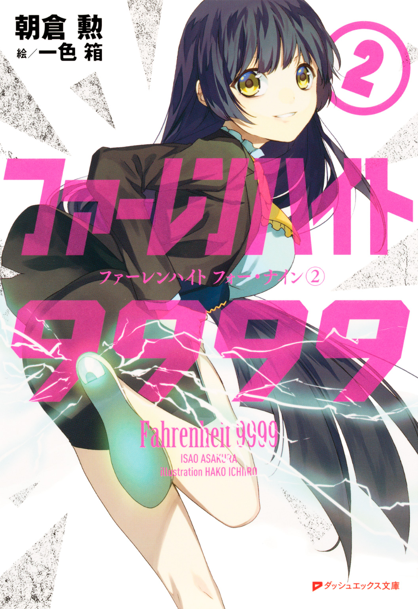
この本は縦書きでレイアウトされています。
また、ご覧になる機種により、表示の差が認められることがあります。
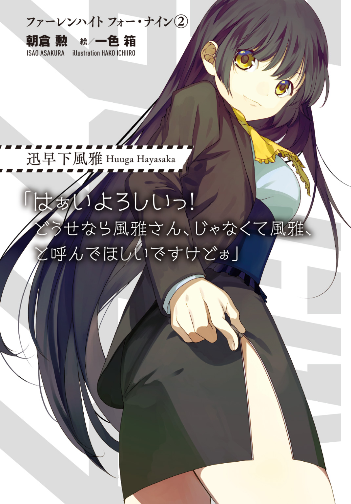

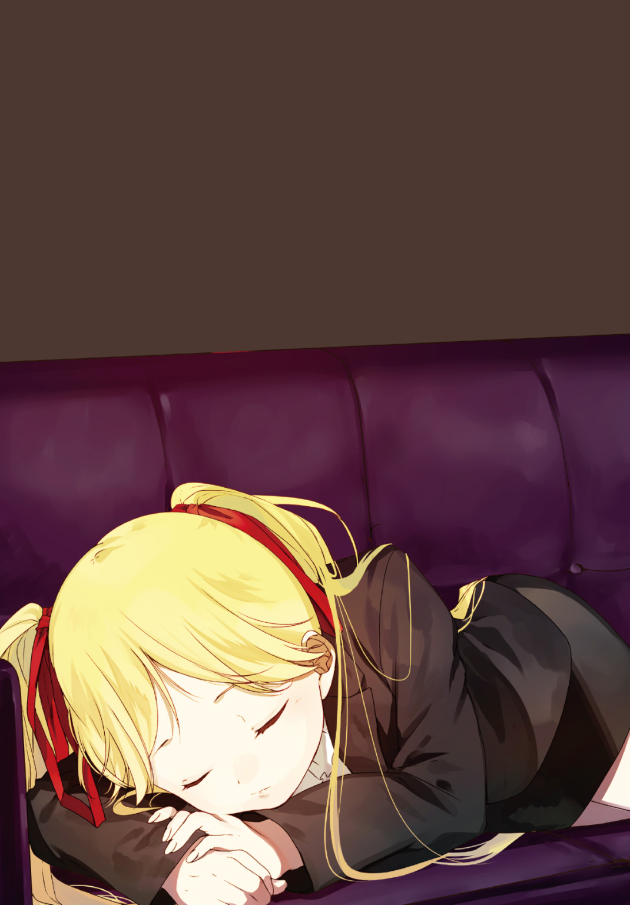
CONTENTS
～J KIDD～
～SURRENDER-VOLT AND LIGHTNING-FOOT～
～IN THE LINE OF HELLFIRE～
～BLACK HUNTER BLACK HEART～
～MAGNUM FORCE～
～HONKYTONK GIRLS～
～THE ENHANCER～
 ダッシュエックス文庫DIGITAL
ダッシュエックス文庫DIGITAL
ファーレンハイト９９９９②
朝倉 勲
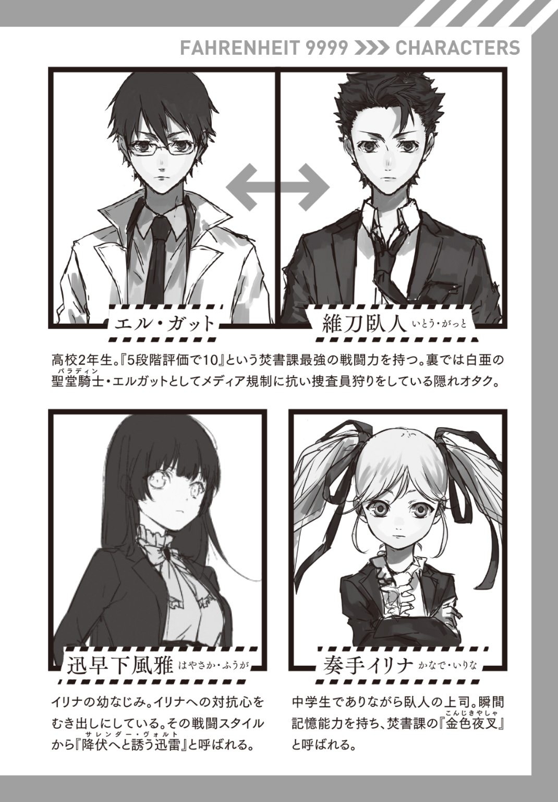
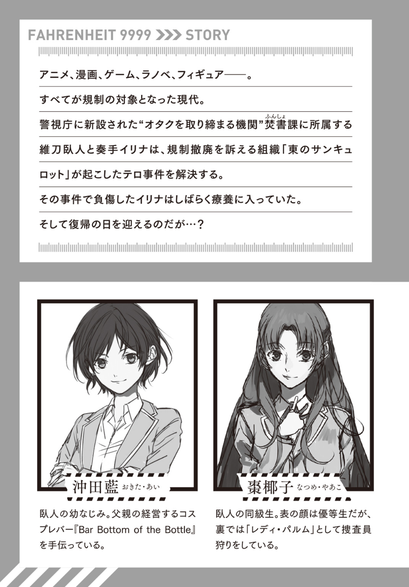
序．ジェイ・キッド
～J Kidd～
暗色が、総てのものへ平等に降り注ぐ。
夜とはそういうものだろう。
ここ秋葉原とて例外ではない。多くの店舗にはシャッターの形を借りた「閉店」の意思表示が施されていた。午後の九時ともなればこの街の大部分には眠りが訪れる。
俺たちが棲んでいるのは、そんな闇の只中だった。
「――ッぐ、あ！」
悲鳴。否、断末魔が俺の足元から発せられる。
声の発生源はビクンと痙攣ひとつ、動作の一切を停止。俺が頭部に蹴りを炸裂させたせいだ。男は警察官の制服に全身を固めていた。つまり俺は「警官へと暴行を働いた」事になる。
「さすがね、白亜の聖堂騎士。息ひとつ乱れる事もない」
後方から妖艶な女性の声。俺はそちらを振り返った。
「それはお互い様でしょう。『衝撃の紅』」
愚にも付かぬやりとり。あまりに馬鹿馬鹿しくて、俺たちは互いに笑ってしまった。
棗椰子さん。――いや、今は『レディ・パルム』と呼ぶべきだろう。
俺は彼女の出で立ちを眺めてみる。全身を赤い衣服で統一しており、どこか挑発的・挑戦的な意思さえ放っていた。その顔は「整った」の一言では失礼に値する程の美しさ、優美さを兼ね備え、茶色がかったポニーテールが大人っぽい空気で周囲を包む。昼間の「美少女」とはまるで正反対の「美女」がここには構成されていた。
俺と同じ学校へと通っている彼女は、裏で規制社会への反徒として活動しているのだ。こうして捜査官狩りを続け、最近では『衝撃の紅』という名すら貰っている。俺たちはこのように「傍若無人な警察官を攻撃しては警視庁へと送り返す」のが日常だった。
「今日は何人倒したの？」
そんな棗さんは片手を腰に当て、悩ましげに俺へと問うてくる。
「一人です。今日は捜査官もあまり出張ってないみたいで」
「あら珍しい、私も今夜はゼロだったわ。こうも少ないと逆に不安になるわね」
「そう何人も出て来られても困りますよ。最近じゃ警察官どころか、俺の首にかけられた賞金狙いの一般人にすら襲い掛かられますから」
「モテるのね」
「......バット振りかぶって襲い掛かってくるガチムチからモテたいなんて願望ないです」
微笑する棗さん。俺は乱れたコートの襟を正し眼鏡の位置を直した。
彼女が俺を『白亜の聖堂騎士』と呼ぶ所以、それは服装だ。純白の防弾仕様ロングコートを纏い、他の箇所も多くが白となっている。夜に「捜査官狩り」をする際の変装である。「昼間は焚書課捜査官であり夜は反逆者」という二重生活がバレないように。
警視庁文化保全部焚書課強襲特務室。そこに籍を置く俺は、背後で焚書課を裏切り「白亜の聖堂騎士エルガット」として、自身の仲間であるハズの捜査官と戦い続けていた。
――現代。オタクはその存在を否定されている。
三年前に発生した連続児童殺人『金曜の模倣者事件』を機に、オタク文化に対する規制が激化し続けているのだ。焚書課は事件の後「オタク連中の威力を伴った反抗」を鎮圧する為に設立された。
何の因果か、隠れオタクの俺は、その焚書課に配属されてしまった。
そして何の因果か、裏では課の背信者として仲間を狩り続けていた。
どちらが正しいのか、間違っているのか......そんな事を議論するつもりは毛頭ない。俺は自身の愛する文化の為に戦っているだけだ。そこには正義も矜持と呼べるものも無いのだから。
「――さて。本日のお仕事も終わったし、藍さんのバーに行きましょうか」
「ん、......ですね。この倒れている捜査官は誰かが運んでくれる事を願いましょう」
思考を打ち切る棗さんの提案。俺は彼女に同意し、この男を倒れたままに残していつものバーへの道へと足を向ける。
だが......その足が止まった。
原因は、前方で俺たちの行く手を遮るように立っている男だ。
「――こんばんは」
流暢な日本語。第一印象はそれだった。
なぜなら、眼前の男は一見して日本人ではなかったからだ。
彫りの深いその容貌は「美形」と呼んだところで失礼に値する程、妖しい中性的な魅力を放っていた。ある種、見ていて冷たくなる美貌だ。緑色の瞳がネオンの光を受けて煌めいている。俺と対象的に暗色が中心の服を纏っていたが、その身軽さも俺とは正反対だった。
男は、爽やかな笑顔のままで再びその口を開いた。
「初めまして、『Ｊ』です。好きなクレイモアは塵食いのカサンドラです」
「......初めまして、エルガットです。好きなクレイモアは微笑のテレサです」
「は、初めまして......レディ・パルムです。好きなクレイモアは......幻影のミリア？」
アホみたいなやりとりを楽しそうに笑う『Ｊ』。
「いい返しだねぇ。お二人はオタクなんだよね？ 僕も日本のコミックは大好きだよ」
「『Ｊ』、とか言ったか？ 何者だ、お前」
「そう疑わないでよ。維刀臥人くん」
「っ！ ......お前っ!?」
一気に俺の警戒意識が上昇した。『俺の正体を知っている』のだから――。
が、『Ｊ』はその笑みを崩さない。
「キミの事は色々と知ってるよ。『オフェンシブ・コード』を使用するんだよね。フィリップ博士の研究成果であるアレをさ」
「......？ オフェンシブ・コード？」
「俺が使う戦術の一つですよ棗さん。......しかし、ますます謎だな。フィリップじいさんの事まで知っているなんて」
「凄いねキミ。軍事心理学の大権威、フィリップ・ガーランド博士をじいさん呼ばわりなんて。さすがは最後の被験者、度胸が違う。......でも」
トン、トン。『Ｊ』は靴のカカトを鳴らした。
「違うのは度胸だけだよね？ 能力は全部『良』がいいところだ」
「随分な評価だな。まるで自分は更に上位だと言わんばかりの」
「そりゃそうだよ。......ま、今日は顔見せ。『バケモノとの戦い』頑張って。――それじゃ」
「何？ ま、待て！」
俺の静止に構わず『Ｊ』は軽やかな足運びで跳躍二つ。この路から脇道へと跳び、その姿を消した。俺は走ってヤツの消えた道を窺うが......そこに人影は皆無だった。
「な......何だ？ 登場していきなり駄目出しとか」
本当に何だったんだ、一体。釈然としない思いのまま元の通りへと戻る。そこでは棗さんが先刻と変わらぬ姿で立ち尽くしていた。
「言いたい事だけ言って消えてしまったわね......」
「知り合いですか、棗さん」
「い、いいえ......何者なのかしら、彼」
俺が聞きたいくらいだ。いきなり出てきて何を言い出すんだよ、アイツ。
......何かシラけたな。今日はもうお開きにしよう、そんな気分になってしまった。
「棗さんすみません。今日は俺、ここで失礼します」
「えっ？ 急ね。藍さんのお店に行かないの？」
「興が削がれちゃって。それに、明日は夜から用事があるので」
「用事？」
そう。明日は夕方から、先輩の――。
一．サレンダーヴォルト・アンド・ライトニングフット
～Surrender-Volt and Lightning-Foot～
「奏手イリナ捜査官っ！ 焚書課復帰おめでとぉーっ！」
パァン、パァアンッ！
破裂音が室内に響き渡る。
間違っても銃声ではない。音の出所はクラッカーだ。
この焚書課の一室に集った捜査官総員が手にクラッカーを握り、一人の少女へと向けて一斉発射を敢行したのだ。
その照準を向けられたターゲットは、主賓・奏手イリナ先輩。
「わ、わぁー......。あ、ありがとー、みんなぁー......」
果てしない棒読み。先輩の顔は困惑を色濃く映し出していた。彼女はツインテールに絡まったクラッカーのテープを更に困惑した様子で払い落とす。
「心配したよおイリナちゃんっ！ もう怪我は大丈夫なんでしょ？」
「あ、......ああ。うん。そうだな。大体」
「んんー？ どうしたの？ まだどこか痛いとか？ 元気ないよ？」
「いや、何というか......。こういった会は初めてというか、慣れていないというか......」
「それじゃー今回を機に慣れていこーよ！ こーいうイベントは社会の基本だよ基本っ！」
執拗に食い下がるこの女の子は、亜良多恋。
俺と同じ高校二年生。焚書課の若年捜査官で情報処理を担当している。階級的には俺と同じ、つまり奏手先輩よりも格下だ。が、彼女は上下関係が分からないのか分かって無視しているのか、先輩を「イリナちゃん」と呼び対等に接していた。眼鏡とブカブカの上着が彼女のユーモラスな印象を強くしている。
――つと、先輩と目が合った。
「......久しぶりだな、維刀。変わりはないか」
「ええ。こうして先輩が戻ってきてくれて何よりです」
先輩は微笑とともに頷いた。黒いジャケットは着ていない。ノースリーブに黒スカート、黒いニーソックスと、いつもより若干涼しげな装いとなっている。
俺は、こうして先輩と再び会話できる事が嬉しかった。最後に彼女と会ったのは......エルガットとして知事室に突入した時だろうか。必死に復帰準備を続ける先輩を邪魔したくなかったので、それ以降は面会していなかった。
つまり。ほぼ一ヶ月ぶりに、俺と先輩は顔を合わせた事になる。
「まさかこんな会が待ち受けていたとはな......まずは復帰の挨拶回りに行ってくるよ」
言い残して先輩は俺から離れ、課員の輪に向かっていった。
この乱痴気騒ぎは他でもない。「先輩の復帰祝い」だ。
二ヶ月前の『東のサン・キュロット』蜂起事件で負傷した先輩。彼女が今日、課へ復活するという事実を知るや、急遽「イリナさん帰還おめでとー会」の開催が決定したのだ。
周囲へと視線を巡らせてみる。テーブルの上にはピザやチキンなど、食べ物が山ほど。ドリンクのコップがそこかしこに並び、壁面ではカラフルな輪かざりが場を明るく彩っていた。立ち並んだ課のメンバーも一様に先輩を取り囲み、歓喜の言葉を贈り続けていた。
――と、突然。俺の肩を摑む手が背後から伸びてきた。
「よ、維刀」
振り返った先に在ったのは、チャラ男の顔面。柊立眞だ。
「立眞。......つ、つーか酒くさいなぁ！ ビール飲んでんのかよ!?」
「別にいいだろぉー俺成人してんだしぃ？ オマエと違ってさ！」
「お前さ、前もこういう場で泥酔してブッ倒れてなかったっけ？」
「記憶にねーなぁ全然記憶にねーわ。――いやぁー、しかし良かった良かった！ あの様子じゃ奏手ちゃん、完全に元通りってカンジじゃんか。お前ずっと心配してたから嬉しいだろ？」
「ん。まぁな」
「何ソノ反応。つーかお前、まーた俺を呼び捨てにしやがっただろ今ァ!? 『俺のことは柊さんと呼べ』っていつも言ってンだろー？ こっちは大学生だぜ？」
「やだよ。お前と俺、階級同じなんだし」
「ケッ、可愛げのねー高校生だぜ。......あ、そうだ。維刀もビール飲むか？ 持ってきてやろうか？ そんなジュースばっかじゃ味気ねぇだろ？ な？」
「未成年にビール勧めるなよ。ここ警察署内だぞ」
俺は小皿に取ったポテトをつまみながら立眞の格好を眺めてみる。
シャツの裾を出し、頭は気持ち悪いくらいに手入れされた長髪――。加えてピアスや開け放 たれたこの胸元を目にすれば、誰もコイツが若年捜査官だとは思わないだろう。現に「捜査中に補導される捜査官」という事態も何度か発生したらしい。
「あーッまた飲んでるタッちゃん！ ......って酒くさっ！ 酒くさああああっ！」
俺たちのやりとりを目にしたか、亜良多さんがこちらに寄ってきた。
「よぉー亜良多ぁ！ 飲んでるかああぁーッ!?」
「わ、私未成年だよっ！ て言うかそんな飲んで大丈夫？」
「ハッ！ 遊び人のタッつぁんがこんなモンで、くたばる、か......、ょ......――」
言葉尻が小さくなって、バタン。自称・遊び人のタッつぁんはその場に倒れ込んだ。
「あぁ......もうっ！ やっぱりこうなっちゃった！ タッちゃんってば仲がいい人を見つけてはイッキばっかり挑んでるんだもん、何度も止めたのにっ！」
「警察官がイッキとか終わってんな......亜良多さんも立眞と組んで苦労してるね」
「あははっ、ありがと！ そんな事言ってくれるのガッちゃんだけだよぉー！」
パタパタ。小さな両手を振って満面の笑みを見せる亜良多さん。
......この人、何で俺を「ガッちゃん」って呼ぶんだろ。何でも喰らう天使かよ俺。亜良多さんが以前「私って昔は軽いオタクだったんだよー」と口にしていたのを思い出す。
「いいんだよ？ ガッちゃんだけは私の事『亜良多恋、略してアラレちゃん』て呼んでも？」
「......結構です。つーかオタネタはやめようよ。ここ焚書課なんだからさ......」
「ぶー。ガッちゃんってノリの悪さだけが欠点だよねー」
膨れっ面の亜良多さんに苦笑しつつ、俺は視線を彼女から外す。
俺が目を向けた先では、先輩が先刻の戸惑いもどこ吹く風といった様子で談笑していた。やがて彼女は俺たちに気付くと――苦笑ひとつ。課員の群れから逃れるようにこちらへと歩み寄ってきた。
「......柊、また酒に呑まれたのか」
「成長しないですよね。前に酔っぱらって俺にゲロぶちまけた事も忘れてましたよコイツ」
「ご、ごめんねぇーガッちゃんっ！ この人は相棒の私が責任もって処分するから！」
そう言うと亜良多さんは立眞の首根っこをむんずと摑み、会場の外へと運んでいった。意外と腕力あるな亜良多さん。情報担当から現場担当に移籍すればいいのに。
一連の流れを見守る俺と先輩。彼女は心底嬉しそうにカラカラと笑ってみせる。
「どうしたんです先輩」
「嬉しいんだよ！ 私のためにここまで盛大なパーティを開いてくれた事が！」
「俺も先輩が帰還してくれて嬉しいです。あの東館ではどうなる事かと思いましたから」
「......あの後、お前が些々神を退けてくれたらしいな。ありがとう、維刀」
「いえ。今度からは一人で行かないで何かあったらまず俺を頼ってください」
「あ、う、うん。......――何かお前、ここ一ヶ月で随分と頼りになる感じになったな？」
「......いいんですよ？ 先輩だけは俺の事『おにいちゃん』って呼んでも？」
「だっ、誰が呼ぶかバカっ！ 亜良多のマネをするな亜良多のッ！ ......そ、そういえば維刀。私がいない間、お前は誰と組んでいたんだ？」
「え、えっ？」
先輩からの突然の問い。俺は返答に窮してしまった。......だって、その話題は。
「私が入院している間だけ一人で活動していたわけではないだろう？ 柊か？ フフッ、まさか亜良多ではないよな？」
「そ。それは、ですね」
「私ですよー。イリナさん」
先輩とはタイプの異なる少女の声が凜と響いた。
ここから遠く。人の群れの奥地から「カツン」と靴音を高らかに鳴らし、声の主は人垣をゆっくりかき分けて前に出てきた。歩を進めるたび、腰の辺りで切りそろえられた黒髪がパサリと優雅に揺れる。
周囲からは次々と声が上がっていた。
「おおっ！ 迅早下さんじゃないか！ やっと来たのかよ！」
「主催者が一番遅れて来るなんてダメじゃないですかぁー！」
彼女――迅早下風雅さんは、それらの声ひとつひとつに笑顔と感謝を与えてゆく。
やがてその視線が俺と先輩に向いて......微笑ひとつ。すぐにその方向を変え、流れるような所作で特設の壇上へと至った。
「――えー、遅れて申し訳ございません。この会を主催いたしました、迅早下風雅・中級予備巡査です。私がこの課に来てはや一ヶ月。時の経過は早いものです」
少女はよく通る、透き通った声質で唄うようにコメントしてゆく。かと言って長さにウンザリするような内容ではない。ところどころで笑いを取るようなユーモアも見せつけていた。俺と同じ学年なのにかなり場慣れしている印象だ。
「この会は奏手イリナさんの復帰を祝うためのモノです。彼女の代役としてこちらに配属された私としては、イリナさんの代わりが出来たと自負するところであります。とにかく今日は記念すべき一日、飲んで食べて楽しみましょう。......――えー、長くはなりましたが、最後に」
「ここに宣言します！ 捜査官として必ず、――『奏手イリナさんに勝利する』と！」
聴衆ドン引きのオチを付けて壇上から降りる風雅さん。周囲はしーんと静まり返っている。やがてようやくざわめきが戻ってきた頃、俺の口からは盛大なため息が漏れ出てしまった。
......あーあ。この会、先輩の帰還祝いなのに。なんであんな事言うかな。
当の奏手先輩が気になって、俺は視線を真横に向けた。
「ふ、風雅......？ 何で、アイツが焚書課に!?」
「えっ？ 知り合いなんですか先輩？」
「知り合いも何も！ アイツとは十年以上昔からの付き合いだぞ!? ......しかし、何故!?」
あぁ......気が滅入ってきた。なんでこうも立て続けに悪条件が判明していくんだ。
先輩はどう思うんだろう。「あなたがいない間、俺は彼女とコンビを組んでいました」と告げたら。
だが懸念する俺を嘲笑うかのように、事態は悪化の一途を辿る。
迅早下さんが俺たちの方へと歩いてきたのだ。
「お久しぶりです。イリナさァぁあん」
先刻のスピーチとは全く別質、塗りつけるような声質だった。
俺は彼女の全身を眺めてみる。......――黒い上下の制服は先輩と同じ。が、そのタイトスカートは「改造」が施され、側面にファスナーが見える。彼女は戦闘時にこれを上へ引き上げスリットを刻み、脚の可動範囲を広げるのだ。ジャケット内側のインナーは青く清涼感を放ち、藍色に染め抜かれたコルセットがそのくびれを一層細く見せていた。後頭部からストンと落ちるように流れる黒髪も彼女の魅力を際立たせている。
そして何より......その生足。タイトスカートの裾からスラリとしなやかに伸びたそれは、俺のような健全男子の心をかき乱すには充分すぎる『武器』だった。
「......風雅。なぜお前が焚書課にいるんだ」
「つい一ヶ月前に研修が終わったんですよ！ いやぁァ大変でしたぁー。何せ採用試験を通過したのがつい最近で、何度受験しても落とされ続けていたモノですから」
「......またアレか。私に対抗して、か」
「そうです！ イリナさんに勝つ事、それだけが私の生き甲斐ですから！」
「もういいだろ......構わないでくれよ。私に」
「そうはいきませんよぉ、こうしてようやく焚書課員になったんですから！ この一ヶ月間の検挙率だってダントツトップなんですよ？ ねぇ臥人さん？」
「は、はぁ......」
「なぁ、ッ!? 『臥人さん』!? 『臥人さん』だと!? ハァァぁぁああ!?」
金髪の夜叉が俺の隣で絶叫。――あ、血走ってる。先輩の眼。
「......迅早下さん。先輩と知り合いだったんですね」
「あれ、言ってませんでしたっけ？ イリナさんとは小学校からの仲でして。以来様々な場で互いに競い合ってきました。まぁアレです。腐れ縁とかいうヤツです」
「そのまま腐れ果てて風化して欲しかったよ......私は」
吐き捨てる先輩には構わず、迅早下さんは俺へと流し目を向けてきた。
「にしても。臥人さんって何度言っても分かってくれないんですね？ 私、悲しいです」
「は、はい？」
「その呼び方はやめてください」
そう言うと、彼女は俺に近寄り、悩ましげに首を傾けた。
妖艶な笑みを伴って俺を誘うかのような仕草。そして彼女は口を開くと。
「――『風雅さん』。そう呼んで、と言ったじゃないですか。ふふっ」
「っッ、ッ!?」
「わ、分かりました......風雅さん」
「ハイよろしいっ！ どうせなら風雅さん、じゃなくて風雅、と呼んでほしいですけどぉ」
「呼んだらどうします？ 先輩とのこの険悪なムードをとりやめてくれますか？」
「多分無理ですけど。――そうですね。何でもしてあげます」
「えぇ......？ じゃあ例えば『風雅、脚を上げろ』って命じたら？」
「構いませんよ？ それくらい。......――ん、っと」
「わぁーやめてやめて！」
正直、そのおみ足およびスカート内部を観察したかったので、若干棒読みになってしまった。風雅さんは半分まで上げた脚を地面におろしてフワリと微笑む。
その視線の先には、苦虫と一緒に剃刀と画鋲を嚙み潰したような表情の奏手先輩。
「んー？ どうしました？ イリナさァぁん？」
「......オマエ！ 私がいないのをいい事に、維刀と何をやっていた!?」
「何を？ はて何の事でしょう？ 普通にお仕事してましたが？ どうしました嫉妬ですか？あぁ怖い。今のイリナさん凄い怖い顔してますよ？ 大丈夫ですか？」
「こ、この......ッ！」
飛びかかりそうな彼女の言葉は、そこで途切れた。
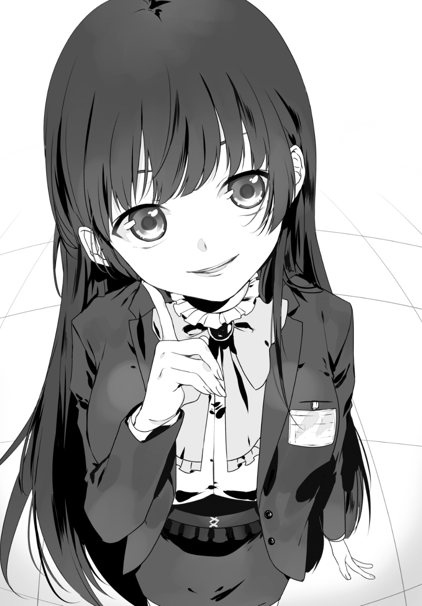
《......――焚書課に緊急入電。『都内に違法コンテンツ所持』との通報。各自確認されたし》
署内放送が突然けたたましく響いたのだ。
途端に俺も先輩も風雅さんも、先刻まで酒に騒いでいた他の課員でさえ。その表情が完全に仕事用へと切り替わった。「業務」だ。焚書課で俺たちがこなしている日常が始まる。
焚書課は「一般市民からのタレコミを受けての出動」が業務の七割となっている。そうして向かった先でオタクを検挙し、証拠を押収して一連の活動は終了となる。今はその第一段階である「出動」というワケだ。
だから俺は慣例に従って、先輩と武器を取りに火器管理室へと向かおうとした。――だが。
「いえイリナさん。必要ありません」
そう風雅さんが先輩を引き留めた。
「必要ない？ どういう事だ、風雅」
「貴女が出動する必要はない、そう言ったんです」
「......何だと」
「だってイリナさん、貴女病み上がりでしょ？ これでも私なりに気を遣ってるんですけど。......あぁ、でもいい機会ですね。やっぱり貴女も一緒に来てください」
カン、カンッ。風雅さんはカカトで床を軽く小突いた。
「ここは私がやります。――臥人さん、昨日までと同じように私のバックアップを願います。イリナさんに見てもらいましょうよ、我々の戦術を」
「戦術!? い、いやでもオマエ......戦闘は？」
「イリナさん。認識票を見せてもらえます？」
不意を衝かれたか。先輩は怪訝そうな顔をしつつ、胸元の認識票をかざした。
「......ほら」
『戦闘３、頭脳５、技術２、統率４、対人３』――計十七。これが先輩の全ての評価値だ。
風雅さんはそれを目にして......鼻で笑った。そして自身の認識票を見せ返す。
『戦闘４、頭脳３、技術２、統率５、対人４』――計十八。
「あらら、これは酷い......戦闘、統率、対人。三つも私が上ですねぇ？ 合計値も！」
「ず、頭脳っ、頭脳の欄を良く見ろ！ 頭脳は私が上っ！」
「あー喧しい......。まぁ見ててくださいよ、私の戦闘を。そして、私と臥人さんの連携を」
カツン、カツン。
静寂だけが存在を許される夜の住宅街に、ヒールの音が響く。
風雅さんの足下から聞こえるそれは夜の闇をいやに妖しく彩っていた。スタイルの良さもあるが、歩く度に黒髪が「パサリ」と揺れるのが何ともコケティッシュに映える。
そしてその後方。俺と先輩は彼女の数歩後ろを歩いていた。
俺は被害者っぽい態度で。先輩は加害者っぽい態度で。
「......あの、先輩」
「何だ後輩」
後輩って。これ相当機嫌悪いぞ......。
「維刀。どういうことなんだ。風雅と随分仲がよさそうじゃないか」
「どういう事も何も......先輩が不在の間、俺は風雅さんと組んでたんですよ」
「そっちじゃない。アイツを『風雅さん』と呼んでいる件だ」
「そう呼ばないとしつこいんですよ。あの人」
「しつこい相手には根負けするのかお前。亜良多もしつこいぞ。何故『アラレちゃん』と呼ばないんだ。私もしつこかったら『イリナさん』と呼ぶのか。節操がないんだなお前は。お前自身は一体どこに在るんだ。一体何なんだお前は。何が『おにいちゃんと呼んでいい』だ」
「......怒ってます？」
「怒ってるだと!? 怒ってるワケがないだろう！ 何で怒るんだ私が！ なぁ!?」
「無駄話はそこまでにしてくださーい、お二人さん」
風雅さんの無粋な言葉と共に――カツ、と。ヒールの音が停止した。俺たちもそれにならい歩行をやめ、建物の上部に掲げられた看板を睨む。
レンタル倉庫『ＢＯＸワン』。目的地だ。
数十分前、焚書課に入ったタレコミは「このレンタル倉庫でオタクがコンテンツを不法管理している」といった旨のものだった。課としては見過ごせない。
通常の慣習に従うのならば「二人同時に扉から突入する」ところなのだが......。
「では臥人さん。これまで通りに」
彼女に小さく頷いて、俺は扉を覆うように立った。中には入らない。
一方、風雅さんは「単独で」扉を蹴破り、内部へと突入した。
「......――失礼します！ みなさん、そこから動かないで！ 焚書課です！」
胸元の認識票をかざしつつ部屋の中心部まで一気に至り、そう叫ぶ彼女。
俺は扉の外から室内の状況を確認する。この部屋はフロントの役割を果たしているようだ。人は右に二人、左に五人。そして中央に六人。奥から出てきた小太りの男が立つ瀬もなくオロオロとしている。倉庫は個室のようになっているらしく、俺の立っているここからも見えた。
一番右のカウンターに居た男が風雅さんの前に進み出た。
「......焚書課が何の用だ」
「こちらの倉庫にコンテンツが違法保管されているという情報が入りまして」
「令状は？」
「ありません。ちょっと奥の倉庫の中を見せていただければ結構です。いちいち令状を取るような案件ではないでしょう？ すぐに済んですぐに帰りますから」
「裁判所命令でもないのに家宅捜索だ？ ......お嬢さん、冗談はほどほどにしろよ」
男がそう言うと、周囲に居た客が風雅さんを取り囲んだ。緩慢でありつつも威圧感を含んだ動き。脅しのつもりだろう、本当に攻撃する意志は見受けられない。
だが風雅さんは。その中心で心底嬉しそうに微笑を零す。
「――では、無駄だとは理解していますが念のため。......全員『降伏しなさい』！」
唄うように。謳うように。警告を発して即座、彼女は靴のカカトを床に叩き付けた。
途端、足下から「バシィンッ！」と弾け飛ぶ音を伴って、青色の閃光が迸る。電流だ。それが蜘蛛の巣のように四方八方へと拡散、彼女の脚に絡み付いては虚空の露と消えてゆく。
『スタン・ヒール』。迅早下風雅の為だけに製造された電撃制圧武器。
カカトは青白い光を放ち、なおも余剰電力を微細に撒き散らしていた。風雅さんはタイトスカート側面にあるファスナーを上げ、スリットからその妖艶な太股を剝き出しにする。
本来ならばその行為に視線を奪われるのだろう。が、今や周囲の連中には動揺が走っていた。
「ま、まさか......『降伏へと誘う迅雷』!?」
「コイツが!? ま、マジかよ......っ！」
「くっ、クソが、逃げるぞ！」
戸惑う彼らへ嘲笑ひとつ。風雅さんは前方に駆けだした。
「残念♪ 今さら気付いても遅いです！」
――戦闘、開始。
まず彼女は一人目に接近するや否や、その長い脚を強く振り上げた。
「ガ、っ！」
炸裂音と共に紫電が舞う。
強く蹴ってはいない。なのに彼は全身を引きつらせ、その場に崩れ落ちた。
「ひっ、ひいぃイッ！」
「逃がしませんっ！」
次いで出口へ向かおうとした男を睨む風雅さん。
彼女が水平に伸ばした脚は、やはり男に少し接触だけで電撃を放出した。風雅さんの武器は「触れただけで気絶させる」事が出来るのだ。白目を剝いて倒れた男に構わず、風雅さんはスッとその美脚を引き戻す。
「な......何だ、あの装備は!?」
そして驚愕を隠せない先輩の声。彼女の双眸は風雅さんの足下を追い続けていた。
「靴......？ カカトが帯電しているのか......？ 何だアレは、維刀!?」
「焚書課に導入された新型の制圧武器です。本来は『帯電した棒を相手に当てて気絶させる武器』なんですが......風雅さんはそれを靴のカカトに仕込んでいるんですよ」
説明しつつ前方の状況を確認する。
「......どうしました？ この程度ですか？」
囲まれていた円、その一角を彼女は瞬時に切り崩していた。時間にして十秒もかからなかっただろう。斃した男二人を見下して風雅さんは不敵に笑う。
「逃げてもいいんですよ？ まぁ、無駄なんですが」
「クソっ！ サレンダー・ヴォルトだと知っていたら......ッ！」
「知っていたらどうしました？ 降伏してくれたとでも？」
「するワケねぇだろうがッ！」
「ですよね。だから私も手加減の必要は無い、と。......それでは、行きます！」
風雅さんは躍り上がった。嬉々として。
片足を軸として振り回し、独楽の如く回転――。スラリとしなやかで長い脚部、それが辿った軌道を蒼い残光が塗りつけてゆく。柔軟な全身をバネのように反らしながら。
「踊るように」そんな比喩がある。華麗優美な所作を賞賛する際に使われる言葉だ。だが今この状況を鑑みるに、彼女にその喩えは的確ではない。
風雅さんは現に「踊っている」のだから。本人が言うのには彼女の戦闘動作はバレエのステップを応用した動きらしい。
と。隣にいる先輩が、独り言を呟いている事に気が付いた。
「スタンバイ動作......突き刺す蹴り。――飛び込みからの蹴り......。回転飛び込み、回し蹴り。助走からの大ジャンプ............弧を描く後方回し蹴り。......開脚蹴りからの回転蹴り......！」
「えっと。あ、あの......。先輩？」
......若干引いてしまう。どうやら俺とは違う世界が見えているらしい。風雅さんの戦闘動作を呟きつつ追っている。彼女も昔バレエを習っていたらしいので「どの攻撃がどの動作を基にしたか」が分かるのだろうか。俺には完全に理解の外だ。
「うごぁ！」
「ギ、ぃィッ！」
「歯応え皆無ですね......ガッカリです！」
この間にも風雅さんは敵の数を減らし続けていた。繊細に、だが大胆に。彼女はあろう事か、この鉄火場を自身のステージとして所狭しと踊り回っている。
一歩間違えば酷く有り得ない動作に映ってしまうだろう。だが、今ここで舞踏を繰り広げる彼女に、そんな無粋な評価を差し挟める人間など存在しない。
「魅せられてしまう」のだから。彼女の暴力行為に。
その恐怖に制圧される対象を除いては。
「ヒッ！」
「が」
「ゴ、ォっ！」
少女の独壇場は続く。手加減も無く、容赦も無く。
華麗な中心部の外周は酷い有様だった。悲鳴、雷撃の網、焦げくさい臭い、空気が弾ける音。もはや敵の半数以上が無力化されている。彼女と行動を共にしていると考えてしまう事がある。「俺なんかが来る必要あるんだろうか」と。
......と。前方から一人の男が俺たちの居る方向へと逃げてきた。
さすがの風雅さんでもこの人数は捌ききれないか。
「臥人さん！ そちらに行きましたよ！」
「うぃーす」
俺は腕を伸ばし、襟元を摑んで引き倒す。男は地面に叩き付けられて意識を途絶した。
俺の役割はこれだけ。風雅さんが逃した敵を処理するだけ。
本当に、これだけ。
「......随分と楽な職場に成り下がったようだな、維刀。手を抜いて食べる飯は美味いか？」
「......おかげさまで」
鋭利な眼光から逃れるため俺は室内へと視線を逸らした。
そこに展開されていたのは、やはり予想どおりの結末――。
電撃で意識を剝奪され微動だにせず、床に突っ伏す反逆者たち。その中心に立っているのは冷厳なる踊り子。ここ一ヶ月で何度も同じ光景を目にした。デジャヴかと錯覚するレベルで。
そして風雅さんはカカトを今一度鳴らし、電撃機能を停止させた。
刹那、クルリと廻って一礼。
「以上です。......――ご理解の程、いただけましたか？」
拍手ひとつ起こらないこの場で、風雅さんはその名が表すように優雅に全てを終えた。
戦闘開始から五分も経っていない。終始あくまでエレンガントに、極めて速やかに。だが容赦は一切無く。
――制圧は、完遂された。
数分後。現場はすぐに黒山の人だかりと化した。
この場合「黒山」という表現は実に的確な言葉選びだろう。現にこの場に集う人間、そのほぼ全てが黒服を纏っているのだから。
現在――この現場は焚書課の証拠回収班が、大勢駆け付けている状態だった。
立入禁止と記された黄色のテープが周囲に張り巡らされ、一般市民の進入を拒む。その只中ではカメラのフラッシュが盛大に焚かれて各押収物が撮影されていた。ここは倉庫、ブルーシートに並べられた証拠など氷山の一角だ。まだまだ証拠は出てくるだろう。隠れオタクとしては心苦しい光景だった。
「迅早下捜査官。これを」
警官の一人が風雅さんに歩み寄り、一枚のカードを手渡した。
「何ですかソレは。名刺？」
「ええ。そこのカウンターに置かれていました。個人の名前は書かれていませんが、肩書きを見てください」
「『斗蛾山組』......暴力団ですか。最近はオタク文化に暴力団が一枚嚙んでいる案件も増えていますからね。これは組織犯罪対策部へと廻しておきましょう。場合によっては脅迫罪などで摘発できます。ご苦労様」
敬礼し、彼は再び証拠探しへと戻った。
ヘンな光景だ――。見る度にそう思う。
名刺を渡した警官は若い。巡査、大目に見て巡査長だろう。対する風雅さんの階級は「中級予備巡査」。予備巡査という階級は巡査の下だ。にも拘らず彼は風雅さんに対して敬語で接していた。理由は唯ひとつ「中級予備巡査は成人後、警部補として警察に編入される」から。つまり、将来的に風雅さんが上司となる可能性が高いため、彼女を上位権限として見ているのだ。
これは焚書課独特の光景だった。現に『特級予備巡査』である奏手先輩に対しては、俺含めほとんどの警官が敬語を使っている。「特級」は「警部」と同義だからだ。
そして俺は、下級予備巡査。下の下。紛うことなき巡査の下。
己の情けなさに苦悩していると先輩が風雅さんに駆け寄っていった。
「風雅」
「ん？ 何ですイリナさん？ 私の捜査方法に何かケチでも付けたいんです？」
「......そうじゃない。もうこんな時間なんだ、近隣住民の迷惑になるぞ。今日は引き上げたほうがいいんじゃないか？」
「早速エラそうに先輩ヅラですか。特級サマは私よりも上位権限持ちですからねぇ」
粘着質な笑みを伴って風雅さんは入り口を眺める。バリケードテープの向こうでは近所からやってきた野次馬が様々な表情でこちらを見つめていた。
「まぁ......でも確かにそうなんですよね。ここは住宅街のド真ん中。夜遅くにパトランプ照らして大騒ぎなんてのはあまり好ましくないです」
そう言ってすぐ、風雅さんは「捜査官のみなさーんっ！」と大声で叫んだ。
「今日はもう遅いです！ ここまでにしましょう！ この現場は一旦封鎖、証拠の回収は後日とします！ ご苦労様でしたっ！」
顔だけを向けた各々の捜査官。やがて彼らは頷き、撤収の準備に取りかかり始めた。
風雅さんはにんまりと再び先輩に顔を傾ける。
「――さて。どうでした？」
「どうでした？ ......って」
「私の戦闘、および統率についてですよ。瞬時に集団を壊滅させる戦闘力はもとより、臥人さんをこうも効果的に使役して対象を逃さないなんて。課では前代未聞のコンビネーションではありませんか？」
「......何が言いたい」
「『迅早下風雅こそが維刀臥人に相応しい』。そう思いませんかぁ？」
先輩からの返答は無い。顔を伏せたからだ。肯定しているのか、否定しているのかさえ判別できない。そんな彼女に風雅さんは畳み掛けるように句を継いでゆく。
「あぁそうだイリナさん、伝え忘れてました。貴女が居ない一ヶ月、私と臥人さんの検挙数は焚書課創設以来トップだったらしいですよ？」
「えっ!? そ、そうなのか維刀？」
「そうらしいですよ......」
「そうなんですよぉ！ というワケで課としても、私と臥人さんのコンビを解消するのは避けたいらしいんです。かと言ってイリナさんの復帰早々にバディを奪うというのも心苦しいそうで。まぁ確かに、臥人さんの相棒が浮いたままなのは問題ですよね。――なので」
ピッ、と。風雅さんは人差し指を立てた。
「こうしましょう。『一日ごとに臥人さんのバディを交代してどちらが優秀か決めてもらう』。どうです？」
「――な、ッ!?」
先輩が顔を上げた。あまりにも想定外の提案だったのだろう。俺も同じ思いだった。
「決めてもらう、って。誰に決めてもらうつもりだ？」
「一ノ瀬室長や同僚、無論臥人さん本人にも。負けた方は臥人さんを失います」
「だ、駄目だ！ と言うか何でオマエが場を仕切ってるんだよ!?」
「......ん。そんなに臥人さんと離れるのが嫌なんですか。臥人さんの事が好きなんですか？ もしそうなら譲ってあげてもいいんですけど？」
「ちちちちちち、違うっ！ それは断じて違うぞ！」
「じゃあ別にいいでしょ。はい決まり！ ――あ、先攻はそちらからどうぞ？」
先輩は返す言葉もない様子だ。もはや完全に風雅さんのペースに呑まれている。
風雅さんは自身の完全勝利を確信したのか、その顔に歓喜を滲ませながら俺たちに背を向けこの場から離れていった。
「負けませんから。貴女に勝ちます。今度こそ」
呆然と風雅さんの背中を見送る俺たち。完全に部外者のような扱いだった俺は嘆息した。
......当の俺の意見は一切聞いてくれないんだな、二人とも。
「――何だ！ 何なんだ！ なぜ風雅がッ！」
カウンターテーブル。少女の怒号が響き渡る。
周囲は完全に静まり返っていた。この場では先輩の声だけがハッキリと残響している。
「お、おい」
「ああ......帰ろうぜ」
後ろでは俺たち以外の客が次々とこの店から出て行っている最中だ。
......あ。今しがた、最後の客が店から消えた。
まぁ、そうなってしまうのも当然だろう。ここは『Ｂａｒ Ｂｏｔｔｏｍ ｏｆ ｔｈｅ Ｂｏｔｔｌｅ』。本来はオタクの反逆者どもが集う店。『金色夜叉』の名を貰う焚書課捜査官の先輩が来るべき所ではない。......いや、厳密な意味では「今の俺」も。
今、俺と先輩は焚書課の制服でこのバーにいるのだから。
俺は苺ミルクの砂糖抜き。一方先輩はメロンフロート......それと周囲を埋め尽くす各種甘味をカウンターテーブルに満載している。キルシュトルテ、ティラミス、マロングラッセ、フルーツパフェ、パンナコッタ、ケイシャーダ、マンゴープリン、モンブラン......etc.。見ているだけで満腹になってしまう。つーか甘い食べ物に甘い飲み物ってどういうセンスなのだろう。
そして、それを出してくれた店員さんは――......。
「おーいおいオイオイ！ 待てやコラぁ！ 何でコイツがこの店にいるんだよッ!? 怯えて客が全員帰っちゃっただろうが！ 完ッ全に営業妨害だろコレ！」
やっぱりブチギレていた。
「おいガット！ どこに被害届出せばいいんだコレ!? テメェらの根城の警視庁か!?」
「藍ちゃん。客が居ない分は先輩がいろいろ注文してくれてるんだから、逆に感謝しないと」
「お前殺していいかガット？ 揃いも揃ってテメェら黒ばっか着やがって......ＧＫ乙！」
あぁダメだ、話が通じそうもない。野生のゴリラと対話してる気分だ。
彼女は沖田藍。俺の幼馴染であり、このバーのマスターの娘。下ネタと挑発する発言をよく俺にぶつけてくる不埒な女の子だ。今はメイド服姿だし、顔立ちもそこそこ整っているのだが今日ばかりはその顔を、鬼神の如き怒りで歪ませていた。
当の先輩は頰杖をつきながらズズズ、と。ドリンクを吸い込みつつ藍を睨んでるし。
「維刀......何だこの騒がしい店員は。お前が薦めるからこの店に来たんだぞ？」
「すみません先輩。静かにさせますから」
「おおぉ何だ何だぁ!? 随分と偉そうじゃねーかこのパツキンツインテはよぉ！ この店でやらかした事を忘れたワケじゃねーだろうなァ！ ァぁあアッ!?」
「グラスを破壊した件か？ ちゃんと謝罪しただろう」
「謝罪ってのは名刺置いていく事か？ テメェ小学校からやり直せ、道徳を中心にな！」
「......維刀。何とかしてくれ」
逆らうワケにもいかない。俺は頭を搔きながら藍に向き直った。
「藍ちゃん。先輩は今日、大変ご傷心なのだ。百歩譲って今日だけ許してくれまいか？」
「おいコラ糞虫チンカス塵ガット。アタシはな、コイツが店にいる時点で既に一兆歩譲ってるんだぞ。次は何歩譲ればいいんだ？ 一京歩譲ればいいのか？」
「一飛んで飛んで飛んで飛んで飛んで飛んで飛んで飛んで飛んで飛んで一歩譲れば？」
「『飛んで』が一個足りねーんだよカス！ あああぁあぁぁあモオおおおおオオっ！」
カウンターをブッ叩いて、藍は店の奥へと消えた。......ゴメンね、藍ちゃん。
隣の先輩はそんな些事など何処吹く風。グチグチグチグチやるのを再開している。
「まったく......現場復帰して早々、なんでこんな事に......」
「嫌いなんですか。風雅さんが」
「嫌う嫌わない以前にメンドくさいんだよアイツはッ！ 昔っからすぐ私に対抗して！ アイツ確かお前と同じ学年だぞ!? 何で年下に張り合ってくるんだよっ!?」
「お、俺に聞かれても。何か昔にあったんですか？」
「お前に何も教えていないんだな......アイツ」
ふーっ、と。長く、大きなため息を先輩はついた。
「......昔、妹とバレエを習っていたという話はしたな？」
頷く俺。先輩は俺から視線を外し、正面をぼーっと眺めて口を開く。
「それが原因だよ。私にバレエで勝てなかったのを根に持って、私が何かを始めたらマネしてやり始めるんだアイツは。......まぁ、そのどれでも私には勝てなかったんだが」
「えーっと。つまり？」
「今回も一緒だろ。奏手イリナに勝つためだけに迅早下風雅は焚書課へ入ったんだ」
「え。......そ、それだけ？」
「そうだよ！ だがアイツは『負けた』という事実が凄まじい衝撃だったらしい！ 数日間寝込んで熱でうなされたそうだぞ！ 『私が負けた......？』とずーっと呻きながらな！」
無言。思わず俺は絶句してしまっていた。
「それからだよ、風雅の粘着が始まったのは！ 私が書道を始めたら真似して始め、次に茶道を始めたら同じ教室に乗り込んできて、近接戦闘を習得しに行けば数日後には防具も全部揃えていて......！ あぁもう思い出しただけで苛つきが湧き上がる！」
もう完全にホラーだろ。『同居人求む』って小説を思い出してしまった。と言うか風雅さんってベジータっぽいよな。インナーも青いし。
「挙句の果ては焚書課だ。......くそっ。ここ数年はアイツを見なかったから油断していたな」
「じ、重傷ですね......何がそんなにショックだったんでしょうか」
「知らないよ！ 本人に聞いてくれ！ ......――おい店員、ドリンクおかわり！」
「テメェで入れろコノヤロウ！ さっさと出てけバカヤロウ！」
北野映画みたいになった藍の声が厨房から響いてきた。語尾が若干泣き入ってるように聞こえたのは気のせいではないだろう。飲み物のおかわりが来ないまま、先輩はヤケ食いの如くスイーツの山を崩し続ける。黙ってそれを見つめる俺。
どれだけそうしていたか。
「......維刀。これは言うべきかどうか悩んだんだが」
先輩の妙に厳かな声に意識を引き戻された。
「何です先輩。今さら改まって」
「実はな。今回の負傷を機に焚書課を辞職しようと思っていたんだよ。私は」
「え、っ」
「大怪我を負ってしまったというのもある。だがそれ以上に、『最年少捜査官』である私が、想像以上の迷惑を課に掛けてしまったのが苦しくてな。それに、――『オタク全員が犯罪者ではない』と知ってしまったんだから。私は」
予想外の弱音を目の当たりにし、反応に窮してしまう。
――一ヶ月前。あのビッグサイトで些々神リュウに重傷を負わされた際、先輩を「周囲のオタク連中が庇った」という情報は俺も聞いている。恐らくそこで彼女の価値観が揺らいだのだろう。「オタクは害虫ばかりではないのだ」と。
が、これは同時に彼女のアイデンティティ・クライシスをも意味する。今までは何の疑問も持たずにオタク検挙を続けてきたのだから。彼女は嫌悪対象の新たな一面を目撃し、苦悩しているのだろう。「こんな気持ちで検挙など続けられない」と。
あの帰還パーティでの笑顔が今も思い出される。もしかするとあの時は「最後くらいは楽しみたい」、そんな想いだったのだろうか。
「......だが、風雅が配属されたとなれば話は別だ。負けられるかあんな奴に。お前を風雅に取られるワケにはいかないんだからな！」
「別に張り合う事ないと思いますけど......」
「そ、その為にはまず両者の信頼関係を強化するのが急務だ！ アイツは『臥人さん』と呼んでいるし、さしあたって私たちの呼称をもっと親密にする必要があると思うんだよ、うん！」
「と言いますと」
「お前は私を『イリナさん』と呼べ！ 私はお前を......お、『おにいちゃん』と呼ぶから！」
「......分かりましたイリナさん。おにいちゃん頑張っちゃいます」
「よ、よし！ 明日は頼んだぞ、おにいちゃん！」
嬉しそうな先輩。......だが、すぐにその表情は能面のようなものへと変化した。
「......――何かアレだな。ムカつくな？」
「......――ええ、口にしていて自分をブッ殺したくなりました。止めましょう」
自身の暴走具合が恥ずかしいのか、先輩は赤面しつつスイーツを口へと運搬し続ける。
しっかし......想像以上にアレな人らしいな風雅さんって。俺みたいに「組織の情報狙い」で入り込む輩ならまだ分かる。だが彼女に目的など一切存在しない。先輩だけを目の敵と定め、課の内紛問題を増やしているだけなのだから。ままならない状況に俺は頭を抱えた。
「ハァあああああぁァ......。二人でやってた頃は良かったよなぁ......？ 維刀？」
挙げ句、隣ではヤケ食いしつつ先輩がグチグチグチグチを再開しているし。もう酔っ払いの上司レベルだろコレ。いい加減に話題を変えないと。
だが。その必要は無かったらしい。
「――ああぁ、居た居た」
くぱぁ。......カツン。カツン。
相変わらずイラつく効果音を演奏するスイング・ドア。それが押し開かれ、店内に一人の闇色が生足を踏み入れてくる。そのまま店の中央まで歩みを進めて――。
迅早下風雅は、目を細めて店内を一瞥した。
「随分とシケてますねぇ。お客さんがまるで居ませんよ？」
誰も返答しない。藍は店の奥に行ってしまったし、俺はただ彼女を肩越しに見ているだけだ。先輩に至っては何もないカウンター正面を見据えて凄い渋面を作っている。
風雅さんはカウンターまで歩み寄ってくると先輩の後ろ姿を視界に捉え......鼻で笑った。そしてすぐに目線を俺へと移し、これ以上ない笑みを向けてくる。
「こんばんはぁー臥人さん。こちらにいらっしゃったんですね」
「お疲れ様です、風雅さん。どうしてここに？」
「夜の警邏も兼ねてアキハバラ探索です。......まぁ、この店に来たのはついでです。前から気になっていたんですよ。『白服の変態が出没する変態店舗』だと聞いて」
ここが『変態店舗』扱いなのはまぁ分かる。だがその『白服の変態』とは誰の事だ。まったく心当たりが無いんだが。皆無なんだが。
笑みを絶やさずに「隣よろしいですか」と一言。風雅さんは俺の左隣へ腰掛ける。
結果――俺は右の先輩と左の風雅さんに挟まれる形となった。......だがここには「両手に花」という状況を堪能できる空気など微塵も存在していない。
「どもー、イリナさんっ♪」
「......何の用だ」
「ご挨拶ですねぇ、応援に来てあげたのにぃ。貴女が相棒を失わない事を願って」
「ご心配痛み入る。もう帰っていいぞ」
「まーどうせ無駄なんですけどね、私が臥人さんを奪い取るんで」
そう言うと両者は無言になった。だが言葉は無くとも二人が中空で火花を散らせているのが嫌でも分かってしまう。せめて俺を挟むのは止めて欲しかった。
と突然。風雅さんが嫌そうな顔をみせた。
視線の先には、先輩の前にズラリ並ぶ各種スイーツの砦。
「......まーた甘味ですか？ 本当に好きですね」
パンナコッタをスプーンで崩して、ぱくりと一口。先輩はニンマリと満面の笑みで風雅さんに頷いた。今日ここに来て初めて先輩の笑顔を拝めた事になる。
「美味いぞ。この店は店員が最悪だが、甘味は良いものを出すらしい。お前もどうだ風雅」
「遠慮しておきます。見てるだけで胸焼けしそうです。ていうか現在進行形でしてます」
風雅さんはともかく、先輩に手ずからこしらえた食べ物を褒められて藍も嬉しいだろうな。そう思って店の奥へと目をやると......藍ちゃんは無表情で中指を立てていた。なぜか俺に向かって。何で俺にキレるんだよ。やめてくれよ八つ当たりは。
「イリナさんって昔っからこうなんですよ臥人さん。その体のどこに入ってるんだか......」
「確かに、いつも甘い物ばかり食べていますね先輩って。偏食家っぽくて心配です」
「何でお前が私の食生活を心配するんだ。お前は私の母親か」
「貴女が甘い物を食べ続けるのって、好きなプロレスラーの真似なんでしょう？ 正直どうかと思いますけどね。何て名前でしたっけ、貴女がファンの人」
「真壁刀義」
「そうその人。何かすっごい怖そうな人だった記憶がありますけど......」
「えっ？ せ、先輩ってプロレスファンなんですか!? マジで!?」
「ああ、新日の興業は必ず観に行っている。今度お前も連れて行ってやるよ維刀」
ふふん、と鼻を鳴らしてパンナコッタの処理を再開する先輩。
俺は苦笑いしか出ない。全然繫がらないんだが。先輩とプロレスが。
......と思ったが、彼女の体軀に似合わぬ力任せな戦闘スタイルを鑑みれば、納得できる部分も確かにあった。納得したくないけど。
「真壁は知ってますけど......彼の真似だったんですか、甘いのを食べるのって」
「そうだ！ たくさんスイーツを食べたら真壁のように強くなれるんだよ、維刀！」
いや絶対違うと思う。
「だからお前も食べろ。ひとつ分けてやる。物欲しそうな目だぞそれは！」
いや絶対違うと思う。
ニヤケ面の先輩から押しつけられたキルシュトルテに俺はフォークを突き刺した。先輩は既に次なる甘美な獲物へと手を伸ばしており、風雅さんの呆れ顔が更に拡大する。
「......イリナさんのプロレス好きは筋金入りですよね。『ツインテールでの引き倒し』だって、その真壁って人の技を参考に生み出していますし」
「違う。真壁のチェーンラリアットに小川のＳＴＯを加えたんだ。最初にこの技を喰らったヤツが忘れてどうする」
「くっ！ それを思い出させないでくださいっ！ ......――わ、技といえば知ってましたぁ？ 私の靴に付いているこの電撃制圧装備、どうして課に制式採用されたか！」
「知らないし訊いてないし聞かないし喋らなくていいぞ」
「貴女が原因なんですよぉイリナさん！ 前回貴女がコミックマーケットで負傷した件で『近接戦闘用制圧武器の必要性』が検討されまして。晴れてこの武器が採用されたんです！」
「維刀。事実なのか」
「......はい。非常に言いづらいんですが事実です」
「ま、だからこそ私に最適な武器がこうして誕生したワケですから？ そこはイリナさんに感謝してあげてもいいです。私の為に生まれたみたいな物ですよ、この靴は」
「良かったじゃないか。次はその靴にロケットランチャーでも付けるといい」
「貴女こそツインテールを四本に増やしたらどうです？ 火力が増しますよ」
「――キサマぁッッ！」
「何ですッッ！」
ガタン！ 激しい効果音が俺の両サイドからステレオで響いた。
先輩と風雅さんは立ち上がり、睨み合い、俺の背後でその距離を接近させる。
肩越しに二人を見やると先輩は風雅さんを見上げて、風雅さんは先輩を見下して、両者は鼻を突き合わせていた。まさに一触即発だ。
「......身長の差が如実に出てしまいますねぇ、この体勢。いくつですか身長」
「百三十五」
「前から全然伸びてないじゃないですかぁ。知ってます？ 貴女の年齢の平均身長って百四十五ｃｍだそうですよぉ？ おチビさん♪」
「しっ、身長の事を言うなああーっ！」
そう叫ぶと、先輩は懐から銀色の長方形を抜いた。
ファーレンハイト９９９９。我らが焚書課の制式拳銃だ。中身は制圧用ゴム弾丸だが。
「あぁおっかなぁい！ 貴女って銃を持っちゃいけない類の人ですねぇ!?」
先輩の威嚇行為にも風雅さんは一切物怖じせず煽り倒していた。向けられた銃口を指先でペタペタと触って。......でも実際ヤバいよね。「人へ簡単に銃を向ける女子中学生」って。
しかしながら更にヤバい人が増える事となる。風雅さんが靴のカカトを床に叩き付けたのだ。「バシン」という効果音を伴って周囲に電撃が舞い散る。スカートのファスナーも上げてスリットを展開、開脚範囲を開放し正に臨戦態勢。
「......フン、よく言うよ。自分だって武器を起動したクセに！」
「自衛手段ですよぉ。こうして銃口向けられたら怖くなっちゃってぇ！」
「この程度で？ 私と維刀はこれ以上の修羅場を潜ってきたぞ。心が幼いんだな？」
「あ、それって『自分の身体は子供です』って認めたって事ですよねェ、おチビちゃん？」
「だから身長の事は......っ！」
「お家でおっぱい吸ってた方がいいんじゃないでちゅかー？ あ、ミルク頼んであげまちょうかー？ 店員さーん！」
「......ああそうだな！ もらおうか!?」
「な、ななな、っ!?」
突然、先輩は銃を握っていない方の手を風雅さんへと伸ばした。
中途半端に開いたその掌の先は、風雅さんの胸部。手でソレに触れると、先輩は何の遠慮もなく揉みしだき始めた。驚愕と共に「んんんっ!?」と弾かれるような声をあげる風雅さん。
うわぁ......エロい、じゃなくてヤバいだろ、コレは。
俺は見て見ないフリをする。顔を背けつつ横目でそちらを窺いながら。
「ん、ぁあ、んっ......！ ち、ちょっ、と......ッ！ な、何をっ!?」
「あああ出ないなぁミルク！ どうやったら出るんだ？ もっと強く揉むのかァ!?」
「ず、頭脳がマヌケですか貴女っ!? 出る訳が無いでしょう！ は、離してッ！」
「おおおぉォォ、じゃあオマエのおっぱいはタダの無駄な脂肪という事か!? そんな荷物を何誇らしげに装備しているんだよッ！ 目障りだから引っ込めろ！」
「あ......あぁ、そういう事ですかぁ？ くふふっ！」
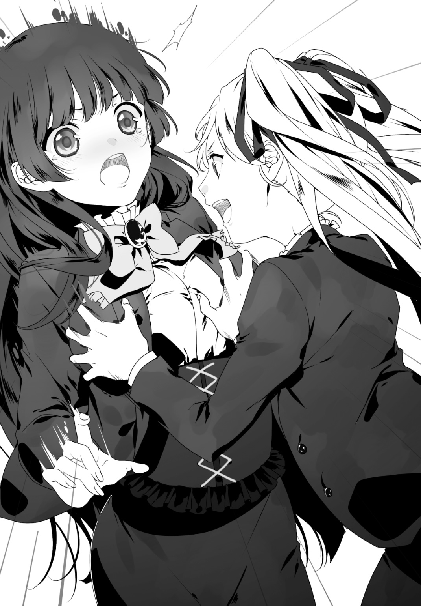
先輩の手を振りほどいた風雅さん。その顔には、勝ち誇ったような笑み。
「な、何だよ」
「いえ......あまりに滑稽で。嫉妬してるんですね？ この胸に！ この豊かな胸に！」
「してない」
「してますよ」
「してないっ！」
「してますって！」
「してないって言ってるだろッ！」
バァン！ と銃声。
先輩の握る銃の先からたなびく硝煙が、二人の溝を強く物語る。風雅さんが回避した為、弾丸は店内の壁へと当たったようだ。
うわ。遂に逆上して発砲したよこの人......。本格的にヤバい人になっちゃったなぁ、先輩。
「――撃ちましたね」
「何だ怖いのか？ 声が震えてるぞ」
「そ、そんな事ありませんっ！ ヤッテヤルデス！」
......ん？ 何だろう。今、風雅さんの言葉に酷い違和感を覚えたんだが。彼女と話しているとよくこの感覚に襲われる。
店内は俺の思考とは無関係だった。「大荒れ」だった。
バァン、バァン！ と鳴り響く銃声で。
バシィン、バシィン！ と舞う紫電で。
先輩は風雅さんへと銃撃を繰り返す。それをいとも簡単に足を振り回して迎撃する風雅さん。彼女は撃ち込まれた弾丸を器用に回避し、隙を見て攻撃を仕掛けているのだ。この正確な立ち回りには感嘆させられるものがある......が、今ここでは止めて欲しかった。
先輩の避けられた弾丸は例の如く周囲のグラス等に直撃し続け、風雅さんの外した蹴りはテーブルや椅子を破壊しているのだから。
店の奥から血相を変えた藍が俺に摑みかかってくる。
「な、何やってんだよガット!? オマエが止めなくて誰が止めるんだよオイ！」
「無理だよ......もう」
駄目だ、こうなったら俺に止める事など出来ない。二人の戦闘力をよく知っているから。片方を止めたらもう片方の攻撃を受けてしまう。
「どうした風雅っ！ その程度か!? 一発も当てられていないぞ私に！」
「それは貴女だって同様じゃないですかっ！ ......あぁそうだ、私に一発でも当てたら両目くり貫いて貴女にさし上げますよ！」
「オマエの目なんているかっ！ その代わりに焚書課から消え失せろ、一秒でも早く！」
俺たちなんか見えないかのように、少女たちの戦闘は続く。
バキッ！ 風雅さんの蹴りが椅子を真っ二つにした。
ドォン！ 先輩の銃弾が天井の照明の一つを砕いた。
眼前で繰り広げられる暴力行為は終焉すら見えない。全てが破壊され尽くされたら終わるのだろうか。一つ一つ、店内の備品は確実にその数を減らしていった。
藍は呆然とこの光景を眺めている。
「あぁ......お店壊れちゃう......」
「後で二人に弁償させるよ。それなら店は元通り、問題ないだろう」
いや、そういう問題じゃないのは分かっているが。
「藍。もうコスプレバーやめて店にプロレスリング造れよ」
「ンなモン造ってどうすんの......」
「新装開店するんだよ。あの人たちのキャットファイトが売りのバーとして。プロレス好きの先輩も喜ぶだろ。それに俺も少しなら融資できるぞ、給与がいいからさ」
「......うん。そうだね。ちょっと考えてみるわ。割と真剣に」
だーっ。藍の両の眼からは、止めどない涙が瀑布の如く流れ続けていた。
「あああああああもう！ ――維刀っ！ どうせ暇だろお前！」
「え？ あ、は、はぁ」
「さっきの現場に戻るぞ！ 証拠回収だ！ 相棒決定戦の先手としてな！」
「い、今からですか!?」
「今からっ！」
二．イン・ザ・ライン・オブ・ヘルファイア
～In the Line of Hellfire～
「――はぁ。なんで風雅が課に来るんだよ。なぁ維刀？」
「そうですね」
手を伸ばし、棚からフィギュアを下ろす。
「私と風雅の捜査官としてのタイプは全く別なのにお前と組もうとは。なぁ維刀？」
「そうですね」
フィギュアをとりあえず脇に置く。
「風雅も以前にも増して私を敵対視しているし。なぁ維刀？」
「そうですねぇ」
ファイリングされたリストに「小型立像・No001883」と書き込む。証拠はほぼ全てがフィギュアだから肌色ばかりで目が痛くなってくる。
「二人だけでやってた頃は良かったなぁ。なぁ維刀？」
「......そうですね」
いいともの観客かよ俺は。あの番組もう終わったぞ。と言うかさっきのバーでの愚痴といい今の台詞といい、どうしてこの人は妙にオッサンぽいんだろうか。
言うまでもなく、ここは数時間前も訪れたレンタル倉庫。
時刻は既に午後十時を廻っている。辛気くさく薄暗い屋内は微かな黴の臭いを漂わせ、涼しいどころか薄ら寒ささえ覚えてしまう。俺と先輩の二人しか居ないせいだろうか。先刻はかなりの捜査官で溢れていたが、今ではその残滓すら感じ取ることは出来ない。
――残業。つまるところ、今の俺たちが勤しんでいるのはソレだった。
中学生と高校生が残業って......労働基準法はどうなってやがる。
「というか私は証拠チェックより抜き打ち捜査がやりたいよ。なぁ維刀？」
「そうですね」
そしてまた先輩の愚痴が再開してるし。
「ハァア......ミスったかな。よく考えたらこれ、風雅の仕事の引き継ぎじゃないか――」
「先輩。証拠品詰めたんでそっちに置きますね」
「ん。ああ、そうだな」
遮って、証拠を詰め終わったダンボールを先輩の真横に持っていく。
すると何を思ったか。先輩はやおら銃を引き抜き、その証拠品へと向けた。
「せ、先輩っ!? 何を!?」
きょとん、と。先輩は小首を傾げる。銃をそちらへと構えたまま。
「何を、って。持ち運びに面倒だから砕いておこうかと......」
「いや......だって本来は『夜だから証拠回収は後回し』って話でしたよね？ それに破壊した方がカサバって面倒になりませんか？」
「そうかな」
「そうですよ！」
「そうでもないんじゃないか？ ダンボールに詰めたら車呼んで運ぶだけなんだし」
「......先輩。その強化プラゴム弾、全部税金なんですよ？ 無駄遣いじゃないですか？」
「まぁ、確かに」
「頼みますよ。最近じゃ『証拠品を破壊する捜査官』なんて先輩だけなんですから」
「えっ？ そ、そうなのか？」
「ええ。他の捜査官はみんな発砲すると苦情が来るってんで控えてます」
「なるほど。つまりは『証拠を破壊する』のが私のアイデンティティという事か？」
「......かも知れませんね」
「よしじゃあやっぱり壊そう！ やらなきゃアイデンティティ・クライシスだろう！」
「止めなさいって！ ――ん？」
ふと視線を向けた先。そちらへと俺の意識は釘づけにされた。
入り口の大きなガラス扉の向こうに一台の車が停まっているのだ。普通ならば気にも掛けない背景に過ぎないのだろう。
だが......俺の記憶では「この倉庫に入った数時間前から停車されていた」はずだ。
自身の記憶を照合するため、誰よりも記憶分野に強い人へと問う。
「......先輩。外の車なんですが。ずーっと停車していますよね？」
「ん？ ああ、あの運転手か？ 風雅がここを制圧した時にも野次馬にいたよな」
「えっ!? そ、そうだったんですか!?」
「私の瞬間記憶を疑うのか？ 間違いなく居たぞ。『まーた野次馬根性を出しているのか』と逆に感心していたんだ。ああいう事件マニアは意外と多いしな」
先輩の意見はもっともだろう。そういった輩は存在する。......だが、こんな夜中に？
「......ちょっと、確認してきます」
半信半疑のまま入り口へ向かう。先輩も「私も行くぞ」と俺に追随してきた。故に俺たちは連れ立って扉へと歩いてゆく。
やがて重いドアを開くと――先輩が自身の手元を見て「あ」と声をあげた。
その手に証拠のフィギュアを握ったまま出てきてしまったのだ。俺も、先輩も。
「......しまった。どうしよう、これ」
「......マズいですよね。証拠って『現場からの持出し時は直ちに梱包し、人目に付かないよう移送する。個別持出し厳禁』って決まりですもんね」
俺たちは顔を見合わせて......苦笑い。いちいち引き返すのも面倒だ、後でちゃんと戻せばいい。二人とも証拠をとりあえず懐に入れ、黒いセダンの方へと足を向けた。
その様子を、運転手の男はジッと睨んでいる。
車はこの倉庫前の道路を挟んで向かいに停められていた。近づくにつれて運転手の顔もハッキリ視認できるようになってくる。運転席に座っているのは年齢不詳の男。険しい表情のままこちらを睨み続けている。
歩行を停止し、俺たちは車の右側に立ちつくす。
「間違いない。野次馬として現場を見ていた男だ。あいつがどうかしたのか？」
俺は先輩の問いに答えず運転席へと歩み寄った。
――コン、コン。
ガラスにささやかなノックを与えると、男は......ドアウィンドウを下げた。
「何だ」
低い、深淵からこだまするような威圧感と重力を多分に含んだ声。
男は爬虫類のような眼をしていた。視線で射貫かれたものの多くが目を逸らす、そんな不愉快さすら含んでいる。背は高いようだが、ヨレヨレでサイズの合っていない服装からは年齢が推察できない。
俺は、胸元の認識票を摑みながら軽く頭を下げた。
「どうも。警視庁の者です。ちょっとよろしいですか」
「警察が何の用だ」
「数時間前にあちらのレンタル倉庫で、違法コンテンツの所持案件が発生しまして。ご存知でしたか？」
「知らないな。用はそれだけか」
グィィイ――......ン。無慈悲にドアウィンドウが上げられてしまった。
俺と先輩は顔を見合わせ、頷いた。こいつは噓をついている。先輩の瞬間記憶能力に従えば、この男は野次馬として現場を訪れているのだから。
「おい」
俺の前に進み出た先輩。面倒そうに男が再度ドアウィンドウを下げる。
「しつこいな。今度は何だ」
「お前の名前を教えろ。心配ない、ただの事情聴取だ」
「......生島、醍醐」
「そうか。では生島。どうしてここに車を停めているんだ？」
「居ちゃ悪いのか」
「いや悪くはないが。......その煙草の吸い殻、さっきは十本しか無かったよな？」
地面に転がった大量の吸い殻を指さす先輩。
「だから何だ」
「増えているぞ、三十本に。あれから更に二十本も吸ったのか。......――お前、ここに張り付いて何をやっている？ 見張っていたのか？ 何が目的なんだ？」
「......チッ」
目に見えて彼、生島醍醐の不機嫌さが強くなっていた。
「怪しいヤツだな。おい維刀」
「分かってます。――すみませんが、署までご同行願えますか？」
短く「フン」と鼻を鳴らし、生島は車から降りた。この場でとるべき行動を分かっているらしい。頭の悪いヤツならこの状況で逃げだそうとする。
やがて生島は俺たちの前に立ち、そして。
逃げた。
乗っていた車を置き去りにして。俺たちをも置き去りにして。
遠ざかっていく影。延々と駆けてゆく生島を、ただ眺めるだけの俺たち二人。
「えーっと。維刀」
「はい」
「............――お、追うぞッ！」
「は、はい！」
漸次覚醒。ようやくすべき事を自覚し、俺たちは駆ける！
「あぁもう......何をやっているんだ維刀!? 黙って取り逃がすなんてっ！」
「せ、先輩だって一緒じゃないですかっ！ 何ボーッとしてんです！」
互いを呪いながら走り続ける俺たち。
くそ、突然遁走するなんて想像できなかった......あんな態度の偉そうな男が！
自身の甘さに苛立ってしまうが、それは隣を走る先輩も同様らしい。その手には鎮圧弾の装塡された銃が握られている。視界の十数メートル先に生島を捉えつつ、俺たちは尚もこの住宅街を疾走する。やがて生島は右に折れ、細い路へと入っていった。
「どこまで逃げる気だ？ ......やはりあの倉庫を見張っていたのだろうか」
「にしても目的が分かりません。あのフィギュアを取り返そうとしていたんでしょうか」
「『裏フィギュア』か」
「だとしても......」
俺はフィギュアの裏ルートなら熟知している。その俺が知らないという事は......あの証拠群は何か「よからぬ事」に関わっているのではないか。
答えを出せぬまま先輩と俺は走る。生島が曲がった小道へと。
「まず私が行く」
頷く俺。先輩は走る速度を上げた。
そして彼女は俺を先行する形で走り、勢いを殺さぬまま。
「――止まれッ！」
細い路のド真ん中へと飛び込んで射撃体勢。生島が逃げた方へと銃を向けた。
だが。たちまち先輩の表情が違和感で満ちてゆく。
「ん？ アイツ......何をやっているんだ？」
とぼけた彼女の台詞。その視線は生島の逃げた先に呆然と向けられていた。
何事かと俺も小道の奥を覗き込んでみる。すると、先輩と同じ思いに駆られた。
生島は、停車されていたトレーラーのコンテナに入ろうとしていたのだ。運転席ではなく。
「......何だアイツ？ まだ逃げるのかと思ったら......あそこに隠れる気なのか？」
「間が抜けてますね、もうバレてるのに。とっとと捕まえましょう」
先輩は「だな」と一言、二人でゆっくりとトレーラーへと接近する。
生島は後方の俺たちには目もくれず、コンテナの閂を開放してその内部へと姿を消した。そこで大人しくしているつもりだろうかと読んでいたが、......やがて内部から「ガシャン」と聞き覚えのある、だが『聞きたくない音』が響いた。
銃器が物に当たる音だ、これは。
「いや......そんなハズ」
まさか。あのコンテナの中は。
俺は既に歩行を停止していた。一方、先輩はなおもトレーラーへの接近を続ける。その先に在る『圧倒的な殺意』を察知する事もなく。
......ガチャ......ガシャ............カチャ......――ガキン。
嫌な効果音は今もあの箱から鳴り続いている。そして一際大きい「ガギャン」という金属音を最後に、コンテナ周囲へ満ちる気持ち悪い静寂。気付けば俺は路を引き返していた。
瞬間、殺気が桁違いに増大した。
「――先輩、離れて！ ヤツは銃を持っています！」
どうなっていただろう。俺のその言葉があと少し遅れていたら。
尋常ならざる俺の叫びに反応した先輩は、かろうじて小道を引き返す。そして俺と同じく住宅の塀に身を隠した。
途端、響く銃声。――否、「轟音」。
その銃声は虚空を炸裂させ、熱量を伴った音声と化して俺たちの耳を貫く。塀に当たった弾丸がコンクリート片を大量に弾いた。
コンテナの方を窺うと。
「......蜂の巣かよ」
いや、蜂の巣の方がまだマシだ。コンテナの扉には大穴が穿たれていたのだから。
生島が内部から『アレ』を使用した結果、刻まれたのは過剰威力と評するのも生ぬるい衝撃の痕跡だった。
生島は今、アレを俺たち人間に対して使用した。一切の躊躇いもなく。
明確となった殺意に緊張感を得ると、「ガジャッ」。微細な砂塵が視界を横切る中、遂に生島がトレーラーから降り立った。
「なっ!? ............な、何だ。あの武器は!?」
俺と同様、塀から覗き込んだ先輩が恐怖に引きつった声をあげる。
――それは、『異形』だった。見た事もない巨大な銃器だった。
七つの銃口が放射状に並び、狙いを付ける必要すら無い事が分かる。銃口の上部および下部には鋼鉄製と思しき盾が所狭しと展開されており、こちらからの攻撃には一切構ってくれそうもない。その重量は膨大なものであろう。
禍々しさ。無機質な表面から放たれる意志はその他に何も無い。
そしてその兵器は、生島の片手に握られていた。
あろう事か、明らかに超々重量の鉄塊を片手で持ち上げているのだ、あの男は。
状況判断の時間すら必要ない。この場で執るべき手段は一つしか無かった。
「......先輩、逃げましょう。まるで敵う装備じゃない」
「に、逃げると言っても......！ この状況でどうやって......ッ、――う、ぅわッ!?」
唐突に前方からの銃撃は再開された。
銃口から飛び出た弾丸は俺たちの鼻先をかすめ、後方に停車されていたセダンを何度も何度も穿ち続けた。
やがてガソリンに引火した車両は、爆発。
熱、轟音、地響き。それら全てを伴って、閑静な住宅街は一挙に地獄へと堕ちた。
生島が進行してくるのとは逆の方向から吹く衝撃。焼け焦げた空気は圧力へと力を変え、俺と先輩に襲い掛かる。ふたりとも咄嗟に手で防ぐと、俺と先輩の間を車のドアが吹き飛んでいった。周囲では油くさい焰が蛇のように蠢く。
......もう言葉はいらない。俺と先輩は顔を見合わせ頷くと踵を返し、先刻のレンタル倉庫の方へと駆け出した。もと来た道を戻っているのだ。
「く、くそっ！ どうする維刀！」
金の頭髪を風に靡かせて先輩が叫ぶ。
「どうするも何も装備が足りません、まずは向こうの出方を窺います！」
「だ、だがこのままでは！ 騒ぎを聞きつけた住民が犠牲になる可能性も......！」
解っている。だが、とにかく今はあの男との距離を取ることが最優先だ。
後方へチラリと目をやるが、生島はまだあの小道から姿を見せていない。安堵と共に「この間に距離を離さなければ」という義務感が焦燥を駆り立てる。
尚も俺たちは前方へと駆けていた。
「しかし......なぜだ？」
突然。走ったまま先輩が眉間に皺を寄せる。
「どうしたんですか」
「分からないんだよ。なぜ私たちをここまで追撃する必要がある!?」
「あの倉庫のフィギュアが押収されると困るんでしょうか」
「違うな......だったら入り口で張り込みなんて真似はせず、最初からあの銃で私たちを殺せば済む話だろう？ 現に今は殺そうとしているんだから！」
「......確かに」
「どちらにせよ、今の最優先事項はこの一帯からの安全な離脱、......――っ、来たぞ！」
先輩の声で視線を遠くへ向ける。
来たるべき時が来た。そんな感じだった。
生島はその手に握った鉄塊をまずは小道から覗かせ、次いでゆっくりと頭を出した。そして俺たちを交互にギョロリと睨むと足をこちらへと向けて歩き出す。
......ターミネーター、プレデター、エイリアン。創作の世界では様々な敵が絶望的な空気を纏い、主人公へと襲い掛かってくる。だが今の生島はそのいずれとも似ていなかった。
あいつとソックリなモノ。それはもっと単純な現実兵器。――『戦車』だ。
俺たちの攻撃の一切を防御し、それでいて自身は好き勝手に重火器を解放し続けるという、より現実感が確かな悪夢。
冗談じゃない。こんなモンスターを野放しに出来るか。このままでは一般人に被害が及んでしまう。かといって俺たちに出来るのは奴が諦めてくれるのを待つ事のみ......。
苛立ちながら更に前へと進む。後ろを再度振り返ると、こちらに銃を向ける生島。
「先輩ッ！ 横へ逃げて！」
叫んだ瞬間、銃弾の豪雨が俺と先輩の間を殴りつけた。
角度を付けられていた弾幕はナナメへと直進。前方の路肩に停められていた車へとその全てが殺到し、
二台目の車が爆発。
「――ッ！」
前方から襲い掛かる爆風。思わず目を閉じる。
だが怯んでいる場合ではない。俺も先輩も炎上する車体を横に見て、更に進む。
停止、イコール、死。
後方からは「ズドドドドドドドド」と、絶える事のない銃声がなおも響いている。放たれた弾丸は塀、電柱、道路、ガードレール、住宅の壁を抉り取り、周囲を地獄絵図へと変えてゆく。それを止める術は俺たちには無い。
抵抗する手段。そんなもの、何一つ無いのだから。
にしても......何故ここまでする必要がある？ 俺たちはただアイツを職質して......、
「い、維刀！」
走りながら叫ぶ先輩の声に横を向いた。
「何です先輩っ！」
「あ、あれ......人じゃないのか!?」
「え？」
生島のいるであろう、後方を振り向く。
だが最初に視界に捉えたのはあの男ではなかった。
一般人。この道路に運悪く入り込んでしまったサラリーマンといった風体。
放たれる弾丸の射線からは外れていたが......このままでは、間違いなく彼は。
「マズい......！」
どうする。このまま俺たちだけ逃げ切れば事態は収拾したかも知れない。だが彼は別、巻き添えを喰らうのは明白だ。
いや、考えるまでもない。俺は身体の向きを変えた。
「......先輩。あの倉庫まで逃げていてください」
「お、お前は!?」
「奴を引き付けます。先輩の銃も貸してもらえますか」
戸惑いながらも先輩は俺にファーレンハイト９９９９を手渡した。即座、俺はマガジンを抜いて残弾数を確認する。――十二発。これでゴム弾は俺の分を含めて二十四発。
上等だ。完全撃退は無理だろうが、出来るところまでやってみる。
俺は目だけで先輩に頷き、来た道へと駆け出した。
「――生島アァっ！」
叫び、発砲。
俺の撃った弾丸は生島、いやあのバケモノ銃へと直進。が盾に弾かれて「カン」とささやかな音と共にその役目を終えた。
次いで突然銃撃が停止。生島が盾の上部から顔を覗かせる。
......やはりな。あの武器は「標的を確認しながらは銃撃できない」のだ。
正確には「前に向けたらそこが標的」と云うべきか。アレだけの広範囲攻撃を可能とする銃だ、いちいち標的など確認する必要がない。「前に向けて撃つ」それだけで銃器としての役目を果たせるのだから。盾で前が見えなくとも構わない、そういう設計の兵器なのだ、アレは。
この隙は見逃さない。俺は既に速度を上げて駆けていた。
暫時銃撃の停止した道を走りながら、例の通行人の地点まで至る。
「逃げろ」
「ひ、ヒぃッ!?」
ドン、と男を脇道に突き飛ばす。
彼は戸惑いながらも自身を取り戻したか、すぐに道の向こうへと姿を消した。
それを確認次第、瞬時に道の反対側へと跳ぶ。
途端――「ズガガガガガガガガガガガガガガガ！」と鼓膜を破かんばかりの銃声が響き、俺の居た地点のコンクリートをごっそりと抉った。既に道の反対側に至っているので被弾は無い。
勢いそのまま、俺は地を蹴った。そして塀の上へと飛び乗る。
すぐに弾幕が俺を追いかけてくるが、それには一切構わず、俺は走る。
塀の上を。
「......チッ」
上から生島の顔が歪むのが見えた。狙いが定められないのだ。
あの銃は狙う必要のない兵器。だが今回の俺のように「即座に位置を変える標的」には、その重さ故に急激な照準変更が不可能なのだ。
塀の上に至った俺に銃弾を当てられなかったのはそれが原因。いくら生島が化け物じみた腕力・筋力で「勢い」は出せても「精密さ」だけは無理なのだ。
生島と俺の距離は確実に縮まっていた。......あと九メートル。
足元の塀が崩れた。構わず走る。あと七メートル。
あと五メートル。
あと四メートル。
盾の背後、生島の顔が見えた。あと三メートル。
ここだ。
塀から飛び降りた。そして銃を抜いて、
「――ッ！」
発砲。銃撃。狙撃。速射。乱射。乱れ撃ち。
「銃を撃つ」、その行為すべてをこの一瞬にて実行する。
俺の撃ち放った弾丸はすべて生島へと到達。この男は空中から銃撃する俺の弾丸を、巨大銃から手を放して防いでいた。
こうなればもうこっちのモノだ。
弾丸を撃ち尽くした自分の銃を仕舞い、新たに先輩の銃を取り出して至近距離から発砲。
ドォン、ドォン、ドォン――。繰り返し繰り返し、生島を銃弾の雨に晒す。
ボクサーのように防御しているので脚、肩、腹部、膝を撃ち、生島が崩れ落ちるのを狙う。
やがて弾丸を撃ちつくした俺は、即座に生島を拘束しようと前に踏み出した。
だが。脚が止まった。
「......噓だろ」
生島は無傷だった。
服の一部が破れているので素肌が覗いているが、それを見なくてもこの銃撃が無駄だった理由はすぐに判明した。
「筋力」だ。生島の衣服、その下にある超常の質量を誇る筋肉が膨張し、まるで鎧のようにその身を固めていた。だから俺の弾丸は通じていなかったのだ。
ゾッとする。怖気が走る。攻撃のみならず防御においても、この男は化け物だった。
もう俺の残弾はゼロ。が、さも弾が残っているといった態度を装いつつ、俺は生島の頭部へと銃口を向けた。
「先ほどはどうも。焚書課です」
眼前の男は俺の自己紹介に応える事もない。こちらの残弾を察しているかも判別不能。
停止する両者。生島はゆらりと身体を揺すりながらこちらを睨んでいる。巨大銃は手が届かない距離に置かれているので大丈夫だろう。
「住宅街暴れまわって無法者気取りか、生島醍醐。......何者だ、お前」
「......フン」
ようやく応答したと思ったら鼻で笑っている。
「くく。これが警察の新組織か」
「ご理解いただけたようで何より。しかし、まさか鎮圧弾が通用しないとはな......。これ、当たり所によっては骨折する恐れだってあるんだが」
「そんなオモチャで俺と渡り合えると本気で思っていたワケでもないだろう」
確かに、と答える俺。そして足元に無様に転がっている巨大銃をちらと見る。
「......化け物じみた銃だよ、まったく。こんなモノまで持ち出して何のつもりだ？ 俺たちから逃げるには大袈裟すぎる」
「『保険』だ。どうしても殺しきれん相手が出た場合のな。この銃は――『ミルドレッド』は、何者をも殺しきるからな」
ミルドレッド。それがこの銃の名前か。
「つまり......俺たちはお前にとって『殺しきれない相手』と判断された、って事か」
「そういう事になるな」
「光栄の極みだ」
「安心しろ、その光栄だか栄光だかはすぐに終わる。今すぐ殺しきってやるからな」
何たってここまで殺意を剝き出しにしてくるんだろう。
まぁいい。いちいち考えるのが面倒になった俺は、手錠を取り出して片方を生島に向けた。拘束した後で聞き出せば済む話だ。
一歩近づいた俺を、生島は更に鼻で笑う。
「無理だ。お前では俺を捕まえられん」
「状況が理解出来ているか？ その銃......ミルドレッドはお前の手を離れている。地面の取っ手に近づいて持ち上げてみろよ。俺のゴム弾がお前のドタマを撃ち抜くぞ。いくら筋力で全身を鍛え上げているお前でも、脳への直撃は耐えきれないだろう？」
ニヤリ、と気味の悪い笑みの生島。
今、俺の銃には弾丸が装塡されていない。つまりこの状況はハッタリだけで構成されたもの。この男はそれに気づいているのだろうか。
だが。「気づいていなくとも関係なかった」事がすぐに分かった。
「......くく。持ち上げる？ そんな必要はない！」
生島が伸ばしたのは腕ではなく「脚」だったのだから。
止める間も無かった。生島は片足で巨大銃の下部を踏みつける。途端、銃身だと思っていた部分から小銃が二丁、バネ仕掛けのように「ポン」と飛び出した。
「な、っ」
おそらく。生島が踏んだのは「銃器を跳ね飛ばすスイッチ」だ。
重力に逆らいながら、俺と生島の中間地点を跳びあがる黒塗りの殺傷兵器。――ＭＰ５。
......そういう事か。瞬時に理解へと至った。ミルドレッドの本質に。
この巨大銃は、複数の銃をマガジンとして使用する銃――ッ！
「ッ！」
咄嗟に俺は手を伸ばした。
この状況で取れる唯一の抵抗、それは「片方のＭＰ５を奪い取る事」だから。
俺はどうにか銃把を握ってキャッチ、前方の生島へと向ける。その銃口の先にはもうひとつのＭＰ５が顎を開いていた。
結果として――、
「――――――――――――、！」
火花が散る。銃口と銃口の間隙で生まれた衝撃が空間を焦がす。
銃弾と銃弾、そのふたつが中空で激突する。
生島がフルオートで撃ち放った弾丸へ、こちらもフルオートで応じてゆく。弾かれた弾丸はそれぞれ俺と生島の背後に飛び散り続けていた。
そして意識は銃口から外さない。外した瞬間に死神は鎌を振り下ろす。
ギィン！ ギィン！ ギィン！ ギィン！ ギィン！
五月蠅い演奏会の中、銃撃はなおも続く。
やがて――「カシャン」と。あの喧しさとは無縁そうな音を奏で、この「銃弾激突ショー」は終焉を迎えた。
――静寂。どうにか全弾、弾き切ることが出来た。
俺と生島の弾数に差があった場合はどちらかが被弾していただろう。が、思えば「複数の銃器を同時発射する兵器」なのだから、残弾数が同じであるのは必然だ。
前方へ視線を向ける。生島は銃弾を弾かれた事に驚愕、......していなかった。むしろ目を見開いて驚愕したのは俺の方だった。この事態を見越していたかのように、ミルドレッドに置いていた片足を下へと潜り込ませ、次いで振り上げ――。
生島は、足でその鉄塊を持ち上げた。
（......マズイ）
ミスだ。見誤っていた。この男の膂力を。
腕力にモノを言わせて鉄塊を振り回す、そんなイメージが俺の洞察力を鈍らせていたのだろうか。あれ程の重量を紙の如く扱うのだ、支える為の下半身が弱いハズなど無い。
生島はバケモノ銃を空中でキャッチ。ブレのない、見事な受けだった。
後は引き金を引くだけ。それだけで、前方に立っている俺は死へと至る。
刹那、俺は取るべき手段を模索する。――二丁のファーレンハイト９９９９の残弾はゼロ。手元のＭＰ５も残弾ゼロ。武器はもう何もない。体術を繰り出すには間合いが遠い。いずれにせよ攻撃はすべて盾で阻まれるだろう。そもそも直面しているのは「いかに眼前の獣から逃れるか」という現実。
――駄目だ。皆無。もう抵抗手段は無い。
取るべき手は一つ......『逃走』！
「っ！」
『獣』が火を吹いた。
嫌になるほど至近距離で銃声が爆ぜる。
それを俺は頭上で聞いていた。咄嗟に巨大銃の真下に滑り込んだのだ。そして即座、生島の背後で身を起こし、先輩の居るであろう方向へと駆ける。出来る事ならば逆方向に逃げたかったが......無理だ、完全に的になる。
走る俺。背後で生島がミルドレッドを向けるのが分かった。
左の塀を蹴り、反対側の塀へと跳ぶ。
すぐに左の塀が削り取られた。だが後ろは見ない。
生島の射撃は広範囲、故にジグザグと評するのも生ぬるい軌道であの倉庫へと疾駆する。
と。前方に、困惑した表情の先輩を視界に捉えた。
「い、維刀!?」
......クソ、駄目だ。彼女だけは巻き込むワケにはいかない！
「隠れてッ！」
「何!?」
「その倉庫に隠れていてください先輩！」
「ち......ちょっと！ 維刀っ！ 何だいきなり、待て！ 生島は!?」
叫びつつ、俺はレンタル倉庫の入り口・その外側まで至っていた。そして即座に先輩の肩と背中を摑み、倉庫の内部へと彼女を押し込もうとする。
後ろは――、！
「......？」
先輩を押す手が止まった。
俺と彼女、二人の捜査官は倉庫の入り口手前で生島の方を眺めている。
妙だ。銃撃が止んでいる。
あれ程の殺意を放ち、先刻まで間違いなく俺を殺すつもりだった生島。なのに今では銃撃が容易に届く距離であるにも拘らず、ミルドレッドでの掃射を停止していた。
奴の表情からその意図は読み取れない。尚も不機嫌そうなしかめっ面を俺たちに披露しているだけだ。
弾切れ、なのか？
「......あ。パトカー」
場にそぐわぬ間の抜けた先輩の声。確かに遠くからあの特徴的なサイレンが聞こえてきた。
生島もそのサイレンを耳にしたか「チッ」と舌打ち一つ、束ねられた銃口を俺たちではなく、傍らの自分が乗っていた車両へと向け、――破壊。
「ぅおわァっ!?」
「く、ッ！」
ドォン、と車は爆発。
爆炎のスクリーンが路全体に広がり、視界が遮られる。俺も先輩も、腕を掲げてその爆風から眼を庇った。
一層ガソリンくさくなった周囲。奴の狙いはこのガソリンなのだろうか？
そう警戒し、視界を覆いから解放すると。爆炎の幕は霧散し。
――生島は、既に消えていた。
辺りからは殺気も不審な気配も無い。残されたのは長距離に渡って削り取られた塀、爆発した駐車車両、そしてガソリンの鬱陶しい臭気。
どうやら俺たちは生島から逃げ切った、らしい。
「......何だったんだ。アイツは」
隣。安心したのか、先輩が呆れ声を放つ。
「な、何もいきなり殺しに掛かってこなくても良いだろ......？ 何をした私たちが？ 職務質問しただけだぞ？ 維刀、お前何かアイツの恨みを買った覚えは？」
「無いですよ。あるワケないです。今日が初対面なんですから」
「だよなぁ。......怪我は？」
「大丈夫です」
良かった、と先輩は首を縦に振った。そして倉庫入り口のドアに背を預け、そのままズルズルと地面に座り込む。緊張の糸が切れたか。
ちょうどいい。俺も先輩と同じ動作を経由し、隣の地面に足を伸ばして座った。
「お前の強さは知っているが......生島には敵わなかったか」
「......何かその台詞、前も聞きましたよね。『東のサン・キュロット』アジト倉庫の時かな。俺、先輩の居るところでは失敗してばかりですね」
「気にしてないよ、お前が無事でよかったさ。お前も気にするな」
先輩の気遣いは嬉しいが......気にしてしまう。
生島から逃げ帰ってきた事じゃない。あの武器、ミルドレッドについてだ。
人ひとりを殺すには明らかに過剰火力。銃器として異形と忌むべきあの武器を、生島は近くに隠し持っていた。奴はほぼ間違いなく俺を殺そうとしていた。そしてミルドレッドによる攻撃は完全に俺の動きを封殺していた。俺を殺すのに最も適した火器、そんな印象だった。
――にしても。それに輪を掛けて気になるのは「生島の目的」だ。
奴は倉庫を見張っていた。正確には倉庫にいる俺たちを見張っていたのだろう。となると......先輩が生島の張り込みに気付いていなければ、俺たちはただ黙って殺されていた可能性も否定できないのだ。
しかし、ならば何故すぐに殺そうとしなかった？ 目的は俺たちではなかったのか？
「......いや、止そう」
今は素直に先輩の言葉に従おう。こんな鉄火場を終えた直後で、マトモな思考が組み立てられるワケがない。
今や苦笑いすら浮かべている先輩にならい、俺も自嘲気味な笑いを作った。
安堵しよう。嚙み締めよう。「銃撃の豪雨が終息した事」を――。
「――なるほど。で、取り逃したという訳だな」
重厚な声が必要以上に重苦しく、俺たちにのしかかる。
俺の左に立っている先輩は眉間に皺を作り、前方の都知事・西園寺蔵人から視線を逸らしていた。俺も彼女同様の所作で立ちつくす他ない。
「奏手くん。まだ本調子じゃないのかね？ 戻ってきたばかりだから仕方ないが」
「そ、そんな事は」
「維刀くんも。彼女の足を引っ張るのは感心しないなぁ」
「......はい」
言い訳が一切出来ない。本来ならば俺がどうにかすべき事態だった。
この都知事室で俺たち二人は叱責を受けていた――。住宅街での発砲行為、器物破損を夜中に許したからに他ならない。死傷者どころか怪我人すら出なかったのが奇跡といえる。あと少し早ければ、帰宅途中の一般人が巻き添えを受けていた。
「相手がヘンテコな銃を持っていたらしいけれどなぁ。どうにも出来なかったのかい？」
「銃弾はすべて阻まれました。近づくことすら叶いませんでした。もはや我々焚書課の手には負えない相手かも知れません......非常に不本意ですが」
「しかしなぁ――。ん？」
言葉を不自然に切る西園寺都知事。この部屋の扉が突然開かれたのだ。
向こうに立っていたのは......風雅さん。
途端、先輩が目に見えて嫌な顔をした。
「――おじ様。その後始末は明日、私と臥人さんがやります」
「お、オジサマ!?」
「あれ、言ってませんでしたか？ 私と西園寺都知事は遠縁なんですよ」
風雅さんは室内へと進み入ってきた。先輩の表情は更に不機嫌な物へと変わっている。
「なるほどな......風雅、お前がいきなり中級予備巡査からスタートできたのはそれが理由か」
「人聞きの悪い事を言わないでくれますかぁ？ 私はちゃんと正規の試験を踏んで焚書課に編入されたんですから。ねぇおじ様？」
「うむ。風雅くんの実力は君たち二人も知るところだろう？ こと戦闘においては」
返答できない。駄目だ、俺も先輩も今日は完全に圧されている。先日は跳び蹴りを叩き込んだ俺さえ自分の不甲斐なさに言葉も無かった。ここで生き生きとしているのは、風雅さんただ一人だ。
「......おじ様。明日、私と臥人さんでその生島という男を追います」
「君がか」
「はい。聞くところによるとその生島という男、どうにも気に入らないのです。銃を撃ち放ち、罪もない一般市民を巻き込むことすら躊躇しない......。そのような怪物を放っておいて良いわけがありません。私の正義に反します」
「おおっ、さすがは風雅くんだ！ 君の正義感はやはり警察組織向きだな！」
「恐れ入ります」
「ではそちらの捜査は風雅くんに任せよう。奏手くん、彼女のサポートを頼んだよ」
「さ、サポート......ですか？」
「君はその生島という男の調査をしたまえ。明日の風雅くんの調査開始までにな」
「......はい」
先輩の表情が目に見えて曇っていった。これは事実上の戦力外通告だ。
「まぁどちらにせよ、その男は風雅くん、頼んだよ。――話は以上だ」
釈然としない先輩、苛立ちが募る俺、そしてニコニコ胡散臭い笑みの風雅さん。
三者三様の表情を顔に浮かべつつ、俺たちは敬礼を終えて都知事室を後にした。
都知事室を出て、エレベーターまでの道のりを歩く。俺と先輩は並んで。風雅さんはその後を追随するかたちで。
道の中ごろまで来た時、口に手を当てていた先輩が呟いた。
「......維刀。おかしいと思わなかったか」
「おかしい？ 何がですか？」
「生島だよ。あいつ、私たちの背後に証拠現場があると発砲を躊躇っていただろ」
「あれ。そういえば......確かにそうですね」
「どうでもいいですよー、そんな事。あそこは他の捜査官に回収を任せましたし」
風雅さんが俺たちの疑問を一蹴した。どうでもいいけど蹴りキャラだけに「一蹴した」って表現が合うよな。
「それよりイリナさん。貴女、本当にあのバーからレンタル倉庫に行ったんですね？」
「え？ あ、ああ」
「分かってます？ コンビ決定戦、今日の失敗で貴女の番は終了ですよ？」
「あ」
「忘れてたんですか。フン......まぁいいです。明日は私が臥人さんと組むのは決定事項ですし。......――臥人さん」
コクリ、と。コケティッシュに小首を傾げて風雅さんは俺を見つめた。
「明日は私を迎えに来てください」
「は？」「は？」
俺と先輩、二人の声がハモった。
「お、オイ風雅......なぜお前を迎えにいく事になるんだ！」
「だって私って女の子ですよ？ 男子が女子を迎えに来るほうが自然だと思いませんか？」
「女子だから男子だから、など関係ないだろう」
「あぁ、こういう考えだから臥人さんの気を引けないんですね。納得です」
「な、......こ、コイツっ！」
「ンあああぁもうイチイチ逆上しないでくださいよー面倒くさい！ ......で、どうですか臥人さん？ 私、明日は学校がちょうどお休みですので、お昼あたりから」
「明日の昼に迎えですか？ 別にいいですけど......」
「ん？ 乗り気ではなさそうですね？ 『迎えを強いられているんだ』って感じですか？」
「いえ......大丈夫です。迎えにいきます」
「そうですか！ では明日のお昼、お待ちしてますねぇ！」
正直言うと迎えに来られるほうが困る。家にはオタグッズ満載の隠し部屋があるんだから。
そんな俺の心中を察する事もない風雅さんは、バレエの所作でクルクルとご機嫌に踊り回りながらこの階から姿を消した。
先輩はそれを睨んで、幸せ全てが逃げていきそうなほど大きな溜息をつく。
「......――はぁ。風雅に居場所を奪われ、挙句徹夜の調査か。何か悲しくなってきた......」
「ヘコまないで下さいよ。俺も手伝いますから」
「えっ!? い、いやいいよ！ お前は明日風雅との捜査があるんだし......！」
「先輩一人に負担を掛ける訳にはいきませんよ。それに言ったじゃないですか、『今度からは何かあったら俺を頼ってください』って」
「......ありがとう。じゃあここは好意に甘えさせてもらうよ、おにいちゃん」
「気にしないでください、イリナさん」
明るい表情をようやく作る先輩。――が、それはすぐに無表情なモノへと変貌した。
「やっぱり......何かムカつくな？」
「はい。止めましょう」
完全にシラけた俺たち二人は表情を失ったまま廊下を進んでゆく。
――明日は学校へ行こう。これから二人で調査するとはいえ情報はあって困る事など無い。となれば「あの人」の出番だ、後で彼女に約束を取り付けておくとするか。
鉄火場、説教、徹夜、学校、そして風雅さん、......か。どこかで仮眠が摂れればいいけど。
度を超えてハードになりそうな明日へと思いを馳せ、俺は先輩と共に廊下を歩く。
なおも無表情のまま。
スッ、と。
脚を伸ばしてタイルの上へと至る。
次いで蛇口を捻ると、頭上から微細な無数の水滴が降下を開始した。
「んっ」
降り掛かるお湯の温度に思わず呻いてしまう。
ここは私、――迅早下風雅の自宅、そのバスルーム。
今の私は全裸だった。掛けられた姿見には何一つ身に着けていない私が映し出されている。徐々に湯気が立ち込める室内。その鏡に立つ己の全身を眺めてみる。
肌はシャワーの飛沫を受け上気しており、白かったその色を桃色に染めてゆく。細く長い脚部。それを辿り視線を上げてゆくと、なだらかな曲線を描いて腰、腹部、そして大きく主張を繰り返す二つの乳房へと至る。そのどれも、あの中学生には無いものだ。
「......バカバカしい」
彼女は中学生、私は高校生。成長に差異があって当然ではないか。
愚にも付かない思考を脱ぎ去り、記念すべき今日の業務を思い返す。
すべてが私の為に動き始めた。そう判断しても良いと思う。
焚書課に配属されて一ヶ月――。鬼の居ぬ間に着々と地盤を固め続けてきた努力が、ようやく報われる時が訪れるのだ。
......あぁもう。思い出すだけで疲労がドッと押し寄せてくる。
コネで配属された事を隠し通す努力に始まり、ペルソナとしての営業スマイル。摘発は失敗を一切許さない厳しさ。手を抜けばイリナさんとの差を更に広げられてしまうのだから。
あ、臥人さんのような阿呆を操るのは簡単だったか。彼はタダの駒だし。
正直な話「彼がどちらのパートナーになるか」について執着などは無い。どうでも良かった。重要なのは「イリナさんからパートナーを奪い去る」その一点のみなのだから。こうして外堀から徐々に埋め尽くしてゆけば、彼女の居場所は自然と消滅してゆく。
そう、パートナーを奪うだけでは完全なる勝利とは言い難い。彼女の地位を奪い、彼女にとって代わる事で私の目的は完遂されるのだ。
「......ふぅ」
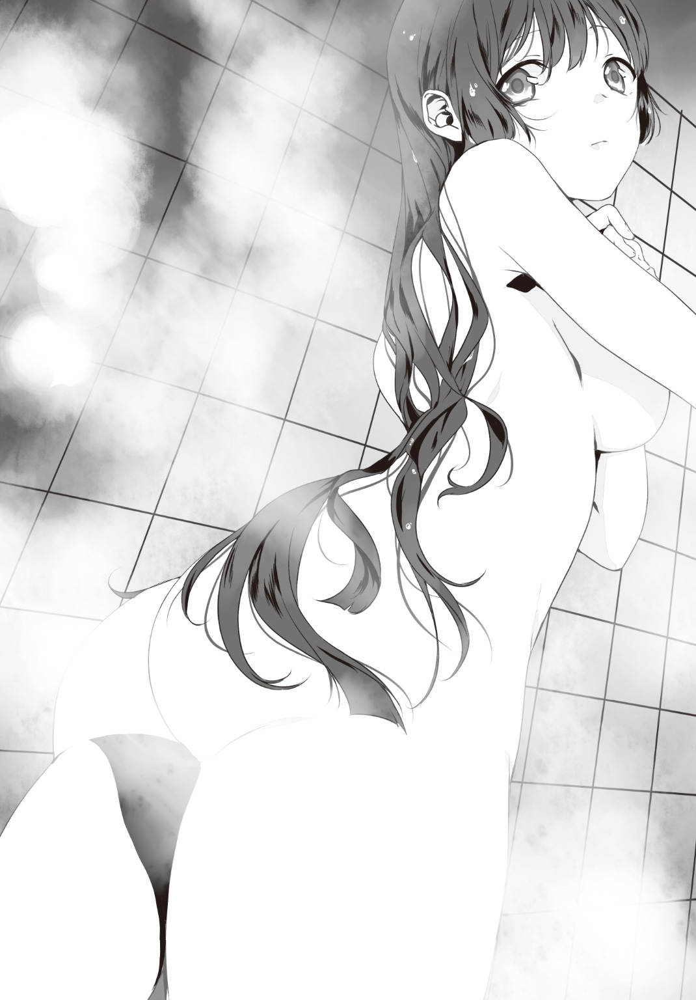
喘ぎひとつ。熱い飛沫が火照った身体を叩く中、今まで重ねてきた「敗北」に思いを馳せる。
小学校――バレエと書道。中学校――格闘術。そして高校――焚書課。
......止そう。思い返す意味が無い。
蛇口を捻る。キュッと鋭い音とともにシャワーが停止した。だが私はバスルームから出る事もなく、一糸まとわぬ裸のままこの肌を滑ってゆく水滴を眺めていた。熱を帯びた肩口から湯気が立ち上っている。
劣等感、敗北感。それら負の感情はすべてが終わった後、この湯気のように霧散してゆくのだろうか。この私を苛ませ続けた惨敗の歴史すら共に抱えて。
どちらにせよ、明日は正念場。如何なる手段を用いても「迅早下風雅と組むほうが得だ」と臥人さんに思わせなくてはならない。その為には......。
私の視線は足元へと向かっている。剝き出しの脚部を流れてゆく、熱を失った水滴。
「これだ。......これで行きましょう」
簡単だ。『色仕掛け』。
あの手の男を手玉に取るなど簡単だ。これまでもそうして生きてきた。生殺しのまま傀儡としてその心身を掌握してしまおう。
正直に言えば怖気が走る状況だった。あのような男の視線に己の身体を晒すなど。だが私にあってイリナさんに無いもの、それを思えば取るべき手段は自ずと決まってくる。
とすればどうしようか。明日彼が訪れる瞬間、こうしてシャワーに入っていようか？
そして混乱している彼に迫れば......。
「くくくく」
気付けば変な笑いが口を突いて出ていた。
バスルームでもう明日のシャワーを案じる、この滑稽さに。
「この策でイリナさんから奪い取れます。臥人さんを。......くフフフッ！」
否、この場合は「寝取り」とでも言うべきだろうか。だが彼と同衾するワケでもないし、「奪い取る」という表現はおそらく的確なのだろう。
現在、私だけが知るであろう明日の状況を思い描きながら。
私は頭髪に絡み付く水分を弾き跳ばした。
三．ブラック・ハンター・ブラック・ハート
～Black Hunter Black Heart～
「ぅ、うわあぁあっ!? ど、どうしたのイリナちゃんっ!?」
午前十時。焚書課の資料室に亜良多さんの叫びが反響する。ぐわん、ぐわんと脳を搔き回されるような感覚に思わず顔をしかめてしまった。
「......おはよう、亜良多」
「......おはよう、亜良多さん」
「が、ガッちゃんまで!? 二人とも凄くひどい顔してるよ!? 何があったの!?」
「ずっと生島について調べていた。気付いたら朝だった」
「生島？」
俺は説明した。昨夜の騒動をかいつまんで。
「そ、そうだったんだ......。大変だったんだね......」
「太陽が黄色く見える。足がガクガクする。呂律が回らない」
「と、とにかく二人とも今は少しでも休んで！ 調査は後で私も協力するから！」
そう言って立ち去る亜良多さんを、俺たちはただボーッと眺める。
「......さすがに堪えるな」
「騒動から一睡もしていませんからね」
正確にはあのバーでのバトルから、更に遡って先輩の帰還パーティから。
目元を擦る先輩の視線は虚ろだ。目にクマすら見て取れた。鮮やかなハズの金髪にもいつもの輝きが感じられず、箒の先のように四方八方へと散っている。俺はもっと酷いのだろうが。
と。先輩が「あー」と呻くのが聞こえた。その視線は自身の懐へと向いている。
「あの倉庫から持ってきた証拠......。まだ返却してなかった......」
懐に入れっぱなしだったあのフィギュアを取り出す先輩。そういえば俺も懐に入れたままだ。
......マズいなぁ。後から個別に返却すると面倒なんだよ。怒られるし。
「コレに関しては後から対処しましょう。もういいでしょ。今日は」
「だな......今日はもう帰るのが面倒だ。課のソファーで少し寝ていこうと思う」
「そうした方がいいと思います。俺はこれから学校に向かいますけど」
「これから？ もう十時だぞ？ 今から行ったところで何か出来るわけでもないだろ」
「ちょっと用がありまして。それを済ませて風雅さんのお宅に伺おうと思ってます」
先輩はギョロリと俺へ目を向けた。
「な、何ですか先輩」
「......死んでも御免だ、お前とのコンビを解消させられるなんて」
「まぁ、確かに。俺も組み慣れた先輩とのコンビが一番楽だとは思います」
「お、お前もそうなのか？ ――ありがとう。ならば正直に伝えよう、私の想いを」
妙に緊張感を伴って先輩は言葉を紡いだ。
「......実は、心配だったんだ。お前がアイツに取られるんじゃないか、って」
「そうですか。割と嬉しいです」
「でも一晩考えて『別にいーや』と結論に達した」
「そうですか。割と悲しいです。俺が風雅さんと組んでも構わないなんて」
「違う違う。風雅はな、ああ見えてツメが甘いんだ。昔から私を陥れようと巧妙な策を巡らせてくるんだが、大体アイツの企みは失敗に終わる。それでいて『私は策士ですから♪』などと自負している辺りが始末に負えない」
「いろいろと......ヘッポコな人なんですね」
「だからコンビの件は心配しない事にした。――心配なのは、別の方だ」
「生島ですか」
俺を見据えたまま先輩は頷いた。
「......あんなバケモノじみた兵器を使う相手、遭遇した事がない。危険度でいえばあの些々神以上だろう。加えて向こうは人を殺すことを何とも思っていない、正真正銘のモンスター。......大丈夫なのか、維刀」
「対応策はいくつか考えています。それより問題は『ヤツの目的』ですよ」
「......だな。現状、あの男の目的が分からないんだよな」
口元を覆ったままそう口にする先輩。
――結局のところ。夜を徹した調査の結果は、芳しいとは言えなかった。
「生島醍醐がさまざまな暴力団事件で死人を出していまだに捕まっていない」という件はよく分かった。どうやら各組織を渡り歩いているらしい。ヤクザ、おそらくヤツはそれなのだろう。よって組織犯罪対策部からの情報も欲しかったのだが......連中のナワバリ意識から抵抗を受け、何も情報は入手できなかった。こんな非常時に心底腹が立つ。
結果として、一番肝心の事項が判明していない。
ヤツの目的。なぜ、俺たちを攻撃してきたのかが。
それが判明しない限り、行動予測も先回りも不可能だ。現状の俺たちは将棋でいうところの第一手すら指せていないのだ。
「とにかくあの男は危険だ。どこで遭遇するか分からないんだ、細心の注意を払って維刀も調査にあたってくれ。睡眠もとれずに注意も何も無いが」
「申し訳ありません。気を遣わせてしまって」
「気にするな。......――ほら」
ポン、と。俺の手元に先輩謹製のファイルが投げて寄こされた。
「気を付けろよ」
「はい」
このちんまい人に心配ばかりさせる訳にはいかない。俺は決意を新たにする。
「――あ。そうだ維刀。参考までに訊いておきたい事があるんだが。ちょっといいか？」
「何です先輩？」
「い、いや参考までになんだが......お前は『金色』と『黒』のどっちが好きだ？」
「はい？ 突然何ですかその質問。随分と漠然とした問いですけど？」
「だ、だから参考までだ！ 早く答えてくれ！」
「......黒、ですかね。金色って成金っぽくて好きじゃないです。男は黒に染まれですよ」
「ふーん。では『大きい方』と『小さい方』は？」
「大は小を兼ねるって云いますし、大きい方です。......あの、これ何のアンケートですか？」
「......もういいぞ。参考になった。ありがとう。行け。じゃあな。ばいばい」
「え、あの、先輩？」
「五月蠅い！ もうお前など知るか、さっさと行けこの馬鹿っ！」
そう叫ぶと、やがて彼女はプイと背を向けて課のソファーへと直行。そのまま身を横たえ、すぐに寝息を立て始めた。
......自由だな、この人。いや疲れているだけなんだろうか。
欠伸をひとつして俺は署を後にした。
――昼休み。ここは、学校二階の図書室。
優雅に腰掛けたまま自分の周囲を眺め廻してみる。
いくつも並べられた椅子には誰も座っていなかった。貸し出しカウンターにすら人の気配は皆無。図書委員は奥に引っ込んでいるのだろう。
睡魔に耐えつつ俺がここに来た理由。それは『待ち人』の為だ。
だからこうして、署から直接来た訳なのだが。
「......遅いな」
困った。予定の時刻はとっくに過ぎているのに、相手がまだ現れない。既に十分オーバーだ。
いや、別に待たされるのはいいよ。ただ......流石にヒマを持て余してきたんだが。
相手が来るまで寝ていようかな、などと欠伸を漏らしたその時――。
「いやァー！ さすがは大山田だぜ！ 図書室なら誰にもバレずに漫画読めるもんな！」
「叫ぶなよ。ココがバレるだろうに」
覚えのある男子二名の声。
間違いない、クラスメイトの野瀬と大山田だ。どうにも俺の耳は彼らの声をよく捉えてしまう癖があるらしい。オタである二人の会話に聞き入っていると何だか嬉しくなってくるのだ。
だが......今日この場では耳朶に触れてほしくなかった。
「な、ッ!? い、維刀っ!?」
「うわマジか......」
二人はこの図書室の中ごろまで至ってからようやく俺に気付いたらしい。揃ってこちらにギョッとした目線を寄越す。
「......ふたりとも、図書室に用なのか？」
眠気と疲労もあり俺はそう口に出すのが精一杯だった。
「あ？ な、何だよ！ オマエに関係ねぇだろうが！ あぁ!?」
「おい野瀬。やめておけって」
「うるせえよ大山田！ ――おい維刀、何でオマエが図書室にいるんだよ!? オイ！」
「だからやめろって、こいつに関わったらまた処分を受けるぞ！」
「......チッ」
野瀬は顔を歪めて、大山田は頭を抱えて。俺の存在を突っ撥ねている。
ここに入ってきた際のセリフから察するに、どうやら二人は人が居ないこの図書室で漫画を読もうとしていたのだろう。しかし俺によって妨害された。二人が怨嗟の眼差しを向けてくるのも仕方がない。仕方がない。悲しいが俺が嫌われるのは仕方がないんだ。
野瀬・大山田。彼らはこの部屋から出て行く事もなく、仕方なしに遠くの席へ腰を下ろした。
「......」
「......フン」
続く冷戦状態。俺も彼ら二人も、互いに視線を合わせぬまま沈黙を続ける。
あぁ......こいつらとオタ話が出来たらなぁ。こんな空気なんて一瞬で吹き飛ばせるのに。
「ったく。維刀がいたんじゃ何も出来ねぇよ！」
「今日は運が悪かったと諦めよう」
「マジで焚書課ってロクな真似しやがらねーよな。薬物とかの方がよっぽどヤベェだろ。昨日もウチの近くで麻薬所持してて逮捕されたヤツがいたぞ。......何が『文化の劇物』だ。マジモンの劇物をちゃんと取り締まれって話だろうが！」
「......まぁ、麻薬は厚生労働省の管轄だから焚書課は関係ないけどな」
「あーあ。焚書課死なねーかなー」
まったくだな。もう焚書課なんて無くなればいいと思うよ。維刀臥人とかいう背信者に気付けず、採用しちゃう組織なんだから。
二人はやがて、何も口にしなくなった。
俺も変わらず、何も喋らない。
「......」
「............」
静寂は続く。無為に。
誰一人として言葉を発しない。
その沈黙は、戸口に響く清廉な声によって打ち破られた。
「――あら？ 野瀬さん、それに大山田さんでは？」
待ちに待った人の声色。だが、その声は俺に向けられたものではなかった。
「ぅおアッ！ な、ななな......なっ、棗サン!?」
「ウっ......こ、このオーラは!?」
驚愕に目を見開く野瀬・大山田。彼らへと優しげな笑顔を向けて、彼女は俺には気付かぬまま二人へと歩み寄ってゆく。
棗椰子さん。俺は彼女の姿を横あいから眺めてみる。
その歩行動作は洗練されており、まるでランウェイを渡るモデルのよう。高校生離れした抜群のスタイルがその印象に拍車を掛けているのだろうか。特に胸部が画一的な制服の下で自己主張を激しくしているのがよく分かる。頭髪も流れるように輝いて、風雅さんのストンと落ちる黒髪とはまた違った魅力を放っていた。全校男子憧れの的となってしまうのも無理はない。
そしてその細い手には、書類の袋。良かった、俺との約束を忘れていた訳ではないらしい。
「珍しいですわねお二人とも。図書館に何かご用なのですか」
「ご用だったんスけどねー、その計画も頓挫っスよ。なぁ大山田？」
「......あ、ああ」
「あら、どうなさいました大山田さん？ 体調が優れないのですか？」
「あーコイツあれっスよ棗サン、緊張してるんスよ。棗さんのファンだから！」
「おッおい野瀬っ！」
「あらそうなのですか。ふふっ、ありがとう」
「は、はいっ！」
随分と仲良く会話しているな。「棗さんはオタク側」というのは周知の事実なので、彼らとも気さくに会話できるのだろうか。
と、突然。野瀬が離れたこの場に座している俺を指さしてきた。
「つーか棗さぁん！ アレ見てくださいよ、アレ！」
「アレ、ですか？」
「維刀ッスよ！ アイツが図書室占領しててムカつくんスけどぉー！ 何か言ってやってくださいよぉ！」
「あ、あぁ。そういう事......ね」
事ここに至り、ようやく俺の存在に気付いたらしい。棗さんの顔色が先刻までの余裕に満ちたものから申し訳無さそうなものへと変貌する。
彼女は二人と俺の顔を交互に見て、嘆息。ゆっくりとこちらへと近づいてきた。
「い、維刀く、......じゃなくて。維刀臥人」
「はい。何ですか」
「図書館なんてあなたに似合わないわ。何をしているんですの」
何してる、って。あなたを待ってたんですが......。
「ここでコンテンツ回収でも狙っていて？ 胡散臭い視線ですわね」
棗さんもその胡散臭いお嬢さま言葉、やめたらいいのに。
「あら何です？ 図星かしら、その沈黙返しは」
いや別にいいんですよ俺？ 今までのツッコミを全部口に出しても。
「それとも誰かと待ち合わせ？ まぁあなたを待たせても謝る必要などありませんわね」
そこは謝ってくださいよ。演技なのは分かるけど。つーかそれ言いたかっただけ？
「まぁ生きづらい世の中でしょうけど精々頑張って。ではごきげんよう」
クルリ。踵を返して椰子さんは男子二名の方向へと戻ってゆく。その先では野瀬が「すっげぇ棗サン！」と歓喜の声援で迎え入れていた。大山田に至っては感涙する始末。
「うおおおおぉッ！ さっすが棗サンだぜ、あの維刀に物怖じせず論破しちまった！」
「希望だ。俺たちの希望なんだ、棗さんは......！」
「そ、そうね！ ありがとう」
何と言うか。ひどく出来の悪いコントですね。
「あ、あの、お二人とも。私、今からレポートをまとめようと思っていまして......。出来れば静かな図書室で、と思っていたのですが」
「えっマジすか？ じゃあ先に言ってくださいよ！ ――オラ大山田、邪魔だから出るぞ」
「ん。だな」
頷いて棗さんに別れを告げる男子二人。彼らは入り口側であるこちらへと歩を進め、俺の横をスルーして図書室を後にした。野瀬は俺に中指を立てて、大山田は鼻をフンと鳴らして。
鈍重なサウンドを伴い、図書室の扉は閉じられた。
すると早速、遠くから棗さんの鋭い眼光に射貫かれる。先刻までの呆けた雰囲気など一切見受けられない。
「御免なさい。遅れたわ。お待たせしただけの価値はある情報だから許して」
棗さんは足早に俺へと向かってくる。
「......今の二人。『野×大』ってカンジよね」
「カップリングの話ですか？ そうかなぁ？ 『×』の前後が逆だと思いますけど」
「逆じゃないわ。どう考えても野瀬くんのヘタレ攻めじゃない」
「えー？ 俺あんまＢＬって詳しくないですが、アイツが攻めってのはどうも......」
「ＢＬを知らないのね。あなたは間違ってるわ、維刀くん」
「いやでも一般論としてはやはり大山田が前だと思いますよ？」
「維刀くん」
「はい？」
「もう喋らないで。詳しくもないあなたがＢＬを語ると、無性に腹が立ってくるから」
「......は、はい？」
ええぇ。何でこの人、こんなにキレてんの？ 怖いんですけど。
ぴしゃりと言論封殺した棗さんは、ポイポイと手元の資料を長机の上に展開していった。
「怒ってます？」
「怒ってないわ。......その写真の男が生島醍醐でしょう？」
机上の写真へと目を落とす。確かに、昨夜遭遇した男そのままだった。
「結論から言うわ。生島は何かに関与しているみたいよ」
そう告げる棗さん。――昨晩、課での徹夜作業前。俺は彼女へ「生島醍醐という男について調べてくれ」と頼んでおいたのだ。卓上に置かれた資料を見る限り、俺たち焚書課よりも取得した情報は多いらしい。徹夜の努力が無駄にはなったが、やはり彼女に頼んで正解だった。
......さて。オタク規制に隠れて何を企んでいるんだ、生島は。
「この生島って男、日本はもとより海外での経歴が多いみたいね」
「海外？ そういえば俺たちが昨日調べたのは日本の事件限定だったな」
「少し前に日本に戻ったらしいわ。恐らく......彼は今回、何者かに雇われているわ。言うなれば『組織を渡り歩くフリーの殺し屋』みたいなモノらしいから」
「......？ フリーの殺し屋？」
あまりに時代錯誤な単語だ。首を捻る俺に構わず、棗さんは次なる資料を机に広げる。書かれていたのは生島の経歴だった。どれも海外の案件に集中しており、昨晩俺と先輩が至ることが出来なかった時期を埋めてくれる。
――六年前。フロリダのマフィア邸宅を襲撃。ボス含め死者四名。
五年前。ニューヨークのチャイナタウンで地元チンピラを殺害。死者六名。
四年前。ロス市街、薬物売買のこじれから売人を殺害。死者二名。
判明しているだけで計十二名殺害している。
そして驚くことに、生島はどの事件でも逮捕に至っていない。
「......どういう事なんですか、これ。海外の警察にコネが？」
「違うみたい。彼、いろいろな組織に鉄砲玉として雇われているらしいんだけど、必ず雇い主の下に戻ってくるらしいの。――鉄砲玉って、普通は標的を殺したら『警察に出頭する』か『他の連中に殺されるか』のふたつしか無いわ。でも生島はそのどちらでもない。あまりの強さ、それ以上の用心深さで絶対捕まらないらしいの。ＦＢＩが血眼になってその姿を探していたそうよ。その異様な経歴から、付けられた二つ名が――、」
言葉を切った棗さん。彼女は俺を指差して、その人差し指をすぐ自分へと向けた。
「『戻り弾』。鉄砲玉として野に放たれようと、逮捕もされずに必ず帰ってくる。だからそんな二つ名が付けられたらしいわ。――あら、『踊り廻る弾丸』のあなたとは正反対ね？」
「マジモンの殺し屋という事ですか。......っていうかやっぱり何か怒ってません？」
「怒ってないわ。やがて生島はＦＢＩの追跡から逃げるように三年前、日本に戻ってきたらしいわ。――あら、一国を解放して帰国したあなたとは正反対ね？」
「......すいません、繰り返しますけど絶対怒ってますよね？」
「だから怒ってないわよ。......あ、これは余談なんだけれど。生島って全然喋らないそうよ。無駄口ばかり叩いてるあなたとは正反対ね？」
「だから怒ってんじゃねーッスかアンタ！」
「怒ってないわよっ！」
怒ってるよな。もう口に出して指摘するのはやめにしよう。
「――そして日本国内。近年は暴対法が整備されてからというもの、組織抗争は減少の一途を辿っている。でも未だ稀に発生する組員への殺人案件、その多くに生島が三年前から関わっているという話よ。......その割には、殺害方法が大胆すぎるけれどね」
「そのようですね......」
海外案件の一番右、「死因」の列に視線を移す。その記述は余りに常軌を逸していた。
全員が首の骨を折られている。常識はずれの膂力を保持しているという証左だろう。殺すなら銃で一発撃てば済む話なのに。
些々神とは別のベクトルでイカレている。この生島という男は。
「でも、今回はどうやら勝手が違うみたいなのよね」
「......？ というと？」
「生島が今回、新型兵器を手にしたという情報が上がっているのよ」
そう言うと椰子さんは書類の一番下から、写真を一枚引き出した。その途端、疲れが一挙にどっと押し寄せた。昨夜の鉄火場が想起されてしまったからだ。
「『ミルドレッド』。昨日、あなたとご同僚が向けられた銃よ」
棗さんの出した写真を嫌々ながらも眺めてみる。
あの時は落ち着いて観察する暇など無かったが、こうして見るとその異様さが如実に伝わってきた。棗さんは俺と写真を交互に眺めつつ説明を始める。
「......自動小銃を格納するコンテナを七つ組み合わせ、前方超広範囲への継続攻撃を可能とした武器ね。トリガーひとつで七つ全ての銃口が火を噴くらしいわ」
「噴いてましたね。そして攻撃一辺倒かと思えばそうでもない。上部と下部に展開できる盾が付けられていて、攻防一体だった」
「恐ろしいのは『仕様』よ。格納コンテナは現状におけるほぼ全ての小銃の規格に対応しているらしいわ。そして弾が空になると小銃を跳ね飛ばして、再び別の小銃を入れることでリロードが完了する」
やはりアレは「銃をマガジンとして使う銃」。その恐ろしさは昨夜嫌という程味わった。
「資料によると本来は『戦場で敵の武器をそのまま使える銃』をコンセプトとして設計されたみたいね。でも重量が異常になってしまい、扱える人間がいなかったそうよ」
「......俺と先輩が調査しても、この銃に関する情報は一切摑めませんでした」
「でしょうね。この銃の出所は厳重に隠匿されていたから。売り主によって」
「誰なんです？」
「些々神・クラウス」
「......またかよ」
海外での縁、いや因縁をここまで持ち出してくるか。本当に俺を殺したくて仕方ないんだな。生島にあんな銃まで渡すだなんて。
――まぁ、とりあえず。情報はある程度摑めた。
先輩との調査では生島のここ数年の動きを、棗さんからはそれ以前の動きを。
問題はこの後で風雅さんと向かう先だ。先輩と調査した「生島が以前に所属・または敵対していた暴力団」を中心に回ろうと考えてはいたが......ヤクザが絡んでくると事態は極めて面倒になる。加えて生島が雇われだと判明した今、あのレンタル倉庫で見つかった『斗蛾山組』の名刺も気に掛かる所だ。とにかく早急に生島の目的を判明させなければ。
そこまで思考していると、棗さんが俺を不思議そうな目で見ていた。
「何ですか？」
「......随分と回りくどい手段を執るのね。私なんかに調べさせず組織犯罪対策部に情報を貰えばいいじゃない。あなたは警察組織の人間なんだから」
「そういうワケにも行かないんですよ。割とナワバリ意識がアレなモンで」
事実だった。俺たちは焚書課である前に『文化保全部』という部署に属している。つまり『組織犯罪対策部』とは完全に別セクションとなっているため、基本的に仲が悪いのだ。加えて、俺たち若年捜査官が「彼らの刑事としてのプライド」を傷つけているという側面もあった。「ガキが警察の真似事か」と怒鳴られる事も多い。現に昨夜の調査で協力要請に行ったら居留守を使われて情報をくれなかったし。
......まぁ、つまり。自分で調べるか、こうして彼女から情報を得る他ないのだ。
「それに棗さんの情報の方が早いですしね。......調査ありがとうございました。この資料、貰っていってもいいですか？」
「好きに使って。あなたの為に調べたものだし。......――っ、と。ちょうど終わりね」
タイミングがいい。昼休み終了を告げるチャイムが鳴ったのだ。
これで情報の取得は終了。俺たちは顔を見合わせ「じゃあまた」と互いに挨拶した。棗さんはすぐに入り口へと足を向け、ここから立ち去るという行動へと移行した。
彼女の後ろ姿を真っ直ぐに捉える。俺はさも今思い出したかのように声を掛けた。
「......あ、そうだ。椰子さん」
「何？」
「あなたは何を企んでいるんですか？」
ピタリ。棗さんの足が止まった。
「調べたんですよ。前回のビッグサイトの件って『ロシアの情報官が最後に核を回収した』という話でしたよね？ ......そんな痕跡、どこにも見当たりませんでしたよ。どういう事ですか、これは」
棗さんは背中を向けたまま何も語らない。
「そもそも情報官は何ていう名前なんです？ 事件後にビッグサイトは封鎖されましたけど、あの現場でロシア人らしき人間の出入りは確認されていないんですよ」
尚も無言の彼女。どのような表情なのかを確認する事は叶わない。
「本当に居るんですか、その人。居るのなら会わせてくれませんか。その情報官さんに」
「......ええ良いわよ。今度ね」
ようやくそれだけ口にすると、棗さんは図書室から出て行った。一人広い室内に残された俺は天井を仰いで大きく息を吐く。
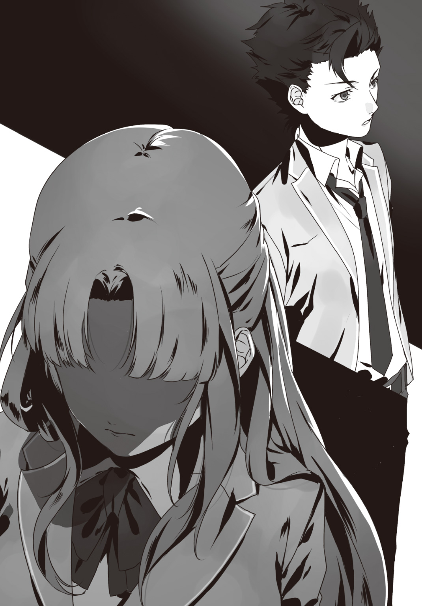
これでいい――。俺たちの関係はこうあるべきだろう。これは『牽制』だ。
現に彼女は何かを隠しているのだ。そして、何かを企んでいる。あのビッグサイト事件の終息時に彼女が何かを仕組んだのであれば、また新たな一手を指してくる可能性も無視出来ない。だとすれば......彼女とは敵対することになる。
滅入ってくる見通しだった。出来れば避けたい事態だった。
「まぁ......どちらにせよ。今の俺がやることは一つだけどな」
風雅さんを迎えに行く。その為にまず焚書課の制服を取りにいかなくてはならない。
俺は図書室を出た。
そして小走りで教室へと向かう。......いや「向かおうとした」。足が止まったのだ。
原因は前方で荷物を抱えて歩いている教師だった。これは面倒な人が来たもんだ。俺は彼を避けようとしたが、向こうは不幸にもこちらに気付いて手を上げた。
「おお維刀じゃないか！ もう休み時間は終わりだぞ！」
満面の笑み。俺を敵だとは思っていない、この学校では珍しい顔だ。
彼、――奥村由太は倫理の教師。他の教師と同様に「その歳で国のために働くとは見事」という評価を俺に下している一人だ。だから彼の印象は良いものなのだが......俺としては正直鬱陶しかった。何よりこの人は生活指導も兼ねているため、生徒からオタグッズをよく没収しているのだ。俺が言えた事ではないが、この人はどうにもその行為を楽しんでいる節さえ見受けられるのが気に食わない。
「奥村先生。確か次のウチのクラスは倫理でしたよね？ ちょっと用事で早退します、俺」
「ハハハッ、構わんぞ！ いつもの仕事だろ？ 維刀だけは特別だしなぁ！」
「すみません。......――ん、ソレって」
「おぉ、コレか？」
俺が目を止めたのは彼が抱えていた段ボール箱。何故なら、その空いている上部からは多数のフィギュアが見えたからだ。
「次の授業で使うヤツさ。お前の勤めている警察から譲渡されたんだよ！」
そういう事か。納得がいった。
近年では焚書課が没収した証拠品はさまざまな用途に利用される。破壊してリサイクル、海外へ中古品としてリリースしての税収、そして今回のような学校への無料譲渡。譲渡される目的は唯一つ、教材として。倫理の授業の冒頭などで毎回「こういった物を集めてはならない」というのを現物を使って説明したり、あるいは破壊して生徒たちの心を折りに来るのだ。
......良かった。次の授業はサボれて。この人は破壊する人だから嫌なんだ。
「失礼します」
「おおっ！ 仕事がんばれよーっ！」
大声を伴う激励も苛立ちを助長するだけ。俺は小走りで彼を追い抜かし、教室へと向かった。
日差しが強い。
屋外では「天よりの恵み」と呼ぶにはいささか過剰な熱量が降り注いでいた。
その灼熱の幕の下を歩く俺。
紅の美少女・棗椰子。彼女と学校で別れ、俺は次なる美少女を迎えにその足を住宅地へと伸ばしていた。――言うまでもない、迅早下風雅さんだ。
俺たちは若年捜査官。本来であれば勤務中はタクシーを使い放題なのだが、「その距離くらい地下鉄で行け」という先輩命令を受け、こうして徒歩で向かっている最中だった。本当に妙なところで所帯じみてるよなアノ人。まぁ途中までの交通機関で少し眠れたから良しとしよう。
前方に目的のマンションが見えた。
視界にその全容を捉え、俺は口をあんぐりと開けてしまう。
「......で、でっか！」
見たまま、感じたままの事を羅列しよう。――二十階建てをゆうに超える高さ。窓を下から数える気すら喪失する。純白の壁面は日光に照らされて爛々と輝き、俺というパンピーを拒絶しているように感じてしまった。エントランス・ホールに至っては「お引き取りください」と大口を開けて嘲笑っている。いや、ただの被害妄想だと分かってはいるのだが。だが何度見ても凄い高さだ。本人から「周囲で一番高いタワーマンション」と聞いていたのですぐ目に付いたが......全高のみならず家賃すら近隣でトップクラスなのではないだろうか。
ここでお上りさんの如く立っているワケにもいかない。場違いを自覚しつつ、俺はエントランス・ホールに進入。華美極まる調度品を横目にそのままエレベーターの方へと直進する。
エレベーターに乗り込んで「17」を押すと、......すぐに目的の階へと着いた。
目指すは１７０１号室。エレベーターからすぐ隣の角部屋だ。横壁の不自然なスペースが妙に目に付いたが、今は構わずに風雅さんの部屋の前に立った。
インターホンを押すと、すぐに風雅さんの清涼な声が返ってきた。
「はーい♪ 迅早下でーす」
「あ、どもッス。維刀です。予定通りお迎えに上がりましたが」
「上がってくださーい」
ガチャ。すぐインターホンは切られた。
「......『上がって』って」
アホみたいに口を開いて立ちつくす俺。ノブに手をかけると......あ、すんなり廻った。そのまま引くとドアがいとも簡単にこちら側へと開く。鍵すら掛けていないのか。余りの不用心さに首を捻りつつ「お邪魔します」と一言。風雅さんのお宅へと進入する。
「上がりますよー」
靴を脱いでも家主は一向に出てくる気配がない。お言葉通り部屋に上がる。
室内は、妙に殺風景な印象を受けた。一面純白なのは壁面のみならず、床も調度品も全て白系統のモノで統一されている。部屋が幾つあるのか知らないが本棚やベッドは見当たらない。女子の部屋に入った経験なんて藍くらいしか覚えが無いが、どうにも飾り気がなく無機質だ。
――やはり、怪しい。
そう訝しんでいると。
「おはようございまーす。臥人さん」
姿は見えず。聞こえるのは声だけ。――そして飛沫が跳ね返る音だけが、繰り返し繰り返し淫靡に響いていた。
「ふ、風雅さん......!? お、お風呂ですか!?」
「はい！ フフッ！ 別に入って来てもいいんですよぉ？」
「......へぇ。いいんですか」
「えっ」
「今『入って来てもいい』って言いましたよね。いいんですか。入りますよ、マジで」
「......御免なさい。冗談です」
「冗談？ 冗談っていうのは双方の認識が『笑い』だと統一されなければタダの不愉快な言葉になるだけですよ。分かってます？ 俺、風雅さんの今の発言が酷く不快でしたが」
「あ、あの私、そんなつもりじゃ......！」
「そんなつもりが無くとも俺はそう感じました。人間関係って相手がいてこそですよ？」
「あ、あ」
「それとも風雅さんはいつも冗談の後に言い訳するんですか。『今のは冗談です』って」
「......すん」
返事が聞こえてこなくなった。鼻をすする音、そして飛沫が跳ねる音だけがささやかに響いていた。どうやらバスルームの向こうで泣いているらしい。
今の俺みたいな奴って凄いムカつくよね。「何の前触れもなくキレる人間」って。風雅さんは今のやりとりから「臥人さんがこんなに面倒くさい人だとは」とでも評価しているだろう。
それでいい。こういう時は畳み掛けるように行くのがコツだ。
「さて、と。......『本懐』を遂げますか」
呟いて、俺はバスルーム側に背を向けた。目的遂行の為だ。
風呂を覗くワケじゃない。襲いかかるワケでもない。下着を盗むワケでも勿論ない。
俺は、以前から彼女に対して抱いている『疑惑』があった。今ならその疑惑を確信に変えるチャンスだ。
失礼と自覚しつつ、俺は部屋をグルリと見廻す。
先刻も生活感の無さが妙に気に掛かったが、よく見れば見る程にその実感を強くしてしまう。右の壁面には時計以外に何も掛けられていない。棚もポスターも。
だからこそ、怪しい。エレベーター脇の「不自然なスペース」がここに当たるからだ。
壁に歩み寄る。そして手をかざして軽く押してみると......「キィ」と。摩擦音を伴いながら、壁面は返し扉として中心を軸に回転した。俺の自宅と同様に。
――やっぱりだ。開いた空間に進み入る。
そこに広がっていたのは既視感のある光景。正面に据えられたアニメポスターの出迎えに始まり、その横には各種棚がズラリと並んでいた。収納されているのは漫画、アニメＤＶＤ、ＣＤ、ライトノベル。ゲームだけは見当たらない。恐らく彼女の趣味ではないのだろう。
確信する。やはり風雅さんは隠れオタクだ。
複雑な感情のまま立ちつくしていると背後で扉の動く音がした。
「が、臥人さん......ッ！ あ、あ、あ、あ、あ、あ、あ、あ、あ、貴方！」
肩越しに振り返る。風雅さんがそこに立っていた。
バスルームから出たばかりのようだ。細い肩をガクガクと震わせている。身に巻き付けたバスタオルの下で豊かな胸部が強く主張をしており、細く長い四肢はシャワーの熱気を受けて赤く火照っていた。アップにした濡れ髪から放たれる香気が、鼻腔を必要以上に刺激してくる。
くくくっ、と。意図せず俺の口からは笑いが零れていた。
「見事な城塞だ。そう思いますよ。よくここまで蒐集したものです」
「あ、あぁぁ......」
「おかしいと思ったんですよ。風雅さんが口にした言葉ってオタネタばかりでしたから」
一歩、彼女へと近づく。
「......こ、来ないでっ！」
「少し自身の発言を顧みてくださいよ、風雅さん。『頭脳がマヌケ』『ヤッテヤルデス』『強いられているんだ』『目をくり貫いて差し出す』――これ全部、アニメか漫画の台詞ですよ」
「あぁ。あああぁ」
「一回だけなら偶然の一致で片付ける事も出来ました。でも、何度も同じ事が繰り返されたら......流石に疑います。『風雅さんはオタクなんじゃないか』とね」
「ち、違います。違うんです」
「何が違うんです」
「違いますっ！ わ、わ、わ、私はオタクなんかじゃ......！」
「違いませんよ、あなたはオタクだ。そしてそれを隠しつつも同類を検挙し続けていたんだ。どんな気分ですか。オタクである事を隠し、オタク挙げを続けるのは！」
「や、やめて......！」
「やめません。答えてください、俺の問いに！」
「イヤぁあッ！」
「逃げないでくださいよっ！」
「......あ」
俺は思わず彼女の腕を摑んだ。
――結果。スルリと衣擦れの音を伴って、彼女の身体を包んでいたバスタオルがマットの上に落ちてしまった。その細くも扇情的な肢体が露わとなる。豊かな乳房も、俺の眼前に――。
「......」「......」
両者硬直。両者絶句。両者停止。両者放心。
風雅さんは身体を隠すことすら忘れて。俺は視線を逸らすことすら忘れて。――そして。
「――キャアアアアアアアアアアアアアアアアアアアアアアアアアアアアアアアアッ！」
バキッ！
ドガッ！
グシャッ！
ストレート、肘、ハイキック。それらが流れるように俺へと叩き込まれた。
「ぅ、ぐっ！ は、鼻血がッ!?」
「あああああ、あ、あ、貴方っ！ 何をするんですかッ！ ドサクサに紛れて！」
「え？ い、いや......何か昂っちゃって......」
「キモチ悪い......！ 警察呼びますよ!? そっち向いてて下さいっ！」
あなたも俺も警察です、と返せる状況ではなさそうだった。風雅さんに言われる通り俺は彼女の反対へと身体を向けた。
「......あ、あの、風雅さん。いつ出発するんでしょうか？」
「まだ出られるワケ無いじゃないですか！ 髪も乾いていないのに......お化粧だって」
そもそも人が来る前にシャワー浴びてる自体がどうなんだろう。
スタスタ、と彼女がバスルームの方向へと戻る音がした。俺はもうそっちを見るのを諦めて、彼女の蒐集したオタグッズを眺める事にした。この件については後ほど追及する必要がある。
上手く事が進めば......彼女が「俺たちの味方」になるのかも知れないのだから。
「......――まったくもう！ さっきの臥人さん、すんごいキモチ悪かったです！」
「すみません」
「勝手に女子の部屋を弄りまわしただけに止まらず、裸に剝いてくるなんて......！」
「重ねてすみません」
「分かってます!? これ普通なら一発で強制猥褻ですよ!? 私が生活安全課とかじゃなくて本当に良かったですねっ！」
「重ね重ねすみません......」
お髪が乾き、お化粧もお済みになったという事で、俺と風雅さんはようやく外へと出ていた。見慣れたいつもの制服姿で腰に手を当て、俺を先行する風雅さん。あんな騒動があった直後だ、動作の一つ一つが妙に艶っぽく見えてしまうのは仕方ないだろう。
......と言うか。さっきからこの人、俺が何か話しかけると悉く封殺するように罵倒を重ねてくるんだが。触れて欲しくない話題でもあるのだろうか。
あるな。つーかそれが何かは明らかだろ、もう。
「これに懲りたらあの部屋で見たモノは全部忘れる事です！ さっき見たものも全部！」
「いや......それは無理ですよね？」
「う」
「オタクなのに焚書課に入っているんですね。風雅さんは」
絶句する風雅さん。これが触れて欲しくなった話題だ。
彼女の言う「さっき見たモノ」とは裸体......なワケあるか。そっちはむしろ死んでも忘れてやるもんか。言うまでもなくあの「オタグッズの砦」の件。
......ガバガバじゃねーか、焚書課。背信者が俺含めて二人もいるぞオイ。しかも風雅さんって都知事の遠縁だろうに。この事実を公表したらあのジジイの支持率は......下がらないんだろうな。どうせもみ消すんだろうな。
「策を巡らせ、話をうまく逸らしたと思っていたのに......無駄だったようですね」
どこに策を巡らせていたのだろう。どこがうまく話を逸らしたのだろう。
「......勝機は完全になくなった。殺せ......」
「こ、この期に及んでムキンクス？ 割と余裕ですね？」
「余裕なんかではありません。追及の必要もありません。突き出しなさい、私を」
「突き出す？ どこに？」
「焚書課です。オタクであるとバレてしまった以上、私はもう課に居られません。これ以上の屈辱は耐えられませんから」
「出来ませんよ」
「!? ど、どういう事です、臥人さん!?」
「出来ませんよ、そんな事。俺の心の中にだけ留めておきます」
「そ、そんな......あ、貴方、私なんかに情けを掛けるというの......？」
違います、自分もオタだからです。そんな台詞を口に出すワケにもいかず黙していると、風雅さんは俺にすがるような面持ちから、すぐに怯えた表情へと変貌した。
「......脅迫する気ですか」
「は？」
「わ、わわ、わ、私を脅迫するんでしょう!? 要求は何ですか！ お金？ 焚書課の地位？ そ、それとも身体!? 身体なんですか！ はあぁあぁあああああぁッ！」
「何勘違いしてんのこの人!?」
そんな目的ねぇよ！ 自分が同じ境遇だから告発出来ねーだけだっつーの！
風雅さんはこちらをチラチラと窺っているが、その瞳はまるで犯罪者を見るような意志を迸らせていた。酷く心外だ。いや実際犯罪者なんだけどさ俺。
「......俺、風雅さんの事がよく分からなくなってきました。そもそも何故オタクなのに焚書課へ入ったんですか？」
「え。イリナさんに勝つため？」
「ま、マジでそれだけ!? 先輩に勝つためだけ!?」
「当然じゃないですか。私の人生は彼女への敗北によって色を失ったのです。そして今も失い続けています。色彩を取り返す手段は唯一つ、彼女を打ち倒す他ないんですよ。......まぁ、理由はそれだけじゃないんですけど」
「だったら......オタク側として先輩と対立すればいいんじゃ？」
「意味がないですよ、それじゃ。イリナさんと同じ内容で彼女を超えなければ」
そう語る風雅さんの視線に迷いは見つけられなかった。
「それに、オタクでありながら彼らを摘発する――。矛盾しているのは自覚しています。ですがこの仕事をするようになって一ヶ月、私の中にも思う所が出来まして」
「思う所？」
「私にしか出来ない事。そう思うんですよ」
発言の意図が読めぬ俺。彼女は言葉を続けてゆく。
「どちらの立場にも居て、どちらとも敵対している――。そんな不安定な私だからこそ、この現代日本を少しでも良く出来るんじゃないか。そう思うんです。オタク側も規制側も、どちらも納得が行く世に変えていけるのではないか......と」
「風雅さん......それは理想論でしかありませんよ」
「そうでしょうか？」
「ええ。最近の社会を眺めてみてください。そこに映し出される光景には『オタの言い分にも一理ある』なんて言える空気は、とてもじゃないけどありませんよ」
「仰るとおりかもしれません。でも、それを今まで試した人がいるんですか？」
「......？ 何を」
「オタクで焚書課捜査官が両者の言い分の懸け橋となる――。そんな無茶を試した人、今までいませんよね？」
ふふっ、と風雅さんは悪戯っぽい笑みを俺に向ける。
俺は呆れる一方で、自分が責め立てられているような錯覚を受けた。彼女の理屈はやはり理想論でしかないと思う。それこそあの由樹矢正を超えるほどに。
だが......そんなにもひたむきな彼女を、俺が笑えるのか？
彼女は「どちらの立場にも居る人間は自分だけ」と思っている。それがそもそも俺との認識の違いだ。他にも似た人間が一人いる事を俺は知っている。俺だ。彼女の理屈に従えば、俺こそが両者を理解できる存在のハズだった。だが俺は風雅さんが語る「懸け橋となる存在」へと成り得たのに、その道を選ばなかったのだ。――いや、考えた事すら皆無だった。
突然の自己嫌悪に顔を歪める俺に気付く事もなく、風雅さんは己を語り続ける。
「まぁ、自分でも矛盾した思考だと理解しています。所詮言い訳なのかもしれません。ですが、ルールはルールとして機能しなければ社会秩序は成り立ちませんし」
「となると......風雅さんは自分と同じオタを蹂躙している事になりますけど。それに関して思う所は無いんですか」
「無いですね。ルールはルールです。その決まり事を破っているのは彼らですから」
「決まり事を破ってる人がそれ言います？」
「ふふっ、それもそうですね。じゃあ言い直します。『仕事ですから』。安心してください。証拠品をかすめ取ったりはしていませんから」
そう言って、......風雅さんは「あ、そういえば」と話題を転換した。
「先ほど思ったんですけど、臥人さんってオタク文化に詳しいんですね？」
「え？」
「いや、アニメや漫画の台詞なんて、普通の焚書課員なら気付かないと思うんですが。今まで課員に話して疑われた事は一度もないんですよ？」
「......覚えたんですよ。連中から情報を吐かせやすくするために」
「そうなんですか。では是非今度観てみてください。――もう今更なんで言っちゃいますけど、私、アニメ大好きなんです！」
「へ、へぇー。どういった類のを観るんですか？」
「男の子向けのアニメが多いですね。ＢＬとかはよく分からないんですが、戦ってるキャラクターを見ていると血が滾ってきちゃって。ほら、私って勝負事が大好きじゃないですかっ！ だからバトル系が特に好きですかねぇ！ ......あ、『ＮＡＲＵＴＯ』って知ってます？」
知ってます。
「知らないです」
「知らないんですか。あのアニメの作画は凄まじいモノがありますよ。戦闘では動くわ動くわ、目が追い付かない程ですから！ 隠れて集めたＤＶＤが全巻ありますので今度貸してあげます。ぜひ観てください！」
持ってるけどね。作画が毎回劇場顔負けクオリティで凄まじいよね。
「原作は漫画ですからそちらも是非。......あぁそう、ジャンプは読んだことあります？」
あります。
「ないです」
「ないんですか!? ああぁダメ。それはダメですよ臥人さん。そんなんじゃ『オタク文化に詳しい捜査官』なんて遠い未来です！ ジャンプは男女問わぬオタク必読のバイブル、いや全人類遍く読むべき空気や水のような存在なんですからっ！」
随分と楽しそうに話すんだな......この人。
と突然「フフッ」と。風雅さんは笑みを漏らした。
「......秘密が出来ましたね！ 私と臥人さん、二人だけの秘密が♪」
「え？ え、ええ」
思わず心臓が高鳴り、戸惑った。原因は彼女の屈託のない笑顔だ。
オタク特有の「共通の話題の際に見せる喜色の表現」。彼女がそれを発露した途端、さっきまでの理想を語る彼女はまるで別人に思えた。
ここに居るのは――唯の少女だった。
ただ好きなものを「好きだ」と言える事を喜ぶ。
「これで臥人さんが『風雅』と呼び捨てにしてくれたら最高なんですがねぇ......呼んでくれたら何でも言う事聞きますよ？ 前も言ってましたけど、試しに『脚を上げろ風雅』とでも命じてくださいな♪ さぁ！ どうぞ！ お腹の底からっ！」
だから何でそう脚上げる事に拘るんだよ、この人。......あ、俺が言いだしっぺなのか？
つーか生足タイトスカートでＹ字開脚とかやめてよ。扇情的すぎるから。
「......あ、あの。風雅さん」
「はいはい何ですか？」
「もしですよ。もし俺が白亜の聖堂騎士エルガットだったらどうします？」
「ええっ？」
不意な俺の問いに風雅さんは首を傾けた。
俺が彼女に一番聞きたかったのはこれだ。『仲間に引き入れられるかどうか』。彼女の信念は先刻の説明でよく分かった。だが俺にも目的がある。この規制社会を打ち倒す為の。
「藪から棒な質問ですね......そうなんですか？」
「いやだから『もし』ですよ。もし俺が風雅さんと同じような境遇だった場合、あなたはどう感じるんだろうな......とふと考えちゃって」
風雅さんは俺と同様、警察内部に籍を置きつつオタクである。ならばこの社会に不満を持っていないワケがない。加えて彼女の戦闘能力は折り紙つき、そこらの警官など相手にもならないだろう。そんな彼女が俺や棗さんの側へと付けば――
「アハハッ！ 逮捕するに決まってるじゃないですか！」
「......ふーん」
残酷に無常に慈悲も手心も誤魔化しすら無く。風雅さんは俺の思考をブッた切って宣言した。
「あの人ってアレですよね？ 夜な夜な警察官を襲撃してるアタマのおかしな人。というか何で夏にコートなんて着てるんでしょう？ 写真見ましたけど爬虫類みたいにヌボーっとしてますし体温調節できないんでしょうか？ それとも恰好イイとでも思っているんですかね？」
「格好悪いですか!? そ、それ程でもないと思いますけど？」
「はい？ ......ま、まぁ、あんな行為してるんですから、どこか変なんでしょうね、彼」
「変じゃないと思うけどなぁーっ！ 変ですか!? 変じゃないでしょ！」
「変ですよ！ そもそもあの名前からして！ えーと何でしたっけ、『性欲騎士エロガッパ』でしたっけ？」
「わざと間違えてます？ それとも喧嘩売ってます？」
「はいぃ？ ......ま、まぁ今は捜査に集中しましょうよ。せっかくイリナさんと貴方が調査してくれた情報なんですから」
「で......ですね。どこへ向かいましょうか？ リストには色々ありますけど」
「まずは生島の敵対していた組である『叢雲組』へ。――そこで彼の情報を探ります」
「情報は渡せない。そういう事ですか」
俺と会話している時とはまるで違う威圧感を伴い、風雅さんはそう問うた。
答えは返ってこない。彼女の正面に座を構えている相手は、喜色とも憤怒とも言えぬ表情だけを顔に張り付けている。
――ここは叢雲組の事務所。その来客用の一角。
周囲へと目を廻してみると......判読不能な書字、場違いに床を彩る絨毯、価値の知れぬ壺だの盆栽。数多のヤクザ映画に出てくる「事務所」というイメージを全うするかの如き装い。
加えて、俺たちを囲むようにズラリ立ち並ぶ組員の男たち。彼らの抜き身の刃のような眼差しの只中に晒されつつ、俺と風雅さんは組長である叢雲誠司を前にしていた。
叢雲組長は壮年の気のいいおじさん......なワケはなかった。俺よりも高い身長、鍛えこまれた体軀。顔面の凹凸や刻まれた傷痕が潜り抜けてきた修羅場・鉄火場の数を物語る。表情には真っ向から正視する事を躊躇われる程の恐ろしさがあった。それはさながら悪鬼が如く。
......情報得るなんて無理だろ、こんなんじゃ。諦め気味の俺はコワモテに囲まれる中、スマートフォンを操作して藍とラインをやっている最中だった。
「おいガキ。ケータイいじりは余所でやれ。ここをどこだと思ってやがる」
「あっ......すんません」
組員の警告に縮こまってスマホを仕舞う俺。
それが合図だったかのように、叢雲組長はようやく風雅さんへ言葉を与えた。
「......お嬢さん。この商売は信用第一だ。一度裏切ったら最後、見向きどころか命すら落としかねないんだよ。同業者の事をベラベラ喋るなんて論外だ。分かるか」
「ご高説結構な事です。言ってるのがヤクザじゃなければ感心してたかも」
「そういった法則が適用されるのはこの世界だけじゃないだろ。どんな業界でも一緒だ。君たち警察も例外ではない。違うか？」
「ヤクザの問いに答える義務ありません。――まぁ、とにかく情報はくれない、と」
「そうだ」
「これでも？」
そう言うが早いか。彼女はやおら立ち上がり、手近にいた組員へと接近して――「バシン」。反応させる暇すら与えずに組員の意識を剝奪した。
「っ!? こ、このガキっ！」
「ここがどこだか分かってんのか!?」
他の組員数名が風雅さんを取り囲む。足下から余剰電力が飛び散る只中、彼女は不敵で挑発的な笑みを見せていた。その歪んだ視線は組長へと差し向けられている。
「どうです？ これでも情報は渡してくれないと？」
「答えは同じだな。出て行ってくれ」
「組員が攻撃を受けたのにダンマリですか？ とんだヘタレですね。ガッカリです」
「幾らでもヤる用意はあるが。『攻撃し返してもお咎めが無い』のならば」
「......フン！」
カカトを鳴らし電撃機能を停止。風雅さんは大股で事務所から出て行った。
一方、この場に残された俺は......組員たちのおっかないガン付けに晒されていた。
「しっ......失礼しまーす！」
立つ瀬がなく、俺もすぐに彼女の後を追う。
扉を出て階段を降りて道路に出ると、すぐに風雅さんの姿を視認。
「風雅さん。やりすぎですよ！」
振り返った彼女は苛立ちをその顔に滲ませていた。
「......失敗ですね。ああもエサに食いつかないとは想定外でした」
「手を出してくるのを狙っていたんですか？」
「ええ。でも向こうが完全に上手でした。私に攻撃を仕掛けてきたら法律を盾にして強引にとっ捕まえられたんですが......」
いちいち煽り屋じみた真似する人だなぁ。敵に回したら心底面倒そうだ。
「ここは駄目です。次の場所に向かいましょう」
俺は頷いた。そして二人で、昼に差し掛かった陽の下を歩く。
......幸先が悪いな。ここで生島の情報を得れば、ヤツの目的くらいは判明したろうに。
風雅さんは既に次へと意識を向けている。タクシーを捕まえようと車道の奥を眺めていた。先輩の資料に記載のあった他の組を当たるつもりだろう。
だが、恐らく他を当たっても無駄だ。今回と同じ事を繰り返すだけ。それにいつ生島が動くのかすら予測できないのだ。情報は早急に手にする必要がある。あのバケモノじみた重火器で、甚大な被害を生み出してしまう前に――。
やはり。取るべき手段は一つ。
俺は風雅さんの肩を軽く叩き、彼女がこちらを向く前に来た道を振り返った。
「風雅さん、すいません！ 俺ちょっと寄るところがあったんでした！」
「はい？ え、あ......――ちょ、ちょっと臥人さん!?」
「先に署に戻っていてください。それじゃ！」
「な、何事です突然!? 待って！」
彼女の制止を聞かず、俺は先刻の事務所の方角へと駆けだした。
やがて角を二つ曲がってビルの入り口へ。後ろを振り返るが、風雅さんは追いかけてきていないらしい。好都合だ。
「おーい！ ガット」
と、入れ替わるように後方から俺を呼ぶ声がした。
声へと振り返る。風雅さんではない。そこに居たのは誰よりも見慣れた顔だった。
「......うわ。酷い顔してんねアンタ。どうしたん？」
「多分寝てないせいだと思う」
「ったく私をパシりやがって。アンタの家まで行っただけじゃなく、店開けて来てんだからな。感謝しろよ」
「サンキュー、藍」
沖田藍。彼女は不機嫌な表情で俺に聖堂騎士のコートを手渡した。
事務所でラインをやっていた際、彼女に「あのコートを持ってきてくれ」と周辺住所を伝えて指示しておいたのだ。
「ヤクザの事務所でラインとか凄い度胸だねアンタ。......で、何でコレが必要になったの？」
「情報を聞き出す為さ。やっぱりお前に指示出しておいて正解だったわ。新しい相棒が暴走して情報が聞き出せなかったんだよ」
「あぁ......あのバチバチ姉ちゃんか。アイツ、昨日の去り際に店の弁償代金全額を置いて行ったぞ。現金でな」
「マジか！ 良かったじゃないか！ じゃあこれから何度破壊してもいいな、あの店！」
「ガット」
「何だ」
「今さ。オマエの顔面ぶん殴ったら怒る？」
「質問に質問で返すけど、何で怒らないと思った？」
「フン。......ちゃんと家帰って寝ろよ。じゃな」
身を翻し、藍はこの事務所の入り口から遠ざかって。やがてその姿が見えなくなった。
――よし。行くか。
階段を昇りながら俺はジャケットを脱いで、階段の陰に投げ捨てた。
次いで今しがた手にしたコートを羽織る。そして髪も下ろし、眼鏡をかけ別人へと変わった。
つまり。俺は今から聖堂騎士として、再度彼らにコンタクトするのだ。
一見何の意味もない行動に見えるだろう。だが、俺にはこの手段が有効に作用するという自信があった。
扮装を終えると同時、階段を上りきった。目の前には事務所の扉。
「行くか」
扉の前で呟いて、一呼吸。俺は扉を勢いよく開け放った。
途端、組員たちの視線が集中する。
「な、何だ！」
つい数分前にも見た部屋だ。変わっているのは俺の姿、そして隣に風雅さんが居ない事。なのに場の空気は先刻とまるで違った。窺うような視線は一つとして存在せず、代わりに明らかな敵対の意志だけが俺にぶつけられている。
「――初めまして。社会にも法にもまつろわぬ、無頼な徒の皆々様」
カツン、と靴を鳴らして事務所へと進み入る俺。その行く手を一人の組員が遮った。
確か......彼はこの組の若頭を任されている男だ。
「おい。お前。何が初めましてだ。フザけるのも大概にしろ」
「アンタと話すのはこれが初めてだ。初めましては至極平凡な挨拶だと思うが？」
「は？ おい。何の冗談だ。数分前の焚書課は何だ？ どうみたってお前、さっきの――、」
「おおおおおニイチャン！ 久しぶりだなぁ！」
割り込むように。組長の野太い声が響き渡った。その目は俺の方へと向けられている。捜査官としてここを訪れた時とは正反対、まるで身内を見るような雰囲気を放っていた。
「久しぶりだな......叢雲さん。達者か」
「ああ。ついさっきも焚書課のアホ共がここに来ていてな。色々暴れていったぞ」
「連中への対応は？」
「お引き取り願ったさ。丁重にな！」
「何よりだ」
俺たちのやりとりを目にした若頭は困惑の表情だった。
「お、オヤジさん!? そいつとどういう関係なんですか？」
「旧知の仲さ。共通の趣味を持つ同好の士、といったところだ。なぁニイチャン」
頷く俺。何を隠そうこの叢雲組長は実はかなりのオタ、それも漫画が大好きだったりする。
藍の店で彼と幾度か遭遇し、漫画談義に花を咲かせたものだ。聞くところによるとヤクザである身分を隠しコミケにも何度か顔を出しており、最近は趣味で自ら漫画を描いたりしているらしい。......以前見せてもらったそれはコメントに困る代物だったが。
周囲の組員は組長さんが語る「オタ歴」を真剣な表情で聞き入れていた。やがて俺への警戒を若干解き、先刻のような針のムシロといった雰囲気は消え失せていた。
若頭さんだけは、それでも納得していない様子だが。
「おい......お前。どういうつもりだ。答えろ」
「仁、このニイチャンなら問題無い。俺たちの同類って奴だ。いちいち煽るんじゃねぇよ」
「いやしかしオヤジさん。その野郎、どう見たってさっきの」
「......オイ仁。テメェ今このニイチャンに『野郎』とか抜かしたか？ お客人だぞ」
「え、いや、でも」
「デモもゲバもテロもあるかァ！ ......ニイチャン申し訳ない！ オラ仁、頭下げねェか！」
「す、すんませんオヤジさんッ！」
「俺じゃねェよお客人に下げろやこのゴミがッ！ どうすんだよテメェ若頭のテメェがそれでどうすんだ!? なァ!? オイ!? コラ!? ああアァッ!?」
ゲシッ！ ドゴォ！ 凄まじい衝撃音を周囲に発生させながら、叢雲組長は仁さんへと容赦ないフットスタンプを繰り返す。
うわー......やっぱりアウトレイジな職場だなぁ。
暴力はなおも続く。このまま永遠に終わらないのではないか、そう心配になったが、二十発ほどで組長は足を止めて俺に正反対の笑顔を向けてきた。
「......フゥ。見苦しい所を見せたなニイチャン。で、今日は何用だ？」
ようやく本題に入れるな。俺は眼鏡を上げて佇まいを正した。
「情報が欲しい。生島醍醐の。――アイツが最近サブカル関連案件で暴れているんだが、現状その目的すら分からないんだ。何か知らないか」
「生島か」
懐かしそう、とは言えない表情だ。強いて言うのならば「あまり思い出したくない」、そんな顔だった。昔に因縁があったのだから当然だろう。
「実はなニイチャン。最近、ウチの組のモンが久しぶりに生島の名前を耳にしていてな」
「そうなのか？」
「ああ。だよな仁。確か一ヶ月くらい前だったか？」
「......ええ」
ムクリ、と。先刻フットスタンプを叩き込まれていた若頭・仁さんが何事も無かったように立ち上がり、俺の方を向いた。タフな人だな。さすがは若頭。
「『生島が叢雲組と敵対している組に雇われているらしい』――。そんな情報をタレコミ屋が置いて行ったんだ」
「敵対している組織？」
「斗蛾山組という組織だ。知っているか？」
知っている。風雅さんが制圧したあのレンタル倉庫に名刺が置かれていたし。
「斗蛾山組......。確か、関東一の巨大グループ・甲凰会の下部組織だったよな？ アニメ媒体の裏ルート構築、違法コピーソフトの製造・販売などの『メディア犯罪』をどこよりも早く実行していた連中じゃなかったか」
俺の言葉に組長は深く頷いた。
「その斗蛾山組だが、最近上部組織への上納金が跳ね上がったと評判らしいんだ」
「上納金が？ 何だ、新たなメディア犯罪でも始めたのか」
「いいや。もっと外道らしい手段さ。クスリだよ」
「......なるほど。確かに外道らしい」
「実はそのクスリの経路を辿ってみたんだ。徐々に我々のシマにまで浸食してきていたんでな。......だが判明しなかった。サッパリ分からない、連中のルートが」
そう結んで腕を組み唸る組長。
クスリ、か。一気に話がキナくさくなってきた。
倉庫に名刺が置かれていた点からも、斗蛾山組が何かに絡んでいると見て間違いないだろう。生島が彼らに雇われたという言質も今得ることができた。
だが、理解できない点がある。なぜ俺が狙われる？
俺が奴らの犯罪の証拠でも握っているのならまだ分かる。しかし証拠を回収した際に薬物らしき押収物はどこにも無かった。あの倉庫に覚醒剤や麻薬など一切見当たらなかったのだ。
だとすれば......奴があの倉庫を張っていたのは何か「別の目的」があるのか？
次から次へと氷解せず積み上がってゆく疑問。首を捻っていると、組長は、
「しかしアレだな。警察も阿呆になったものだ」
としみじみ嘯いた。
「以前の日本警察であれば『生島が動いた』という情報をどこよりも早く得、対処を施していただろうな。だが今はどうだ？ 我々暴力団が連中よりも早く、生島の情報を手にしていた。......お笑いだ。その原因が分かるかニイチャン」
「急な質問だな。分からないよ」
「焚書課のお蔭さ」
「焚書課が？ どうして」
「最近はオタクへの規制が目立ち、逆に我々への取り締まりが目に見えて緩やかになっている。三年前から仕事がやりやすくなったよ。武器を密輸しようが違法売春しようがお構いなし。元々そちらの管轄に割り当てられていた人員が焚書課に回されたんだ、警察は慢性的な人員不足なんだろうな」
事実だ。というかこの件は室長の玲香さんも度々口にしていた。
警察は現在「慢性的な人手不足」に悩まされている。
『金曜の模倣者事件』から「十三人も殺される前になぜ防げなかった」という批判は強く、警察の評価は低下している。警察へ就職する卒業生が減少の一途を辿っているのだ。都知事が若年捜査官を組み入れたのは「足りない人手を補う」という側面も存在した。
警察官は減った。なのに焚書課という新たな組織が編成され、人手はさらに減らされてゆく。そんな只中で暴力団が再び台頭するのは自然な現象だろう。
何かが引っ込めば何かが出る......それが世の常なのかも知れない。
「それとな。もう一つ、気になる情報がある」
「何だ」
「生島は『ヨシダ』という男と連絡を取っているらしい。恐らくは売人だろう」
「ヨシダ......。組長、その名前に憶えは？」
「無い。――これで俺たちが持っている情報はすべてだ。しかしニイチャン、何たって生島の情報なんざ欲しがるんだ？」
「え？ ......た、退治しなきゃ駄目だろ？ オタ文化を踏みにじる奴はさ」
戸惑い気味でニヤリと笑う俺、そして組長。この感覚は俺たちにしか分からないだろう。
......よし、とりあえずの目標は見えた。斗蛾山組だ。連中から話を聞き出す。素直に話す事などありえないだろう。必要とあれば襲撃する必要があるかも知れない。
「助かったよ、叢雲さん。生島は俺に任せてくれて大丈夫だ。必ず捕まえてみせる」
もうここに留まる理由は無い。俺は叢雲組長に軽く挨拶し、くるりと振り返ってこの事務所を後にしようとした。
――そして、凍り付いた。
「ふぅーん......良いこと聞いちゃいました！ やっぱり斗蛾山組ですかぁ！」
俺が向いた事務所の扉。そこでは黒服の美少女が腕を組み、不敵と表現するにはあまりにも邪悪な笑みを俺へと差し向けていた。
迅早下風雅。先刻帰ったハズの彼女がこの事務所に立っている。
「ふ、風雅、......さ」
「あれれ。私の事ご存知なんですか？ 嬉しいですね、私の名が他ならぬ貴方にまで知れ渡っていたなんて。心底光栄です。――でも」
ガッ！ カカトを起動する派手な音と共に、敵意に満ちた雷撃が空間を焦がす。
「止めてもらえます？ 『風雅』って呼ぶの。そう呼んでいいのは、私が許可した人だけですので」
いや......敵意どころではない。彼女の眼光はもはや「殺意」を帯びていた。
今の姿の俺は彼女にとって最大の敵、秩序を侵犯する咎人でしかない。彼女はオタクだ、「少しは俺の話に耳を貸してくれるかも」という希望も正直なところ持っていた。
が、先刻彼女は俺に告げている。「エルガットは必ず捕まえる」と。
つまり。俺たち二人に残された道は「敵対」以外に存在しない。
「まさかこんな所で『白服の変態』と遭遇できるとは思いませんでした」
「......？」
「ってなーに自分の後ろ振り返ってんですかっ！ 貴方ですよ貴方！ 『白服の変態』は！」
「は、はああああああっ!? 違う違う、それは違うぞ！ 俺じゃない！」
「......何なんです、この人」
怒りで一瞬前後不覚になった俺に呆れつつ、風雅さんは言葉を続けている。
「えーっと。またの名を『白銀の閃光』でしたっけ？ その名前は私も存じてますよ。私の事はどこまでご存知なんですか？ 制圧する前にあらかじめ降伏を促すので『サレンダー・ヴォルト』なんて呼ばれてるんですけど......知ってます？」
「知ってるよ」
数分前まで一緒に居たしな。
「あら嬉しい。なら慣例どおり前口上を述べておきます。『降伏してください』」
「死んでもお断りだ」
「そうですか。じゃあ半殺し寸前まで追い込んであげます。オタクの代弁者気取って色々やってるみたいですけど......アレです。イチイチ不愉快なんで」
そう言い捨てて小首を傾げたまま、俺の方へとゆっくり歩を進めてくる風雅さん。
カツン。カツン――。彼女のヒールの音が高らかに鳴り響く。
俺も組員も、誰一人としてその場から微動だにしない。風雅さんの一挙手一投足をジッと睨んでいた。その間も一歩、また一歩と風雅さんは俺との距離を詰めてくる。彼女の歩いた道に紫電が舞い「タチの悪い逆モーセ」といった風情を演出する。
やがて、カツンと。その前進が停止。両者の距離は攻撃が容易く届く程になった。
「......前から聞きたかったんですけど。格好いいと思ってます？ その白いコート」
「いいだろ。欲しい？」
「欲しいですね。貴方に勝って戦利品として頂戴して、焼却炉で燃やしてやりますよ」
「特殊繊維だからダイオキシンが心配だな。――どうしても闘うのか」
「ええ！ だって貴方を逮捕すれば、一気にイリナさんの階級まで行ける！」
「......やっぱりそうなるワケね」
肩を落とす間もなく、突然右脚が飛んできた。
触れるのはマズい。俺は意識を瞬時に戦闘へと切り替えスウェー、眼前を暴力的速度で通過する彼女の脚部を回避した。
「さぁ、――行きますよ！」
スカートのファスナーを上げる風雅さん。宣戦は布告された。
即座に第二撃。風雅さんは振り上げた足をそのまま引き戻し、前蹴りを繰り出す。雷撃を伴っているため防御ができず、俺は半身をズラして避けた。
だが、攻撃から逃れた先でも蒼い閃光は追撃の手、いや脚を弛めようとはしない。
俺は回避し、回避し、また回避――手を出さない俺へ風雅さんはしつこく追いすがってくる。
「どうしましたァ!? 反撃しないんですかッ！」
それは出来ない。制式拳銃を彼女の眼前にさらすなど「俺が焚書課捜査官です」と口にしているようなものだ。彼女はそんな俺の懸念に構うこともなく次々と攻撃を放ってくる。
ヒュンッ！ と凄まじい早さで繰り出される蹴撃、それが鼻先をかすめる。そして勢い余った彼女の蹴りは、隣に立っていた組員の男に突き刺さった。
「が、あぁッッッ！」
衝撃音。爆ぜる余剰電力。そして意識を剝奪される男――。
だが風雅さんは崩れ落ちた男に構うこともない。ばかりかその男の腹部を踏み台にし、俺との距離を一気に詰めてくる。
「何です何です！ 白亜の聖堂騎士サンってこの程度なんですかァ!?」
「チィッ！」
距離を取るために事務所内を駆け巡る俺。だが彼女は俺へと執拗に追撃を与えてくる。
「オタの代弁者気取り、でもやってることは捜査官狩り......貴方一体何がしたいんですか!? その行動に迷惑してる人だって居るんですよ！ 貴方のようなバカに限って声が大きかったり異常な行動力を見せる......！」
「く、っ！」
「ハッキリ言ってあげます！ 世を乱しているのはオタクでも焚書課でもない、貴方のような人間なんですよっ！」
「耳が痛いね！ キミのような美少女に叱責されてしまうとさぁ！」
「ああもうその気取り倒した台詞がホントきもいし鬱陶しいっ！」
叱責と共に繰り出される暴力を俺は回避し続ける。
風雅さんの脚部は触れた瞬間に意識を奪われる――。彼女と組んでいた一ヶ月間、こうして敵対する状況を想定し「風雅さんをどう退けるか」とシミュレーションを繰り返してきたが、......間近で見ていたにも拘らず「銃を使う」という手段以外に攻略法は思いつかなかった。
これほどまでに戦いにくい相手だったのか。
今更実感に満たされながらチラと組長へと目をやると――、っと。
「貸してやる！ 好きにやれ！」
突然銃が投げ渡された。ベレッタだ。口径はファーレンハイトと同じ。
オーケー、組長のお墨付きだ。ならばもう気にしない。
俺はこの銃へ懐の特殊ゴム弾倉を装塡。次いで即座、――銃口を前方に向け、風雅さんへと威嚇射撃した。
ドォン、ドォン。外れた二発の弾丸が、彼女の背後の壁に命中した。
「......ようやく本気を出しましたね」
たなびく硝煙の向こう。脚を止め、一層鋭利に俺を射貫く美少女の眼差しがあった。
「その得物が得意なんですか？ 随分手慣れてます。罪状に銃刀法違反も追加ですね」
「既に警官への暴行で目を付けられているさ。今さら罪が増えたところで気にしないよ」
「それも今日までです、私が牢屋にブチ込むんですから。......っていうか今貴方が撃ったのってゴム弾ですよね？ 警察でしか使っていないんですけどソレ。どこから入手したかも聞き出さなきゃ、逮捕した後でじっくりと」
スッ――。風雅さんは片脚を優雅に持ち上げた。攻撃再開の意思表示だ。
「随分としぶとい人です。なら次は別のパターンで攻め殺してあげますよ」
「こちらも同じさ。この銃のお蔭で君を倒す戦略が出来たよ」
ニヤリ、と。何が可笑しいのか、俺も風雅さんも軽やかに口端を歪めた。
――戦闘再開。
三日月型に弧を描いた口元のまま風雅さんは蹴りを放つ。
俺は銃を下げて横に回避。彼女がその長い脚を上げている隙を狙い、頭部を狙い撃った。
だが......外れた。弾丸は彼女の頭部横を素通りするだけ。どうやら銃身の向きから放たれる弾丸の道筋を読んでいるらしい。
そこまでの対応能力を見せつけてくるとは、さすがは『戦闘：４』。銃が決定打とならないないなんて。
「はははっッ、外しましたねぇ！ いつ反撃するんですか！」
ビュン、ビュンと。風雅さんの脚が頭上や鼻先をかすめてゆく。
「確かに。そろそろ反撃を始めようか！」
言い捨てて彼女の攻撃に対応する。だが今度は、これまでとは違う趣向で風雅さんへと追いすがっていた。
その脚を封殺する、ただその為だけに。
彼女が繰り出す蹴撃の果てに生じる「大きな隙」。それを狙うのだ。
途切れる事を知らぬ風雅さんの攻撃は、一見入り込む余裕など皆無のように見える。だが俺が人間であるように彼女も人間、疲労や身体構造から生じる攻撃停止の瞬間は必ず存在する。俺が待ち続けているのはそれだった。
確実な瞬間が訪れるまで銃撃を控え、機会を窺い続け......そこに叩き込む。決定的な一撃を。
一撃でいい。頭部に一発見舞えば速やかに終わる。
狩猟者の黒い感情を心に秘めつつ、俺たちは事務所内を縦横無尽に飛び回って大立ち回りを続ける。
「ぐぉあッ！」
「ヒッ!?」
被害は周囲にいた組員たちにも及んでいた。
彼らは警察に手を出した事で摘発されるのを恐れてか、風雅さんへ一切攻撃していなかった。故に呆然と立ち尽くす彼らに外れた蹴りが当たっているのだ。
「あぁもうホント邪魔です！ 引っ込んでてくださいっ！」
一人、また一人。青の電流は次々に彼らの意識を剝奪してゆく。彼女はそんな男たちへ目線ひとつ与える事も無い。まるで「私は障害物を取り除いただけ」、そう言わんばかりに柔軟な体軀を存分に稼働させている。
苛立ちだけが募る中、――機会は突然姿を現した。
風雅さんが脚を浮かせ、背を見せながら腰と水平に振り回してきたのだ。
雷撃が虚空に蒼い残光を塗り付けてゆく只中。異常なほど回避に固執していた俺の思考は、ここで遂に「反撃」を命じた。
今だ。俺は引き金に指を掛け、引き絞る。
――ドォン！
ハンマーが雷管を叩き、爆発した薬莢内から解放された制圧弾。
それは狙いどおり風雅さんの意識を奪い取るため、彼女の頭部へと直進する。
捉えた。これで終わりだ。
そう確信した途端、「ギィン」と。無常極まる高い音が轟いた。
「え、っ」
俺は思わず目を見開く。
風雅さんに銃弾は到達していなかった。小さな紫電舞う中、俺の撃ち放った弾丸がポトリと落ちる。風雅さんはカモシカのようなその脚を、顔の前まで持ち上げていた。
「っと。......危ないですね」
その美脚をゆっくりと膝で折り曲げ、床へと位置を戻すと「カツン」と鳴るカカト。
俺は自身の目にしたものが信じられなかった。
「銃弾を......弾いた!?」
まさか。視えているのか、この人は！
......マズい。だとしたら、戦略の大部分を変更しなくては彼女を退けるなど到底不可能だ。
放たれた弾の道を読めるだなんて、あの些々神に匹敵する――！
この油断は、決定的な一打として俺へと襲い掛かった。
「ッ、っ!?」
バキィンッ！ と金属同士の反発音が鋭く響く。
衝突したのは風雅さんのヒール、そして俺が持つ......否「持っていた」銃。銃身を伝って通電される事を避けるため、蹴りが当たる瞬間に手放したのだ。故に「電撃で意識をブッ飛ばされる」という最悪の事態は回避できたが、その代償として俺はベレッタを失ってしまった。
床を回転しながら転がってゆく銃。それを眺めながら、再び手ぶらとなった俺を風雅さんはニヤニヤと粘着質に嘲笑っていた。
「ビックリしました？ この靴底の帯電物質って凄い硬さなんです。今のはゴム弾でしたが、たとえ実弾でも跳ね返すほどの強度があるんですよ？」
「そ、そう。スリッパの代わりにツッコミで使ったら死人が出そうだね......」
「使いませんけどね。――さて、あと二手で詰みといったところですか」
「あの......『待った』って使える？」
「はい？ 真剣勝負で何言ってんですか？ あるワケないでしょっ！」
いよいよ精霊の女王じみてきた風雅さん。彼女は要求を一笑に付し、突撃してきた。
武力の雪崩を、ただ捌いているだけの俺。
状況は銃を手にする前と同じ、否それ以下にまで後退してしまった。もはや俺に残された手段など「回避」以外には皆無であった。
......「詰み」、か。この人も上手い事を言う。
将棋の強い人と指すと「気づけば自陣深くまで入り込まれ手遅れ」になっていることがある。今の俺はまさにそんな状態だった。相手は王手を掛け続け、こちらは受けに終始する退却戦。反撃に移行する暇など与えられない。「逃げ」以外を選べば即詰まれる。
風雅さんの攻撃、その一つ一つは王手相当の破壊力を備えていた。一発でも貰えば先に待ち受ける結果は「気絶」、ただそれだけ。
故に。俺の対処は「攻撃を避けること」のみに終始していた。
後がない。脳の戦略を司る部分が焦燥を駆り立てる。
その脚さえ止めれば......！
結果として、その単純な思考が命取りとなった。
「あ、武器は『脚』だけだと思ってましたァ？ ざーんねん」
「――か、はッ!?」
ドゴッ。体勢を低くした俺の背中で、衝撃が爆ぜた。
呼吸が一瞬停止した。理解ができなかった、風雅さんが何をしたのか。
それを確認する為に背後、つまり天井の方向へと目をやると......彼女はその両手を組んで、全体重を載せるように振り下ろしていた。
ダブルスレッジハンマー。その雅な戦闘スタイルからは、凡そ想起不可能である攻撃。『ドラゴンボール』で「空中に打ち上げた相手を叩き落とす」アレだ。俺は背中にそんな打撃を強かに受けてしまったのだ。
「どうです？ 小さい頃、同僚のプロレスマニアによくやられた技です。痛いでしょう？」
グラリと揺れる身体。風雅さんはそんな俺の腕を伸びやかな脚でひょいと持ち上げた。
次いで流れるような所作で懐から「カチャリ」と鳴る金属を取り出す。手錠だ。風雅さんは俺の手へと手錠を掛け、もう片方を壁面に剝き出しだった水道パイプへと繫いだのだ。
こうして俺は完全に拘束されてしまった。
――マズい。
「さぁーって？ これで予告通り、詰みですねぇ？」
ガンッ！ 俺が繫がれた水道パイプに、風雅さんは靴の裏をぶつけた。電撃機能は起動していない。その長い脚をスッと上げて俺の肩口に載せているだけ。
誇示したいのだ。「貴方の命運を握っているんですよ」と。
『壁ドンの脚バージョン』という倒錯した構図のまま、風雅さんは不気味に笑った。
「防御力は大したことないんですねぇ？ 攻撃力・機動力は高いクセに。ガッカリ」
「あ、あはは......凄いね。ちょーっと油断しちゃったよ。仕切り直さない？」
「負け惜しみならまだしも恩赦を狙うとか。ガッカリ通り越して失望しますよ、ホント。......――って、なぁーに脚ばっか見てんですかっ！」
「いや......綺麗な脚をしてるなー、と思って。よく言われるだろ？」
「ンなオヤジくさい口説き文句ノーセンキューです。あぁそれとも辞世の句ですかソレ？」
笑えない最期だな。「綺麗な脚だね」が遺言とか。全力で勘弁だわ。
......仕方がない。四の五の言っていられない状況だ。出来れば避けたかったが、銃を抜いて風雅さんの頭部を狙い撃つ。一瞬で全行程を完遂すれば、察知される間もなく意識を奪えるだろう。俺がこの拳銃を使っていたとバレる事も無い。
だが――突然、無意識が警笛を鳴らした。「それは止せ」と。
「風雅さんに銃を抜く事」をではない。「彼女に発砲する事」でもない。
本能が告げていたのは唯一つ。「ここから逃げろ」。
全身が粟立つ。思考が混乱をきたす。微細な震えが止まらない。
――これは、殺意だ。
「マズい......逃げろ」
「は？ 何言ってんですか？ この期に及んで命乞い？ ホンットこの人は......」
「違う！ あの足音が聞こえないのか!? 生島だ！ ヤツが君の後ろに――、！」
「え」
風雅さんが後ろを振り向いた、その瞬間。
――耳を劈く轟音。
――爆弾が炸裂したのかと錯覚するほどの風圧。
――視界を真っ赤に覆い尽くすマズル・ファイア。
それら全てが一斉に扉正面に居た俺へと襲いかかり、尋常ならざる衝撃に身体がボロ雑巾の如くなされるがままとなった。回避しようにも右手を縛る手錠がそれを許さない。
弾丸。銃器においては比較的小径の９ｍｍ弾。それが俺の全身に叩き付けられる。
一発、二発、三発、四発。それ以上は数える余裕も無かった。
腕が、脚が、肩が、腹部が。線条を通って与えられた回転運動を享受する。
「ガ、は......ッ！」
喉元をこみ上げてくる血液。俺は逆流したソレを口から吐き出した。
いつ終焉を迎えるとも知れぬ銃撃――。だが「ガギャン」とオモチャのような音を奏でると、意外にあっさりと終息した。
グラリ。グラリ。視界に映る世界が歪んで見えた。
銃撃の射手へと目を向けると――やはりそこには生島が立っていた。
俺は朦朧とした意識の中、ようやく正常な運転を再開した聴覚に全神経を傾ける。
「っ......く。お前らァ、無事か!?」
最初に静寂を打ち破ったのは叢雲組長だった。
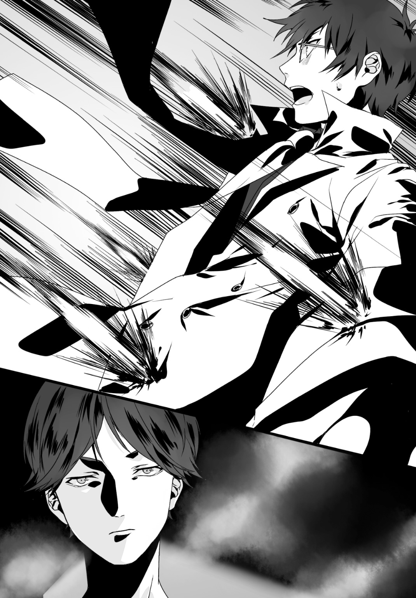
床に座り込んで背をデスクに預けている。脚に銃弾を喰らってしまったらしい。
他の組員たちを見てみるが、状況は更に酷いモノだった。肩、腕、足、人によっては胴体に弾丸を受けている者まで見て取れた。誰も彼も生島に対して銃を向けたりといった対抗手段を取らず、その場にうずくまっている。
風雅さんは......一切弾丸を受けていない。とっさに射線から外れ弾幕外へと逃れたのだろう。先刻とは違った位置取りで生島に困惑の表情を向けていた。
そして、他ならぬ俺自身――。「受けたダメージは甚大」そう判断せざるを得ない。頭部だけはとっさに腕で庇ったため弾丸を貰わなかったが、代償として腕をはじめ全身に鉛の豪雨を浴びせられた。防弾機能のあるコートを着込んでいたので致命傷が無いのが不幸中の幸いか。
が、身体機能の多くが封殺されてしまった。機動力、視界、聴覚。手錠で拘束されているので回避すらもままならない。
「っ!? お、おい！ ニイチャン!?」
片足を床に擦った状態でこちらを窺う叢雲組長。
俺はまず身体を起こそうとするが――駄目だ。動かない。
身体の制御を試みるが、どこもかしこも機能停止したかの如く動作しないのだ。今のような「実弾を撃ち込まれる」という状況を想定しこのコートを作ってもらったというのに......。
実際やられてみて初めて理解した。防ぎきれるモンじゃない。とは言えこれが無ければ問答無用で殺されていたのは確かだ。鈍痛の中に確かな感謝を抱えながら前方を眼だけで睨む。
事務所の入り口。そこでは風雅さんが生島と対峙していた。
「......へぇ？ 凄い武器ですね？ イリナさんたちが撤退したのも頷けます」
俺や叢雲組員、そのどちらへも風雅さんは一瞥すらくれる事など無かった。
対する生島は風雅さんを正面に捉えつつも、発砲しない。
やがて生島は重苦しい声をこの場に響かせた。
「――貴様、焚書課だな」
「だったら何です」
「俺と来てもらう」
「はぁ？」
......何て言った。今、生島は。
どういう事だ。コイツの狙いは俺じゃないのか？
一瞬「風雅さんが生島とグルだった」という飛躍極まる想像までしてしまったが――、すぐにそれは有り得ないと理解した。
彼女が生島に飛びかかり、蹴りを放ったのだから。
「――来てもらう？ 『来てください』と土下座したら考えてあげますよっ！」
ギィンッ！ と金属が激突する音が高く鳴る。生島は易々と彼女の「敵対の返答」をミルドレッドの盾で防いだ。
「フン......体で教える以外になし、か」
取りも直さず、ただ風雅さんをその鋭い眼光で射貫いている生島。
一方風雅さんは防がれた反動のまま後方へと回転。即座にまた彼へと突進していった。
前蹴り、回し蹴り、カカト落とし。次々と脚技が繰り出されてゆく。
生島はそれらを迎撃することもなく、唯々ミルドレッドを掲げて弾き続けていた。
「貴方、何が目的です！ 道路で発砲したと思ったら次は私に『一緒に来い』なんて！」
「すぐに分かる。大人しくついて来たらな」
「冗談ッ！」
踊る。響く。
攻撃対象という立場から離れて観る風雅さんの攻撃動作は「優美」、その一言に尽きた。
これだけ荒れ果てた室内においてもその華麗さは殊更際立っている。否、こんな場だからこそ彼女の強さは気高く咲き誇るのだろうか。
一方生島は、その鉄の塊を布のように振り回している。風雅さんのバネのようにしなる体軀から繰り出される青き連撃はすべてその盾に阻まれていた。通電しないのだろうかと思ったが、どうやらミルドレッドのグリップは絶縁体で構成されているらしく、まるで意に介していない。脚の電撃に翻弄された俺の時とはまるで状況が違っている。
「ッ！ ......防いでばっかで何がしたいんですかッ！」
バギッ！ ギィン！ 断続的に反射音が鳴り続く。
攻撃を繰り返しつつも、風雅さんはミルドレッドの多段型銃口の火線から器用に外れていた。弾の道が読めているからこそ可能な芸当だ。
――いや、違う。その視線の動向を見るに「七つの銃口の一番左だけを凝視し銃全体の方向を判断」している。彼女は銃口への警戒を最大限に振るっているのだ。
だからこそ......俺は恐ろしかった。
この事務所へ押し入った時を別にし、生島はいまだ『ミルドレッドを発砲していない』のだ。何が目的でそうしているのか皆目見当も付かないが、一つだけ明らかな事実が存在する。
生島はまだ本気を出してはいない。
盾で蹴撃を弾く雑音はなおも鳴り続けている。
......だが、その音と音の感覚が徐々に長くなっている事に、俺は気づいていた。先刻の俺との諍いもあり消耗しているのだ。風雅さん自身はそれを理解しているのだろうか。
そして残念ながら、生島は彼女の疲労を察知しているらしい。
ミルドレッドを振り回す速度が上昇している。
「く、ぅっ、ッ！」
風雅さんが苦しそうに呻く。
前蹴り。押し出したミルドレッドに阻まれた。
回し蹴り。いとも容易く弾かれて体勢を崩した。
カカト落とし。もはや振り下ろすより前に止められた。
何一つ通用してない。今や立場は完全に逆転していた。生島の振り回すミルドレッドに風雅さんが翻弄されている。このままでは風雅さんは......俺がどうにかしなければ。
焦燥が感情を焦がす中、俺は力を総動員して身体を前に出そうとした。
......だが。
「ッ!? きゃあッ！」
突如「ドゴンッ」と、鈍いイヤな音が響いた。
風雅さんが脚を振り下ろした瞬間を狙い、その全身へ生島がミルドレッドを叩き付けたのだ。
か細い彼女の体軀は宙を舞い、なす術もなく吹き飛ばされてゆく。
そして――壁面へと頭部から衝突した。
「ふ、風雅さんっ！」
思わずその名を口にしていた。だが反応がない。
風雅さんは壁からズルリと倒れ込むと、そのまま床に崩れ落ち......ピクリともしなくなった。
啞然としている俺とは反対、生島はすぐに動いていた。手に超々重量の武器を手にしながら、もう片方の手で壁際から風雅さんを抱え上げる。まるで野良猫を引っ摑むかの如く。
「......ま、待て」
俺の声はかすれていた。生島はそんな俺にも何者にも構わずに、堂々と風雅さんを抱えて事務所の出口へと向かう。
今すぐ飛び掛かりたかった。だが手元でガチガチと鳴る手錠がそれを許可しない。
その背中へと撃ち込みたかった。しかしこの男にゴム弾は通用しない。
事ここに及んでようやく明瞭になった視界。それが映し出すのは、ただ無機質に作業的に、感情すら放たぬように生島が風雅さんを攫ってゆくという――悪夢のような光景だった。
「く、くそ......ッ！ 待てェっ！ 生島ァア！」
叫びも虚空の露と消えるだけ。
一矢報いる事すら出来ず、俺は風雅さんをヤツの手に渡してしまった――。
「――イリナちゃんに電話しておいたわ。すぐこっちに来るそうよ」
焚書課強襲特務室・一ノ瀬玲香室長。
俺たちの上司である玲香さんは、スマートフォンの通話を切ると俺の正面に腰かけた。
ここは焚書課の執務室。俺と玲香さんはガラステーブルを差し挟み、向かい合うかたちとなっている。
あの叢雲組の事務所に警察を呼んだ後、俺は警察車両でここに戻ってきた。
一方先輩は、ここで仮眠を取った後すぐに帰宅したらしい。今しがた玲香さんはそれを電話で呼び戻したのだ。......腹立たしかった。彼女から休む時間すら奪ってしまった事が。
「維刀くん。怪我はどう？」
心から気遣う口調の玲香さんに、俺は思わず視線を逸らしてしまった。視線を移した先である隣の椅子はボロボロの上着が掛けられており、重厚なインテリアを無様に飾り立てていた。
――数時間前、俺は多数の弾丸を受けた。特殊繊維越しとは言えその威力をゼロになどできるワケもなく、ダメージは全身至る所に点在している。今しがた簡単な治療を受け終わったが、「緊急を要する怪我は見受けられない」との事だった。人体を貫通もしくは残存している弾丸はゼロだった為らしい。あのコートは今回のような場合を想定して藍の親父さんに拵えてもらったものだが、心底感謝する。あれが無ければ俺は間違いなくあの世行きだった。
意識を前方へと引き戻す。玲香さんはなおも俺を心配そうな表情で覗き込んでいる。
「......大丈夫です。動く分には何の支障もありません」
「良かった。あなたがそんな状態に追い込まれるなんて珍しいわね」
「油断、していました」
「でしょうね。でもよく弾丸の雨を受けてそれだけの傷で済んだわー」
「それは......あの事務所の備品を盾にしたからです」
「ん。そ」
それ以上は興味がない、とでも言わんばかりに玲香さんは話を打ち切った。「あのコートがあったから助かった」と答えるワケにはいかないので、この対応には正直助かる。
「身体は大丈夫、と。それじゃあお仕事の話をしてもいいかしら？」
「構いません。むしろそうして下さい。気が紛れる」
「分かったわー。『悪い情報』と『悪い情報』があるんだけど、どちらから聞きたい？」
「良い情報はないんですか......？」
「無いわね、一つも。――あーいや、一つあったわ。あの叢雲組の組員だけど」
「どうなったんです、彼らは」
「組員数名が重傷だけど死者はゼロ。あれだけやって死人が出なかった事が奇跡ね。......でも『別の死人』は出てしまったけれど」
「別の死人？」
「どうぞ。『悪い情報』その一よ」
玲香さんは俺に書類を手渡してきた。
上部からそれに目を通してみて......困惑した。玲香さんが何を言いたいのかサッパリ理解出来なかったから。印刷されていたのは事件の詳細だった。発生日時は今日の昼。被害者は四十二歳の男で、都内の路上を歩いている所を襲われたらしい。死因は......。
「――そういう、事ですか」
理解に至り、精一杯絞り出した俺の声。玲香さんは頷いた。
「殺された男は不動産管理会社の社員。それもあのレンタル倉庫を管理していたわ。焚書課の別チームがずっと彼を追っていたんだけれど、今日人気のない路上で殺害されているのが発見されたわ。......維刀くん、何が言いたいか分かるわよね？」
「生島ですね。生島がこの社員を殺したんだ」
「ええ......組織犯罪対策部がさっきようやく情報をくれたわ。生島の『殺害方法』も含めてね。だから私もすぐに気付いたわ」
俺が生島をこの事件と繫げた理由は簡単、「被害者が首の骨を折られていた」ことによる。生島はミルドレッドを手にする以前は、怪力にモノを言わせ殺害対象の首の骨を折ることで『戻り弾』として生きてきた。こんな異常な殺害方法、生島以外には不可能だ。
「でも......生島がなぜ、あの貸倉庫の管理人を？」
「分からないわ。課としては被害者をマークし始めたのがまさに今日だから、寝耳に水の出来事なの。でも生島は被害者が管理していた倉庫をずっと張っていた。つまり――」
「あの倉庫に何かがある。そういう事でしょうか」
玲香さんは首を縦に振らなかった。現状軽率な判断はできないという事だろう。
だが。俺の意識は「生島の目的は何か」には無く、別のところに在った。
『ついに死者が出た』。その事実は想像以上に重く息苦しく痛烈に、俺へとのしかかってくる。そして同時に「この『死』は自分にも降り掛かる」という実感も。
......駄目だ、話にならない。鎮圧弾では歯が立たない。対抗するには実弾が必要だ。
ミルドレッドを攻略する為、一度藍のバーへと向かう必要がある。
「それで......もう一つの悪い話題は？」
「脅迫状よ。ついさっきメールで送られてきたわ。プリントしたのを見て」
断る事すら忘れ、俺は玲香さんの手からその紙面をひったくるように奪った。
文面はこうだ。
〝
奏手イリナ 維刀臥人
両名は本日中に都内○○の廃ビルへと来られたし
服装はあの倉庫での初遭遇時と完全に同じものを指定する
指定とは違う服装で来た場合 女は殺す
刻限を一分でも過ぎた場合も 女を殺す
両名以外の人間が来た場合も 女を殺す
生島 醍醐
〟
嫌なニュースばかりが立て続けに襲い掛かってくる。思わず「クシャリ」と手元のメール文面を握り潰している自分に気付いた。
「......玲香さん。この件を上には」
「伝えてないわ。もちろん西園寺都知事にも」
「ですよね。伝えてしまったら大事になって焚書課だけの騒ぎじゃ済まない」
「ええ。それにこんな時の為に『ジョーカー』のあなたが居るんだし」
そのジョーカーが居てあんな状況を招いたというのに。玲香さんからの信頼を得るに値しない自分に苛立ちが募る。
「それで......どうするの維刀くん。要求に従うなら援軍は出せないわよ？」
「構いません。俺と先輩で風雅さんを救出しますから」
「とするとこのまま直接、生島が指定してきた廃ビルに向かうつもり？ イリナちゃんが来るまで待つの？」
「ヤツを斃すにはまだ装備が足りません。それを入手するため、先輩とは別の場所で落ち合います。脅迫状に『武器は持ってくるな』とは書かれていませんから」
「......分かったわ。じゃあイリナちゃんに連絡取るわね。向かう先を変えてもらうわ」
「それも俺がやります」
「大丈夫？」
「俺の失態ですから。先輩には俺から説明します」
全て察するような視線で見つめてくる玲香さん。ミスを犯した今の俺では彼女と話しづらいだろう、と気遣ってくれたのだ。だがあの人とは俺が直接話さなければ意味がない。
スマートフォンを取り出し、先輩の番号にかける。
果たして彼女は三コール目で電話に出た。
「――先輩、俺です。今どこですか」
『ここ？ 神田駅だな。何か変更点でもあったか？ 話は概ね室長から聞いたぞ』
「それもあるんですが......。すみません。風雅さんが連れ去られたのは俺のミスです」
『......』
「油断していました。いや、慢心していたんです。『この程度なら対処できる』みたいな甘い心構えで。仕事に臨む態度じゃない。結果、俺のせいで風雅さんは――、」
『維刀』
「っ、はい」
『今やる事は一つ、風雅の奪還だろう。違うのか？』
「確かに......そうですが」
『だったらアイツを取り戻せば何も問題は無い。......ま、まぁアイツが居なくなってくれたら確かに嬉しいが？ それとこれは別問題だし？』
思わず俺は電話口で苦笑してしまった。
『お前のミスじゃないよ、風雅本人のミスだ。アイツだってこうなる事を承知で捜査官になったんだ。それよりお前、身体は大丈夫なのか？ 怪我をしたと聞いたぞ』
「......ははっ」
『な、何だ。急に笑い出して。気持ち悪いヤツだな』
「いえ――ありがとうございます。大丈夫です。怪我は心配ありません」
『ならいいんだ』
「......情けないですね。俺より年下の先輩にフォローされるなんて」
『おい私をナメるな。お前よりこの仕事が長いんだからな、年なんて関係ないよ。......維刀』
「何ですか」
『絶対に風雅を助け出すぞ。お前の力を貸してくれ。無論私も行く』
「もちろんです」
どうにも俺は、無駄な自己憐憫に浸るクセがあるな。
風雅さんの言うとおりだ。「防御が弱い」。身体も、そして心も。今立ち向かうべきは生島だ。自分自身のみっともなさではない。
俺は先輩に「あのバーで会いましょう」と告げ、電話を切った。
そしてスマートフォンを懐にしまうと玲香さんへ頷きひとつ。課の執務室を出た。
心なしか、今では身体に満ちたダメージが軽くなったように思えていた。
「ちょ、ちょっとガット!? どうしたの!?」
バーに入った途端、驚愕に我を忘れた藍の声が響き渡った。
ボロボロになった俺の姿を目にしたせいだろう。いちいちみっともない言い訳をするのも癪なので、精一杯の苦笑いを作りながら店内へと進んでゆく。
「近所の野良犬と喧嘩したってレベルじゃないよね？」
「ドジったんだよ。......悪い、ちょっと待ち合わせにこの店使わせてもらうぞ」
そう言って俺はカウンター席に腰を下ろした。そして向かいに立っている藍へと聖堂騎士のコートを渡す。それを確認した藍の表情が見る見る歪んでいった。
「ま、マジなのコレ!? ボロボロじゃん！ 実弾相手って事？ 大丈夫なの!?」
「オマエが持ってきてくれたお蔭だ。そいつを着てたから助かったんだよ。ありがとう」
「作った父さんに言ってよ。......飲み物は？」
「いらない。先輩がここに来たらすぐ出るから」
「休む間も無いんだね。何があったの？」
珍しく心配そうな表情を覗かせる藍。
まぁ、どうせ先輩が来るまでは暇だ。そう踏んだ俺は藍に今回の件、その一部始終を伝えた。住宅街で銃撃戦になった事、ヤクザの事務所に生島が乗り込んできた事、そして風雅さんが捕らえられている事、その全てを。
「......なるほどね。つまりはその『ミルドレッド』って銃にやられたんだ？」
「ああ。アレを攻略する為にこの店に来たんだ。......藍。オヤジさんから実弾のありかは聞いてるよな？」
「うん。持ってくる？」
「頼む。風雅さんを救い出すために必要だ」
頷いた藍は店の奥へと姿を消した。
ゴソゴソと何かを漁る音だけが響く中、俺は組んだ手に顎をのせる。鈍痛を引きずりつつも俺は思考の奥深くへと没入していた。ここ数日の諸々に納得が出来ないのだ。
――何かが変だ。
――なぜこのような状況になる？ そもそも生島の行動がおかしいじゃないか。
――そうだ。俺が一番納得できないのは。
そこまで思考が至ると、「ゴトリ、ゴトリ」。藍がカウンターに置いた数束のマガジン、その音で現実へと引き戻された。
「はい、弾。あるだけ持ってきたけど」
「ん。......あぁ、サンキュ」
「どした。上の空で」
「......気になるんだよ。わざわざ脅迫状に『あの時の格好で』って書く理由は何だ？」
「聖堂騎士の姿で来い、って事じゃないの？」
「違う。生島の言うあの時ってのは『最初に会った時』って意味だ。文面にもそう書いてある。加えて生島は俺がエルガットだとは知らないんだよ。叢雲組の事務所でアイツは俺を相手にしていなかったからな」
「......だとするとおかしいよね。『焚書課の姿で来い』で済むじゃん」
そう、おかしいんだ、生島の発言は。輪を掛けて行動が。
何か......どこかで大きくギアの嚙み合わせが狂っている。そんな歯痒さがある。
現状における一番の謎、それは『生島の目的』だ。初遭遇時、ヤツはミルドレッドを使用してまで俺たちから逃走を果たした。生島側に立って考えれば、この時点では焚書課に関与して欲しくない状況だったのだ。だが今はその状況が一変している。あいつは関わり合いになるのを避けていた焚書課の風雅さんを連れ去り、あまつさえ俺と先輩をこうして呼び出した。
つまり。遭遇時から「焚書課は敵対すべき相手へと変化した」という事か？
「......考えろ」
手がかりは幾つもある。今までの状況で見落としているだけだ。
どこかに抜け落ちたピースが転がっていないか？ 俺は何かを見逃していないか？ 最近、何か身の回りで変化の起きた出来事は、――......。
そうやって思索していたせいだろう。身体を少しだけ動かすと、俺の胸元から何かがこぼれ落ちた。それはバーの床に叩き付けられて形状を崩してしまった。
......駄目だな。さすがにダメージが残っているらしい。
それより店を汚してしまった。藍は呆れ顔だろうな。
そう思って視線を向けてみると、意外にもメイド店員さんは沈痛な表情を見せていた。
「臥人......アンタ、本当に大丈夫なの？」
「え何、心配してくれてんの？ 藍ちゃんってばカワイイね？」
「あ？ だってウチの店のツケが溜まってんじゃん。テメェが死んだら払えねーだろ」
「溜まってねーよ！ 毎回払ってるだろーが現金一括払いでッ！ 何言ってんのこの子!? 借金捏造すんなや！」
頭をボリボリと搔きながら、再び視線を落とすと――。
「......え、っ」
固まった。俺の視線が。ある一点に縫い止められたかのように。
何だコレは。
ナンだ、コレは。
「ちょっと。待て」
脳内でバラバラに点在していたピースが集結し、絵という「解答」を成す。
あぁ、そうか――。理解した。すべてが繫がった。生島の目的も、なぜ風雅さんを連れ去ったのかも。そして、ヤツが次に何を狙っているのかも。
時間が惜しい。俺はやおら立ち上がり、店の出口へと脚を向けた。
「......邪魔したな藍。出るわ」
「ちょ、ちょっと臥人!? どうしたの急に！」
「解ったんだよ、全部。ヤツらの次の狙いは......先輩だ」
「えぇ!? あ、あの金髪のガキが!?」
困惑の渦に呑まれている藍。そんな彼女の脇をすり抜けて、俺は出口へと進む。
追いかけてくる藍の足音が背後から響く。
「――ガット！」
「どうした」
「アンタさっきさ。『心配してくれてんの？』って訊いたよね？」
「ああ。でその答えは『金返せ』だったよね。お前がいてくれて幸せモンだよ、俺は」
「イジケんなって。こっち向きなよガット」
その言葉に従い振り向くと、藍は小さく口元を弛ませた。
「答えてあげる。心配はしてないよ。ただ一つだけ言わせて。――『いってらっしゃい』」
「――ああ。『いってきます』」
ドアがこの状況に似合わぬマヌケな効果音を演奏し、外に出る。
道を数本折れるとすぐに秋葉原中央通りへと出た。左右へと大量の車が流れている。
俺はタクシーを停めた。
やおら乗り込んで、運転手に「警視庁まで」と短く告げると車は前進を始める。本当に警視庁へ戻るつもりは無かった。この道の途中で先輩を見つけるつもりだ。
揺れる車内。スマートフォンを取り出して先輩に電話を掛けるが――。
「......クソッ！」
出ない。気付いていないのか。
車は中央通りを道なりに走る。
焦燥だけが心の大部分を占拠する中、俺は先輩の辿るであろう道筋を脳裏で描いてみた。
――先輩が署を出たのは数十分前。彼女は帰宅にはいつも公共交通機関を利用している。俺からの電話に出た際、先輩は「ここは神田駅」だと口にしていた。あそこは秋葉原最寄のメトロ駅......。つまり、この道を辿っていけば先輩と遭遇できるハズだ。
故に俺は左右の歩道へ交互に目をやり、彼女の姿を探す。平日だというのにこの街は多くの道行く人たちで溢れている。規制以前はこの倍以上だったというのだから驚きだ。

――と。
「っ!? 先輩！」
居た。ここから遙か向こう、数十メートル先に。
......だが。声を掛けることが出来ない。彼女の周囲に人影を確認したからだ。
懐に手を伸ばしている。十中八九拳銃だろう。その風体から判断するにオタクとは無縁に見えた。どう見てもマトモな種類の人間だとは思えない。つまり連中は先輩を付け狙っていた斗蛾山組の連中だ。
人数は、一人、二人、三人、............――六人。
逡巡する暇など無かった。必要なかった。
俺はタクシーを降りて懐から銃を抜くと、そのまま前方へと突っ込む。
「先輩！」
敵に察知されるのを承知で叫ぶ。
こちらに気付いた先輩は意外そうな顔で俺へと笑いかけてきた。――が、俺の手元に銃が握られているのを視認すると、その表情が急激に硬直した。
通行人が大勢いる。だが構わない。一瞬で片付ければ巻き込む心配はない。
決意した俺は敵の一人に照準を合わせ、引き金を引いた。
――銃声。
俺の撃ち放ったゴム弾は一人目の頭部に着弾し、意識を奪い去った。
次いで周囲を確認する。......この俺の凶行に恐怖の表情を見せている人ばかりだ。だが、俺が組員だと当たりを付けた残りの五名だけは、やはり違う感情を放っている。
それは「憤怒」。この状況では何より場違いで不自然な感情だ。
「なッ、何だテメェはァア！」
ようやく自分たちに迫る危機を察知したか、男たちの一人が声を張り上げた。
だがもう手遅れだ。一手も、二手も。
俺は発砲の熱冷めやらぬ銃身を、四方八方様々な方向へと差し向ける。その先には例外なく組の男たちが存在していた。
無論、その先へと弾丸を送り届けることも忘れてはいない。
一発、二発、三発と。銃声が轟く度に男たちはその場に身を崩した。
残った二人は......。っと、これは意外だった。先輩が頭部を撃ちぬいて意識を剝奪していたのだ。自分が狙われていた事、そして誰が敵かを瞬時に理解したのだ、彼女は。
これで襲撃してきた全員を片付けた事になる。ザワめく周囲の通行人の真っ只中を搔き分け、俺はゆっくりと先輩に近づいた。
「......どういう事だ。維刀」
困惑。彼女の感情はその一言に尽きた。無理もないだろう。ただ道を歩いていたと思ったら自分を付け狙う連中が存在しており、同僚が彼らへと慈悲なく発砲したのだから。
俺は銃を仕舞った。そして先輩へと更に近づく。
「先輩。今回の事件の真相が見えました」
「何だと？」
瞳を見開く先輩。彼女へ俺は粛々と宣言した。
「生島の真の狙いは......俺でも先輩でもありません」
四．マグナム・フォース
～Magnum Force～
生島が指定した現場は、ここからすぐ近くだ。
なので斃した組員はそのまま放置し、俺たちはこの地点から歩いて指定の廃ビルへと向かう事にした。後で誰かが通報してくれるだろう。
俺たちは既に中央通りからは外れて細い中小路を進んでいた。
夕暮れの太陽はビルの谷間にその姿を隠し、周囲へ夜の帳が降り始めている。現場に着くころにはもう闇の只中だろう。
歩みながら先輩に情報の開示を行う。
「俺たちは見誤っていたんです。ヤツの狙いは俺と先輩じゃない」
「だったらなぜ......私たち二人をおびき出したんだ？」
「俺たちの持っているモノが目当てなんですよ」
「？」
小首を傾げて疑問を伝える先輩の上着をジッと見つめる。
......やっぱり。彼女も俺も、昨日から勤務続きでロクに家に帰っていなかった。最早必然だったのかもしれない。こういった状況を招いてしまったのは。
「な......何だ維刀。私をジーっと見て」
「あ、いや。ただ先輩の――」
「胸のサイズが気に掛かったか？ ん？ オイ」
「違いますよ！」
「違わないさ。......ハハッ、安心しろ。私には分かっている。お前は気付いていたか維刀？」
「な、何にですか」
「お前が風雅を見る時の眼だよ。私の時は基本的に顔を見て会話するクセに、風雅の時はお前の視線が若干下にずーっと向いているんだよ。気付いていたか？ 気付いていなかったよな？ 気付いていなかっただろう。これが意味するところは唯一つだ」
「......予想つきますけど一応訊きます。何でしょうか」
「胸だ。胸だよ。おっぱいだ。お前は胸部に備え付けられたデッド・ウェイトが好きで好きでたまらないのさ。ご立派なあの迅早下連峰が忘れられないんだろう？ 今も私の奏手平野を見てガッカリしていたんだよな？ 正直に言え！」
えっ......今このタイミングでそれ言うの？ 事件の真相開示は？ 気にならないの？
「挙句だ！ お前は『金色より黒が好きだ』とか言うし......！ 『小さいのより大きいのが好きだ』とも抜かすし！ しまいには終始風雅の胸ばかり見て！」
「あ、あの......先輩？ 今はそんな事言ってる場合じゃ......風雅さんだって人質に......」
「分かっている！ 分かっているからこそ気になるんだ！ 私には無い風雅の魅力に引き摺り込まれてしまったお前が真に純粋な正義感を以て風雅を救出せんと意気込んでいるのか否かの判断が皆目及ばないから......！」
あ、駄目だこれ。俺の話全然聞いてねーわ。
話題が「胸」に及ぶと途端に正気を失うんだな先輩って。――まぁ、さっきは電話で発破かけてくれたし、ここは俺がフォローするか。
荒んだこの空気を一掃するように。俺はあくまで冷静に、先輩へと告げる。
「......先輩。あなたは勘違いしていますよ」
「勘違い？ な......何をだよ？」
「風雅さんの魅力は胸ではありません。あの美脚です」
「え？」
「引き締まり、それでいて伸びやかでしなやかな肢。それを縦横無尽に振り回す姿には最早官能的な魅力さえ湛えていると思います。風雅さんは総じてスタイルの良い人だと思いますよ。確かにお胸も素敵です。しかし、あのおみ足の前では全て霞んでしまいますよね」
両目を見開いて先輩はこちらを凝視する。
「え、えっと......つまり？ お前はアイツの胸ではなく、脚を？」
「はい。少なくとも俺は胸よりもそっちに目が行きますね。風雅さんを前にすると」
俺の回答を受けた先輩はしばし硬直――。
が、瞬時にその表情を「歓喜」へと一変させた。
「......な、なぁんだ！ そうだったか！ いや胸じゃなければいいんだ、胸じゃなければ！」
「やはりそこが気に掛かっていたんですね。落とし所が見つかったようで何よりです」
「うんっ！ ――よぉし維刀、そこで少し待っていろ！」
たたたっ、と。先輩は俺に背を向け、細道の方へと向かっていこうとする。まさか......。
「......先輩。もしやと思いますけど、そのニーソックスを脱ごうとか思ってます？」
「う、ッ!?」
俺の指摘に身をビクンと震わせ、先輩は硬直した。どうやら図星だったらしい。
あれ......先輩ってこんなにアタマ悪かったっけ？ 確か『頭脳：５』だったよな？
バツの悪そうな顔を伴ってこちらに引き返してくる先輩へと、俺は言い聞かせる。
「風雅さんと張り合っても仕方ありませんよ......先輩」
「で、でも。風雅の魅力が脚部ならば私も対抗しなければ、負けのような......」
「人には人それぞれの魅力があります。先輩が無理をして合わせる必要はありません」
「じゃあ私には何があるんだよ？」
「俺と培ってきた絆があるじゃないですか。それを見せつけてやりましょう、生島に」
「！ あ、あぁ確かに！ そうだったな！」
「それに今はこんな事をやってる状況じゃないでしょ。......いいかげん怒りますよ、俺」
「......はい」
泰然自若。何事も無かったかのように先輩は歩行を再開した。どうにか落ち着いたらしい。お蔭で真相解明が中途半端な所で終わってしまったが......もういいや。疲れた。
「っ......――と。着いたか」
俺は足を止めた。建物の曲り角から目的の廃ビルが視界に入ったからだ。
どうやら俺は現場の本当にすぐ近くで彼女をキャッチアップしたらしい。廃ビルは朽ちかけた外壁を晒し、完全に周囲から浮いていた。周辺に人通りが少ない事を含んで考えても異様だ。元々治安の良い地域ではないのだろう。
二人で頭を揃え、身を物陰に隠したまま覗き込む。
「......維刀。見えるか？ 何人いる」
「ここから確認できるのは......三人です」
入り口は数名の組員たちに守護されていた。手に握られているのは自動小銃。
俺は銃を取り出して、弾倉を引き抜いた。スライドを引くと最後の一発も吐き出され、それら全てを先輩に手渡す。
「先輩に渡しておきます」
「えっ？ 渡すって......お前は？」
回答せず、俺は懐から藍の店で入手したマガジンを取り出す。次いで銃把の底へセットしてスライドを引くと――銃身の発光ラインは赤く輝いた。
「じっ実弾!? お、お前どこからそれを......!?」
「詳しい話は後です。とにかく今は風雅さんの救出が最優先。その為には手加減をしている余裕なんか無い。初っぱなからレッドゾーンで行きます」
「そうか。......維刀」
「何です」
「いや『何です？』って私の台詞なんだが。何だその『レッドゾーン』云々は？ 決めゼリフのつもりか？ 大して決まってもいないし全然格好良くもないぞ」
「そこ......突っ込むんですか？」
「突っ込むさ。とにかくやめろ、漫画に影響受けたオタクじゃあるまいし」
憮然とした表情で渡したマガジンを懐に仕舞い込む先輩。......さっきの仕返しだろうか。
俺は視線・姿勢と共に意識を正した。そして先輩の表情を正面に捉える。
「行きますか、先輩」
「ああ行くぞ、後輩」
互いに頷き合い、この陰から一歩前に踏み出す。
「――警視庁焚書課だ！ 指示どおりに来たぞ、生島はどこだ！」
先輩の叫び。それと共にビル前に立つ男たちへと向けて早足で接近する。
銃は手に持っていない。視線の先の彼らもそれを理解したか、手元の自動小銃をこちらへと向けることはなかった。一番前に立っていた男が前に進み出てくる。
「へっ、約束通り来たか！ 待ってたぜ」
五メートル付近まで接近する両者。今度は俺が先輩をかばう形で前に出た。
「人質は無事か」
「ああ。テメェら二人を上に連れて行くまでは無傷を約束されている」
「ヤクザのお約束を信じろと？」
「生島さんは用心深くてな。自分で相手の死体を見届けなければ納得しないのさ」
なるほど、回答が何より真実じみている。風雅さんは無事と判断して間違いないだろう。
しかし......だとすると「お前たち二人は確実に始末する」って事だよな、これ。
それは困る。ガラじゃないが少し挑発してみるか。
「じゃあ駄目だな」
「ナニ？」
「つまり俺たちが生島の元にたどり着いたら風雅さんは殺されるんだろう？ ついでに俺たちも始末するつもりか？」
「よく分かってるじゃねぇか。大人しく上で殺されろ、って意味だ」
「ここで殺したら上まで死体を運ぶのが面倒だから？」
「理解が早いなぁ。助かるぜ」
「だからそれが駄目なんだよ。お前たちとは決定的な見解の相違がある。――俺たちは死ぬつもりは無い。人質を殺させるつもりも勿論ない」
「アぁ？」
チンピラくさい威嚇を見せる男に構わず。ヘラヘラと表情を崩す俺。
そう、これは他でもない。『宣戦布告』だ。
大きく呼吸。決意を、意志を込めて俺は言葉を吐き出す。
「俺たちの命、風雅さんの命――。どちらも持って帰って、このビルから出て行ってやるよ」
呆然とする男たち。黙って上に追随すると思っていたのだろう。やがて彼らは「ゲラゲラ」と呆れるほど下劣な声を立てて笑い始めた。
「......ッははハハッ！ 何だぁ？ だったら全員消して人質を助ける、ってワケか？」
「まぁそんなとこ？」
「くははははっ！ サイコーだなオマエら！ イカれてるぜ完全に」
「だろ？ じゃあ先急いでるんで行くね」
「ククッ！ ......ああぁいいぜ、行ってみろや！ オレたちをブッ殺してからなアァ！」
「Ｇｏｔ Ｉｔ！」
即座、前へと駆ける。
並行して状況確認――。右斜め前方に一人、その若干後方に一人、更に後ろに一人の計三名。総員銃口をこちらへ向ける寸前だ。
与えない、撃つ暇など。
俺は銃を抜いた勢いもそのまま、三名を順に照準へと捉えて流れるように発砲。
「――っガ、あぁァ、ッ!?」
途端、次々に悲鳴が上がる。
銃弾は狙い過たず三名の組員を貫いた。一人目は大腿部を。二人目は右肩を。そして三人目は左前腕部を。彼らは痛みに銃口を向けることすら忘れている。
今だ。
「先輩！」
「わかっている！」
叫んだ言葉どおり、既に先輩は前に銃口を向けていた。
そして、決着の銃撃。間をおいて俺の側頭部をかすめて行く数発の銃弾――。やがてそれらは前方で蠢いている組員の頭部へと到達し、彼らの意識を奪うことに成功した。
ドサリ、ドサリと。さながら糸の切られた人形の如く、男たちは崩れ落ちてゆく。
硝煙くさくなった周囲には先刻までの静寂が戻った。
倒れた組員を見下ろしながら、俺たちは小さく息をつく。
チラと先輩の方へ目を向けると――不満げに口をへの字に曲げていた。
「......若干非効率的だな。お前と私、両方の弾丸を消費するのは」
「仕方がないですよ。俺が使っているのは実弾、頭を撃つワケにはいかないんですから」
この戦術は先輩の指摘どおり非効率的かもしれない。だがここから先は「俺が敵の動きを止め先輩がトドメ」、これで行く。
彼女が実弾を扱えば、狙いが不完全なので死傷者が出る可能性がある。ならば俺のゴム弾は全て先輩に与え、動かなくなった的にトドメを刺してもらうのが最良の戦術だろう。さながら特殊部隊の「死体撃ち」だが、ゴム弾ならば頭部を撃つことで失われる人命は皆無だ。
加えて組員たちが使っている小銃も理由の一つだ。このＭＰ５は９ｍｍパラベラム弾を使用しているので、弾丸を回収すればファーレンハイト９９９９からも発砲が可能となる。「弾丸の現地調達」も兼ねた戦略だという事だ。
......それに。
グー、パーと手を握って、開く俺。
「ん？ どうした維刀」
「......いえ。何でもありません」
そう。そして何より「正確無比な射撃」が今の俺には出来ていない。
被弾のダメージが残存しているのだろう。先刻の銃撃にしても狙いをつけた箇所から僅かに外れた感触があった。難しいかもしれない、フルパフォーマンスで戦闘を行うのは。
「風雅さんは上です。行きましょう」
だが、そうも言ってはいられない。不安を払拭するように吐いた俺の言葉に先輩は強く頷き、二人揃って前方の入り口へと歩を進めた。
カツ――ゥン、と。俺たちの靴音が大袈裟に響く。
ビル内部は暗黒と静寂、その二つに支配されていた。
広がるのは、二階部分まで占領している巨大な空間――。一階ホールだったのだろう。
そのだだっ広いホールの向こうには、奥へと続く細い通路が見て取れた。恐らくはあの先に階段が設置されていると見ていい。
グルリと周囲を詳細に眺めてみる。広い空間のそこかしこに廃棄された受付デスク、ソファー、埃を被った調度品などが点在していた。人影は一切認められない。
だが。それら障害物の陰から強い意識が放たれていたのを見過ごしはしない。
他でもない『殺気』だ。人数は、............九。いや十か。
俺は前進しようとしていた先輩を手で制した。
「先輩。障害物の陰に敵が隠れています」
「......私たちが通路へ向かったところを狙撃するつもりか」
「ええ。このままスタスタと歩いていけば、弾丸を伴った熱烈歓迎が俺たちを待ちかまえているでしょうね」
「参ったな、ここに釘付けか。......どうする？」
「簡単です。誘いに乗ってやるんですよ」
「え、維刀!?」
困惑する先輩の声を後ろに聞き、俺は悠然と一歩目を蹴り出した。
あろう事か、俺はこのホールのど真ん中を走っている。
銃撃の雨が押し寄せる事を知りながら。圧倒的物量の銃弾が待ち構えていると知りながら。
駈ける。一気に。
が、その間も聴覚だけは研ぎ澄ましていた。雑音ひとつ聞き逃さない為に。
やがて道程の三分の二まで至っただろうか。走り続ける俺の耳に「カタ」とささやかな雑音が届いた。
これを待っていた。
走りを停止すると同時。俺は身体を捻って銃口を起こし、音の発生源へと向ける。
視線の先には......手に小銃を握る組員の男。
引かせない、絶対に。そのトリガーは。
俺は振り返った勢いそのまま、彼の肩口へと発砲――。
標的は「ぐっ」と呻いて銃を手から落とした。頭だけを狙い撃つよりよほど楽だ。
だがこれで終わりではない。これこそが「始まり」だった。
俺の発砲が合図だったかのように、組員の連中は障害物から姿を見せ始めたのだ。
「維刀ッ！」
入り口付近に置き去りにした先輩が叫ぶ。表情は焦りに満ちていた。
それへと返すべき俺の言葉は――。
「問題ありません」
吐き捨てて、次なる標的へと銃撃。
障害物から覗いた「頭部以外の箇所」を即座に確認し、発砲を繰り返す。
「ぐあ」
「ひ、ッ！」
「ごアアあ、ああっ」
悲鳴、呻き、断末魔。そのどれとも判別できない声が、矢継ぎ早に飛び込んでくる。
「障害物から身体を出させ、それでいて撃たせない」。俺の戦術はその二つに終始していた。モグラ叩きの要領だ。見たそばから弾丸を撃ち放ち、相手の攻撃を封殺するという単純作業に過ぎない。
銃だけを障害物から出して銃撃している男もいた。だが当たらない。俺の遙か右方の床をガリガリと削っているだけ。こういった手合いへの対応は容易だ。銃身に一発、そして衝撃でグラついたその身体にもう一発追撃。二発で攻略は完遂された。
これで五人。あと半数程か。攻撃も一旦停止している。――そろそろいいだろう。
「先輩！」
そう叫ぶと即座に、彼女は頷いてこちらへと駈けてきた。
......驚いた。具体的に指示しなかったにも拘らず、彼女は俺の呼びかけで察したらしい。「早くこっちに来てください」という俺の要求を。
体勢を低くした先輩は、銃を構える俺の脇をスルー。そのまま細い通路の手前まで一気に到達していた。
「さすがです先輩！」
声だけで賞賛を送ると彼女の呆れ声が背中にぶつけられた。
「ああぁ......もうっ！ 無茶苦茶な策だぞ維刀！ 弾幕のド真ん中に単騎駈けだと!?」
「よくアレだけの指示で分かりましたね？」
「分かるさ、私をナメるな後輩！ どれだけ組んできたと思っている！」
「失敬。先輩は主に左側を頼みます」
「......――っ、来るぞ！」
無駄話を停止。俺の少し後ろに控える先輩と、揃って銃口を光らせる。
途端、連中は一斉にその姿を露わにした。「個別に攻撃しないほうが得策だ」と判断したか。
だが俺は彼らの「困惑」を見逃さなかった。標的が二人に増えたことで「二人のどちらをターゲッティングすればいいのだ」と一瞬戸惑ったのだろう。
即座に俺はこの手に握る白銀を右方へと向けた。
そして標的にお悩み中の彼らに、鉛を回答として与える。
銃声。銃声。銃声。銃声。
時間にして二秒あったかどうか。だがこんな修羅場では、その一瞬が明暗を分ける。
敵は総員、その場に銃器を落として呻いていた。残った敵戦力は僅か。先輩は、
「これで最後、......――サヨナラだ！」
最後の一人を鎮圧。今しがた敵の無力化を終えたらしい。
周囲には先程までの静けさが戻っている。
「......先輩、前より射撃上手くなりました？ さっきから驚かされてばかりです」
先輩は俺を黙って睨んでいる。納得がいかない、そんな表情だ。
「凄まじい戦闘能力だな」
目的の通路を背にして金糸の少女は呟く。
「お前の本気を初めて目にした。まさかこれほどとは思わなかったよ。私はたった一人の相手を倒すのに数発の弾丸を使用した。......お前は一人に一発か」
「はぁ」
「風雅の言うことも正しいのかもな。アイツの方がお前の能力を活かせる気がしてきた」
「そんな事はないです。先輩相手だとやりやすいですし。それにさっきの指示についてじゃないですけど、......っと」
不意に俺は言葉を切った。そして「先輩の方」へと銃口を向ける。
「ッ!?」
硬直する彼女に構わず発砲。弾丸は先輩の側頭部を通り抜け......通路の向こうに新たに出現した組員へと到達。不意打ちを狙ったのだろう。男は床へと倒れ込んだ。
「『言わなくても伝わる』。それこそが本当の相棒なんじゃないですかね。......――後ろ、気を付けてくださいね」
「あ、あぁ」
先輩の肩をポン、と叩いて通路へと進み入る。
「上に向かいましょう。ホールの敵が追撃してくる前に」
「......だな。身体の一部を撃っただけの敵もいる。完全な無力化とは言い難い」
首肯した先輩は俺の先を歩いてゆく。
やがて路の中程へ至ると、彼女は横たわる襲撃者の延髄へ――「バァン」と死体撃ち。微動だにしなくなった男の手からマガジンを奪い取り、俺に投げて寄こした。
弾倉から９ｍｍ弾を抜き取りながら、二名の捜査官は進む。
「ん、っ」
眼が醒めた。
鼓膜の微細な振動が、喧しく私の完全なる覚醒を促す。
音の原因は何だろう。そう思って身体を起こし、惚けた意識のまま視界を解放すると。
――コンクリート壁。まず瞳に飛び込んできたのはそれ。自宅ではない。課の一室でもない。見覚えなど皆無の場所だった。全身にまとわりついた倦怠感に耐えながら立ち上がり、私は眼球を上下左右へ揺すって現状把握に努める。
「......これは」
状況の異常さは理解できた。即座に。
私は縛られていた。手首を。
ロープなどではない。金属の輪を繫げたチェーン、それが腰の後ろに回された私の手首をがんじがらめに拘束しているのだ。頭上へと目をやると、チェーンは天井に続いている事に気付いた。反対に脚部は自由となっている。上着を身に付けていないせいか少し肌寒い。ファスナーが上がったままのスリットから大腿部が覗いているせいもあるだろう。
念のためカカトを床に叩きつけてみる。......が、やはり駄目。「ジジッ」と情けない音を演奏するに留まり、色の変化すら訪れない。どうやら完全に出力系統が故障してしまったようだ。
嘆息。巡らせた視線は「周囲が剝き出しのコンクリートで囲まれた広いフロア」だということだけはハッキリとさせてくれた。
事ここに至り、意識はようやく完全に覚醒を果たした。
私は生島に捕まったのだ。あの男が私をこの場に拘束したのだろう。そして私の意識を呼び覚ました原因が何かも判明した。
繰り返し繰り返し、下から響く破裂音。――これは、銃声。
「来たか」
突然の声にビクッと身が縮んだ。感情も何も無い、冷え切った声質。
身体をゆっくりと回し、後方から響いたそれへと振り向く。
視線の先に捉えたのは男。コンクリートの壁に背を預け、煙草を燻らせながら足下をじっと睨んでいる。そしてその傍らに見えるのは、あの異形なる鉄塊。
生島醍醐。
「......何の趣向ですか、コレ」
生島は私の問いかけに答えず、短くなった煙草を地面に捨てて足で捻り消す。次いで即座に懐から二つ目の煙草を取り出し、ジッポライターで火を付けた。彼の足元を見るとおびただしい量の吸い殻と灰とが山脈を構成していた。どうやらかなりのチェーン・スモーカーらしい。
カキャン。ライターの蓋を閉じる高音が反響する。
「お前は餌だ。あの二人をおびき出す為のな」
「二人？ 臥人さんとイリナさんのことですか？ ......二人はどこに」
「ここの真下に来ている。お前が目当てだ」
言っていることが理解できなかった。なぜ私を目的に彼らがこんな場所に来るのだろう、と。
だが......少し思索してみて、すぐ答えに至る。この銃声は下で戦闘が展開されている証拠だ。併せて「私が捕まっている」というこの事実。
簡単だ。あの叢雲組で捕まり、私は人質となってしまったのだ。無様にも。
理解と同時、酷く不快な苛立ちが全身を駆け巡った。
腹が立つ。嫌になる。完全に足手まといだ。出世だのイリナさんを超えるだの、最早そんな戯言をホザいているような状況ではない。言える余裕も失せていた。今の私は、二人を危機に晒している元凶に過ぎない。
気づけば生島をありったけの悪意を込めて睨んでいた。
「......私をどうするつもりですか？」
「どうもしない。もう目的は済んだ。――いや、奴らへの脅しとして使うのも一興か。連中を殺す切り札にもなる」
「わぁ。サイっテーの卑劣漢ですね」
「感謝しろ、お前に価値を見出してやっているのだからな。そもそもお前には何の存在価値もない。今となっては」
「あの二人がここに来たから？」
答えずに生島は煙草に口を付けた。「無言の肯定」だろう。ある意味わかりやすい男らしい。
「大人しくしていろ。余計な真似をしなければ、お前だけは無傷で解放してやってもいい」
「......ふ、ふーん。そりゃありがとうございます。じゃあ臥人さんとイリナさんは？ 彼らも無事に帰してくれるんですかね？」
「無理だ」
「あら手厳しい」
「奴らは殺す」
淡々と。冷徹に。何の決意も葛藤も感じさせぬ調子で生島はそう宣言した。
ゾッとした。首筋が震えるのが分かった。その一切飾らない口調で理解してしまったからだ。「彼は本気で臥人さんとイリナさんを殺すつもりなのだ」と。
――だが。ここに来て、一つの疑問が絡み付いてくる。
生島がここまで二人に執着する理由は何だ？
発言を振り返って判断できるのは......。まず私本人に用はない。彼らをおびき出すための餌に過ぎない。本当の目的は臥人さんとイリナさん、彼ら二人をおびき出す事。そして殺す事。
不可解なのはその点だ。どうしてあの二人が生島にとっての敵となり得る？
彼らはただの焚書課捜査官。ここまで妄執的な殺害衝動を向けているなんて、どう考えても不自然だ。
「......理解できませんね。なぜあの二人にそこまで執着するんですか」
「お前が知る必要は無い。一緒に始末されたいのか」
「その問いは『知ったら殺さなければならない』って意味ですか」
またも沈黙。つまり肯定。本当に分かりやすい男だ。が、これで明らかになった事実がある。
あの二人は何かを知っているのだ。生島にとって知られたくない、それこそ殺す必要すらある程の事実を。故に生島は彼らを始末しようと画策しているのだ。
――バァン、バァン。
今では階下から響く銃声がより鮮明なものとなっていた。この階に彼らが近づいてきている、そういう事だろう。臥人さんとイリナさん、彼ら二人の快進撃は続いているのだ。
安心からだろうか。思わず私は「ふん」と鼻で笑っていた。
「『奴らは殺す』、ですか。二人とも随分と甘く見積もられたものですねぇ？」
返答は無い。無いので私は一方的に喋ることにした。
「ご存じないんでしょう？ 臥人さんがどれ程の強さを持っているのか。チンピラが十人二十人束になったところで彼は負けませんよ。イリナさんだって同様です。あの歳で特級にまで昇り詰めた実力者、そう簡単に討たれるようなタマじゃないですから」
「だからこそ、俺が自ら出ていく」
フーッ、と。彼の吐き出した煙がここまで届いて鬱陶しい。
やがて生島は煙草を再び床に放り、靴でジャリジャリと踏み消した。三本目に火を付けるのだろうかと思ったのだが、彼がその手に取ったのは新たな一本ではなかった。
銃。あの自動小銃を七つ組み合わせた破壊兵器だ。鈍く輝く巨大な盾。殺意を前方へと過剰に集中させる複数の銃口。その常軌を逸した兵器としての在り様は「武器と対峙している」というより「獣が唸りと共に威嚇している」といった表現が的確に思えてしまう。
唯々、相対した敵を葬るために構成された兵器――。無機質な外見にも拘らず有機的な気色悪さ・不気味さが私の神経を極めて不快に逆撫でしていた。
そんな巨大なモンスターを生島は片手でヒョイと持ち上げる。次いでそのまま拘束中の私の脇を通過しようと歩を進め始めた。階下へと向かおうとしているのだろう。
......ダメだ。この男を行かせては。
行かせたら、二人は。
本能が告げていた。先刻「貴方では二人に勝てない」と強がりを言っていた私。だがこの鉄塊を握る生島を目にした途端、そんな希望的観測など露と消えてしまった。
私がここで止めなければ。できなければ、生島は二人を――！
そう思った途端、無意識で行動に移行していた。
「――ッッ！」
拘束されていない脚を振り回す私。
ビュンッ、と空気を切り裂く鋭い音とともに、生島へと連撃を放つ。
不意を衝かれたか、生島は私の攻撃をノーガードで喰らっていた。
腹部、脇腹、片口、顔面、側頭部、膝横、上腕――。私の脚部はそれら全てを的確に穿っていた。電撃機能が死んでいる通常の蹴撃とはいえ、これほどの攻撃を貰えば普通は立っていられない。正確に、的確に、それぞれの人体急所へと蹴撃をお見舞いしてゆく。
なのに。生島の身体はグラつきすらしなかった。
効いていない。
私の攻撃、その一切が。
「な、何で......!? っ、――あッ!?」
突然足首が握られた。攻撃を打ち切られた私は片足立ちとなり、バランスを崩す。
そして......一発。生島の左拳が、私の腹部で爆ぜた。
「かはッ！」
無様な呻きが漏れた。尋常ではない腹部を突き抜ける衝撃。体をくの字に折った。
食道を逆流する気持ちの悪い感覚、それに恐怖。数多くのネガティブな感覚・感情が全身を駆け巡る。
自失した私の片足を持ち上げたまま。生島はその能面の如き顔を近づけた。
「次、ナメた真似をしてみろ。この楊枝のような脚も縛り上げるぞ」
「......Ｙ字バランスみたいに？ 変なＡＶの見すぎなんじゃないですか、気持ち悪い。だからオッサンは嫌いなんですよ」
クスリと笑いもせず、腹にもう一発。
生島はこの階を後にした。脚を解放され床に崩れ落ちた私に一瞥すら与えず。
――静寂。唯々静か。
静まり返ったこの階に響くのは、私が咳き込む声だけ。そして手元から響くジャラジャラとした不快な音。あまりの不快感から私は奥歯をギリリと嚙み締めてしまう。
自分が捕まった事ではない。二人に迷惑をかけたという事実でもない。
「このままでは二人は殺されてしまう」。
その未来が、現実となるように思えてならなかったから。
その原因が、私のせいとなるのが何より恐ろしかったから。
「最上階は......四階だったよな、確か」
「はい。外から見た限りでは」
先輩の問いに頷いて、二人でコンクリートの剝がれた階段を上ってゆく。
頼りない小さな照明を頼りに二階へと進む俺たち。......いや。この場合、正確には三階になるのだろうか。一階が二階部分まで広がった吹き抜けのホールだったのだから。
踊り場へと到達した俺は上階を窺いつつ、階下の警戒を先輩に任せていた。
「大丈夫だ。下からは来ていない」
先刻倒した連中はまだ悶絶しているのだろう。
顔をあげて上方を窺うと――階段の続きが見えなかった。どうやらこの三階で完全に途切れ、四階への階段は別の場所にあるらしい。
「無茶苦茶な構造だな......。これ、消防法は守られているのか？」
「本来は非常階段が外にあったんでしょうね。取り外されていましたけど」
それが残っていたら一気に最上階へと行けたのに。俺たちを退屈させない心配りだ、涙が出てくる。生島にはダンジョンの作成能力があるらしい。ヤクザ廃業してゲームデザイナーにでも転職すればいいのに。
とにかく。今やるべき事は、風雅さんを見つける為に四階へと向かう事。
踊り場を越えて、最後の一段を上り終えた。
「......行くぞ」
先輩へ頷き、俺は銃を前方へと向けて警戒を強めた。
そして二人揃って三階への一歩目を踏み出す。
――三階。そこに待ち構えていた光景は、一階とはまるで異なっていた。
眼前に広がっているのは「一本の細い道」。
右側はビルの壁面。ガラスの無い窓がズラリと続いている。その壁面を一方として、もう一方の壁は後から設置されたように見えた。道幅はせいぜい人三人が通れる程度。
「......妙だな」
先輩の第一声はもっともだった。通路には何も無いのだから。
右側の窓「だった」複数の正方形が夜景を映す中、通路には人はおろか障害物すら見つけられなかった。道が唯々向こうへと続いているだけ。
「怪しいですね......一階であれ程の銃撃を受けた直後に静寂だと」
「罠が仕掛けられていると考えるべきだろうか」
「クレイモア地雷とかワイヤートラップとか赤外線トラップとか動作検知爆弾とか？」
「......そんな凝った装置を使うのか？ ヤクザって」
「使わない、と断言したいところですけれど」
出来ない。生島は些々神からミルドレッドの供与を受けている。ついでに特殊な軍用兵器を手にしていたとしても不思議ではない。
とは言え......こうして見てみると、どうにもそういった対人トラップの存在は見受けられないのだ。床のみならず天井も側も。あとは外に続くガラスの無い窓くらいだが......。
思考に沈んでいると、突然先輩が叫んだ。
「っ、......維刀！ 後ろだ！ 下の階から敵が上がってきているぞ！」
「あああぁもう次から次へと！」
渋面で階段を振り返ると、確かに連中の声・靴音がここまで響いてきた。まだ姿を見せてはいないが数秒後にはこの階に殺到するだろう。先刻負傷させた敵とは別だ。足を撃ち抜いたのにこうも早く歩けるハズはない。他の待機勢力か何かか。
今はイチイチ相手にしている時間が惜しい。
「......追撃してきた連中には構いません。とにかく上階へ向かうのが最優先です！」
「あ、ああ！」
「っし、じゃあ前へ！」
「前!? い、いやだってお前、この先には何があるか分からないって......！」
「もう気にしていられないです！ 俺が先行しますから後をついてきてください！」
「ああぁもう！」
特級予備巡査の少女はそう吐き捨て、通路へ一歩目を踏み出した俺の後を付いてくる。
現状、先輩の方が冷静な判断が出来ている事は分かっている。だが今は弾丸の消費も風雅さんの安否も気にかかる状況、雑魚一人一人に時間を掛けてなどいられない。
俺たちは走り出す。この通路への不安が杞憂である事を願いながら。
――だが、すぐに理解した。それが杞憂ではない事を。
この通路に敵も罠も無い理由、それに回答をくれたのは「窓の外に映る光景」だった。
「......あぁー。なるほど」
理解した。この通路が空だった理由を。卑屈な笑いが口元を三日月型に変貌させる。
窓の外に見えるのは、道を挟んで向こうに建つ別のビル。
問題は、そちらの窓に見える「複数の人影」だった。彼らは俺たちと同じ階の高さに立っていた。大きな筒状の物体を肩に背負い、こちらへとその照準を向けている。
ＲＰＧ―７。対戦車無反動砲。
この通路は「俺たち二人をまとめて爆殺するための通路」だ――。
「あぁー......。アレか」
先輩も状況を察したらしい。俺と同様、阿呆みたいな声をあげていた。
やがて「バシュン」と。次々に発射音が響きロケット弾は撃ち放たれた。こちらのビルに、否、俺と先輩へと複数の弾頭が向かってくる。
「ま......マズいぞ！ どうするんだ維刀!?」
「決まってます、走るんですよっ！」
「どっちに!?」
「前！」
先輩の手を摑み、前方へと駆ける。
前門の虎、後門の狼......。ならば残された道は「前門の虎を払う」のみ！
直進するロケット弾を右に見ながら、先輩と走る。
撃ち込まれたのは三発。一発は、俺たちが先刻まで立っていた場所を狙い。二発目は、今俺たちが走っている地点を狙い。そして三発目は、俺たちの進行方向の先を狙っている。
破壊すべきは――三発目。
左に先輩を庇いながら走りつつ、窓へと銃を向ける。
響かせた銃声は三発。薬莢から解放された弾丸は、一つのロケット弾に全弾命中。
こちらと向こうのビル、その中間で爆発した。
「や、やったか!?」
「まだです！」
そう、まだだ。後方の二発が今から着弾する。
「――っ！」
先輩の肩を摑み、背後から庇う。
すぐに爆風が俺の背中に降りかかった。次いで砕け散った微細なコンクリートが弾丸となって俺を襲う。着弾点から遠いため、大きなダメージが無い事が救いか。
だが、まだ道の中程。走りを止めるワケにはいかない。
右をちらと見ると、あの連中がＲＰＧ―７に次弾を装塡しているのが見えた。
早く路の終わりへと至る必要がある。次を撃ち込まれる前に。
「い、維刀！」
「今度は何ですかっ！」
「後方からも敵が来た！」
「あああああああああもうっ！」
そちらへと意識を向ける。先輩の言う通りだった。それぞれ手にＭＰ５を握りこちらに向けようとしている。ついに追いつかれてしまった。
が、面倒は続く。
今度は俺たちの進行を遮るように、前方にも組員たちが現れたのだ。
「一体何人出てくるんだよっ!? あああああああああもうホント面倒くせえ！」
「か、囲まれたぞ!?」
前方は、敵。敵。敵。
後方も、敵。敵。敵。
窓にも、敵。敵。敵。
逃げ道は一切無し。これで俺たちは完全包囲された事になる。
「......クソ。コレじゃ、もう間に合わない」
生島と遭遇するまでは温存しておきたかったが......やむを得ない。
ここは、全力で殲滅する。
決意した俺は瞳を閉じた。あろう事か、敵を眼前に捉えた状態で。そして息をひとつ吐き出して意識を底へと没入させてゆく。
底へ。更にその底へ。
そして己を解放するあの呪文を短く、呟いた。
「――『Ｅｘｃｅｅｄ』」
『オフェンシブ・コード』起動。
瞳を瞼のシャッターから解放すると。映る世界は完全に変貌していた。
敵の動作そのすべてが遅く見える。音も銃声や爆発音など敵性のモノだけを拾うようになっていた。先輩を気遣う余裕すら完全に消え失せている。
今や俺の精神は完全に『獣』のそれだった。
この意識は、この身は「周囲の標的を沈黙させる」唯々それだけの為に。
俺は、先輩の銃を奪い取った。
「い、維刀!?」
次いで窓側へと身体を向けて――両の腕を通路と「平行に」伸ばす。
右手には紫に輝く銃を。左手には紅く発光する銃を。
そして。
「――全員......倒れてろ！」
乱暴に叫んで、乱射――。
俺の両手はこの瞬間より『双つの牙』と化し、容赦なく銃弾を放ち続けた。
トリガーを瞬時に引いて、左右の敵の群れへ弾丸を送り届ける。
右の敵には頭部へと。左の敵には手足へと。
いちいち眼で視て確認はしない。必要ない、今の俺には。
両腕を百八十度開いたまま、俺は銃撃を繰り返す。
「ぁガ！」
「ぐ、ひぃ！」
「オぐッ！」
左右からステレオで響く悲鳴は三人目、四人目、そして五人目と増えてゆく。
左側――。俺たちが進むべき方向の連中は、身体から血を噴き出し体勢を崩している。
右側――。俺たちが通ってきた方向。彼らは頭部にゴム弾を喰らい、意識を途絶。
――そして前方、窓の向こうにはＲＰＧ―７を構えた男たちが三名。
次弾の装塡が完了したらしい。全員が砲身をこちらに向け、今にもロケット弾を発射せんといった風情だった。発射を待ち受ける弾頭がここからでもハッキリ確認できる。
撃たせない。
俺は左に伸ばしていた実弾を正面に向け、発砲した。発射前の弾頭へと。
「ぅおああああああああぁあああっ!?」
途端、「ドォオオン」と爆発音を伴って、一人目のＲＰＧが暴発。悲鳴はこれで三方向から響くようになった。
つとめて冷静に。俺は残り二人の弾頭を撃ち抜いてゆく。
ドォン、ドォオン......――。無常に響く爆発音。
これでＲＰＧは完全に無力化した。爆発音をＢＧＭにしつつ、進行方向へ目を向ける。
「ぅぁあ、あ......！」
「ぐ、ひぃい！」
羽を毟られた蛾のように。実弾を受けた男たちは蠢いていた。
その一方で、ゴム弾で撃ち抜いた後方の敵は完全に意識を喪失している。この戦場において実弾は必ずしも有効ではないらしい。
俺は先輩を置き去りにし、前方へと早足で駆けてゆく。
そして紫に光る銃を足元へと向け......ただ機械的に。彼らへと「死体撃ち」を施していった。
――これで、全戦力沈黙。
先輩が驚愕の表情とともに、傍らへと駆けてくる。
「す......凄まじいな。何だ今のは？」
その問いには答えず、俺は右手に握っていた銃を先輩に手渡した。
「返します。二丁拳銃って狙いが逸れて好きじゃないんで」
そして集中の更に奥、その只中に在る意識を拡散させように息を吐いた。
だが。
「......――、ッ!?」
途端「消耗」がドッと押し寄せた。
いつもの感覚ではない。ガクン、と一気に重りを載せられたような重量感。前へとグラつく身体。だが脚が前に出ない。意識と身体がちぐはぐになっている感じだった。
そして地面へと全身を叩き付ける寸前になって、ようやく右足が動いた。
俺はグッと強く踏みとどまり、かろうじて倒れずに済んだ。
「!? ど、どうした維刀!? 大丈夫か？」
「......いえ。何でもありません。大丈夫です」
気遣ってくれる先輩から離れ、逃げるように前方へと一人進む。
......やはり、あの弾丸を受けたのが尾を引いているらしい。
オフェンシブ・コードは言わば「体力の前借り」、長期的に見た場合「寿命の前借り」を背景にした、感覚と意識のドーピングだ。故に使用した場合、後に揺り戻しが出てしまう。今の俺のように正常ではない身体状況では本来使用を控えるべき戦術だ。
なのに、俺は躊躇いもなく使用した。生島との対峙までは温存すべきだったのに。
今回の戦いは五体満足で帰還できないかも知れない――そんな予感が、脳裏をよぎる。
「とにかく先に進みましょう。次の階層が最上階です、風雅さんがいるハズですから」
一際強く頷く先輩。俺たちは先刻の「爆撃通り」を左に折れて、更に先へと進んでゆく。
次の道は、途中で途切れていた。これまでの長さは無い。
正面が行き止まりとなっており、右側に階段が見えた。
二人で階段の前まで駆け寄る。段の一番上を見上げると、そこには鉄扉が重苦しく設置され、俺たちが来る時を待ち構えていた。
ここが終着点だろうか。
「......あの上に風雅が」
「先輩。どうしましょうか」
「どうしましょう、って。......何だ今更」
「ここから先の戦術です。あの扉の向こうに何が待っているのか分かりません。敵が何人待ち構えているのか、トラップはあるのか、そもそも風雅さんはどういう状況に置かれているのか。扉を開けるまでは全ての状況が読めません」
「......確かに」
「そして一番の問題。それは『ここからは最上階』という点です。つまり」
「生島が出てくるという事か」
頷くまでもない問い。無言を肯定として返す。
あの扉の向こうには間違いなく、風雅さんが捕らえられているだろう。だがそれは生島の存在をも同時に認めてしまう。
ヤツの目的は俺たちを殺す事......この局面で出てこないハズがない。
そして俺たちが直面する、単純かつ最大の問題――。
俺たちは本当に生島を倒せるのだろうか。
無論、逃げるようなつもりなど皆無だった。もしそうなら実弾を調達してはいない。だが、事ここに及んで様々な問題が浮上している。
俺の負傷、想像を超える消耗――。どれも俺の見込みの甘さが招いた事態だ。
一方、先輩は予想を大きく上回る戦闘を見せていた。鎮圧弾で俺のフォローをしてくれている点はもちろん、それ以上に「戦う時に誰かが隣にいる」という事実が、想像以上に戦意を奮い立たせてくれるのだ。今まで一人で戦い続けた俺には新鮮でとても心強い感覚だ。
彼女は「自分が足を引っ張るんじゃないだろうか」と懸念を持っていた。
とんでもなかった。俺は彼女に助けられている。だからこそ俺は彼女に「どうしますか」と問うたのだ。「あなたの指示に従います」という意思を込めて。
それを察したのかは解らない。が、先輩はフンと鼻で笑った。
「お前が言いたいのはこういう事だろう。『生島を倒す必要はない。風雅を助け出したら逃げればいい』......と」
「彼女の安全確保が最優先ですから。最悪、生島はこの場で逃がしてしまっても」
「却下だ。生島はただでさえ人を巻き込む事を何とも思わない怪物。野放しにしたら間違いなく犠牲者が増える。奴はここで捕えるべきだ、私たちが」
「......わかりました。俺も同じ考えです。全力で奴を制圧しますよ」
「安心しろ維刀。お前の不調は私も分かっている。私もちゃんとフォローするから。あまり気負うな」
ポン、ポンと俺の肩を叩くと、先輩は階段を上り始めた。俺もそれに追随する。
カツン。カツン。
並んで進行する俺と先輩の靴音が反響する。
カツン。扉の形状がくっきりと視界に映るようになった。
カツン。静けさだけが周囲を覆い隠す。
......――カツン。
最後の一段を上り終えた。
扉の取っ手を軽く引いてみる。鍵はかかっていない。
「......いくぞ」
「ええ」
二人で頷いて――扉を一気に開け放つ！
途端、視界に映り込んだのは敵ではなかった。
只ひたすらに広い空間。これまでの階層とは違い、障害物が一切見当たらない。
ワンフロアぶち抜きのこの階で目に付くのは、部屋の八カ所に立ち並ぶコンクリート剝き出しの柱。奥の夜景を映し出すガラスの無い窓。
そして、その中央には。天井から垂れた鎖に美少女が拘束されている。
風雅さんだ。
ついにここまで辿り着いた。
「ふ、風雅！」
俺の背後から先輩が声をあげるが、俺は風雅さんの方から目を離せない。
上着は取り払われ、不謹慎ながらも色気に心が惑った。口がガムテープで塞がれており痛々しさに腹が立ってくる。その表情は心なしか憔悴しているように見えた。
彼女はうつむき気味な顔を持ち上げ、俺達を視界に捉えた。
「ん、んんー！」
塞がれた口から呻き声が漏れる。彼女はクビを振っていた。横に。
こちらに来るな。そういう事だろうか。
先輩も風雅さんの伝えんとする意図を察したらしい。俺の少し前で停止し、こちらの表情を上目遣いで窺ってきた。
「......維刀」
「ええ。ワナでしょうね」
「だったらどうする。機械のトラップなのか、待ち伏せなのか......読めないぞ」
「どちらにせよやる事は一つですよ。――行ってきます」
「お、おい!? 維刀！」
一階の時と同様に、先輩の制止を背中に聞きながら俺は前進する。
右手に銃を持つ事は忘れていない。敵が飛び出てきた瞬間、発砲する準備は出来ていた。
問題は、その敵が生島かどうか。
カツン。カツン。
響くのは風雅さんの必死の呻き声、そして俺の靴音。
彼女はこのだだっぴろいフロア、そのほぼ中央に拘束されている。俺は既に彼女と部屋の壁、その中間地点まで歩を進めていた。
カツン。
敵はまだ姿を見せない。確実な瞬間を見極めているのだろうか。
そんな中で、風雅さんは............「呻くのをやめていた」。切れ長の瞳を左方に向け、何かを俺に訴えかける。
「――左か！」
俺はコンクリートの床を蹴った。
そして勢いそのまま、前方へと駈けだして一気に柱までの距離を詰める。
既に指はトリガーにかけていた。そして疾駆と共に床と水平に腕を突き出す。
銃口の先は、風雅さんから一番近い柱の裏。
そこにあったのは。
「......え」
敵ではなかった。生島でもなかった。
ミルドレッド。それがあまりにもぞんざいに捨て置かれている。
どういう事だ。得物を手放すなんて理解できない。意表を衝かれた俺の視線はミルドレッドに釘付けにされていた。
風雅さんへ再度目をやると......俺の少し上へ視線が向いていた事に気付いた。
いや。「最初から」その方向を見ていたのに、俺が勘違いしていたのだ。
――理解した。即座、俺は地を這う昆虫のように現地点から離脱した。
その途端。
「ッッッ、――、くッ！」
ズガガガガガガガガガガガガガガガァッ！
耳を塞ぎたくなってくるような激突音が鼓膜を叩く。俺はスウェーの要領で床を蹴った。そして先輩の立つ場所まで一気に戻る。
この衝撃の発生源......それは「床にあるミルドレッドの頭上」から響いていた。
簡単だ。床に置いたミルドレッドの上方の天井に、生島が待ち構えていたのだ。
風雅さんの視線が左に向くのを計算し、俺の目線が下に向くのを確信して。
そして俺の油断、それを狙い「頭上に潜んで」ＭＰ５を単体で発砲してきたのだった。
「い、維刀っ！」
少し後方に控える先輩へと、後ろ手で「問題ない」と伝える。
風雅さんの前方で鳴り続けていた銃声は今ようやく止んだ。この隙に俺と先輩は手近な柱の陰に隠れる。
スタン。ささやかな、生島が床へ降り立った音だけが不気味に反響する。
「......よく避けたな。確実に殺ったと思ったが」
心底感心しているような生島の声。
「風雅さんのお蔭さ。口を封じたところで彼女を抑えられると思ったか？ 見込み違いだな」
「フン」
「というかもういいだろ。彼女の口ぐらいは解放してやっても」
無言。やがて少しの間をおいて、風雅さんが大きく息を吐き出すのが分かった。生島が彼女の口元からガムテープを剝がしたのだ。
「ぶ、無事か!? 風雅！」
「イリナさん！ ......え、ええ。特に身体に損傷はありません！」
「さっきは合図ありがとうございました、風雅さん！ カカトの電撃装置は!?」
「だ、ダメ......完全に機能停止しています！ 普通に蹴飛ばしたけれど、この男には通用しなかった！」
彼女の靴は機能停止中......か。
なるほど。だからこそ生島は風雅さんの腕だけを拘束しているのだ。「電撃の無いコイツなど恐れるに足りない」そう踏んで。
柱を通して俺たちと生島は対峙する。
「......よう、生島。風雅さんの話じゃ、お前『普通に蹴飛ばされた』らしいじゃないか。どんなだ？ 女の子に普通に蹴り飛ばされる気分って。気持ちがいいのか？」
「見え透いた挑発だな。気にせずともすぐに全て終わる」
「どうやって」
「簡単だ。黙って俺に殺されろ」
「は？」
「一人ずつ前に出ろ。安心しろ、脳天をブチ抜けばすぐ終わる。苦しむ間も無くな」
「何言ってんのこの人......」
「それとも口に出さなくては駄目か？ 『抵抗するな。この女を殺されたくなければ』」
溜息が止まらない。この手段に出てくる時点でハッキリした。生島は追い詰められている。それこそ土壇場で三流の悪役に堕ちなければならない程。
先輩はそう思っていなかったらしいが。
「ど......どうする？ 維刀！ このままでは風雅が......！」
この人、本当にいい人だなぁ。詐欺とかに引っかからないか心配だ。
焦る彼女と反対。俺は口元を邪悪に歪ませ、柱越しに生島へと言い返してやる。
「......あぁ。いいんじゃないか？ やってみろよ」
「い、維刀!? お前何を!?」
「やれよ生島。ただし風雅さんに傷一つでも付けた場合、どうなるか分かるよな？ 俺たちはこのビルから真っ先に失礼する。そうなったら困るんじゃないのか？」
「ッ」
生島の舌打ちを遠くに聞き、先輩へと笑いかける。
「先輩、気にする事はありません。ヤツは風雅さんを攻撃できない」
柱の陰でニヤリと笑いがこぼれてしまう。
生島は俺たちを殺したい。故にこのビルから逃げられるのは困る。俺たちは風雅さんを助けたい。故にここから出て行く訳にはいかない。
つまり、彼女を持ち出した脅迫など何の意味も無いのだ。
「維刀......一体お前、何を知っているんだ？」
傍らの先輩が問うてくる。そういえば全ての真相を伝えていなかったな。
――ここは柱の陰。すぐ隣には先輩。この柱の向こうには生島と風雅さん。救出する策は未だ無し。生島を斃す戦略も考え出していない。
ちょうどいい、策を生み出すまで『真相開示』で時間稼ぎといこうか。
「......先輩。アレ、まだ持ってますよね」
「アレ？」
「昨日あのレンタル倉庫で回収した証拠のフィギュアです」
「あ、そういえば。確かにまだ返却せず持ったままだな。ここ数日家に帰れずにいたせいで。......って今ここで言う話かそれ!?」
「渡してください」
「コレを？ ......ほら」
俺へとフィギュアを投げて寄こした先輩。だが俺は受け取る事も無い。
そのまま中空に浮いたそれを、銃で撃ち抜いた。
「い、維刀!? お前何を！」
コン、コンと。フィギュアは無常なる調べを奏でて床へと落ち、転がる。
先輩の目線がそれを追いかけている。軌道の後に残されているのは「純白の粉末」。そして極小のプラスチック片。藍のバーで見たのと全く同じ光景がこの床に展開されていた。
先輩の視線が硬直する。風雅さんもそれを目にして叫びをあげた。
「そ、......それ、まさか!? 臥人さん!?」
「そう、『麻薬』です。それと発信器」
「麻薬っ!? 何故こんなオモチャの中に!?」
「隠ぺい手段、そして輸送手段でしょう。あの倉庫は斗蛾山組がドラッグを隠し、輸送する為に使用していたんですよ。――そうだよな、生島！」
回答は「数多の銃撃」という形をもって返された。
柱の裏でそれを聞きながら、この場にいる全員へと真相を開示してゆく。
「......考えてもみてください。近年のコンテンツ取り締まり強化の結果、押収した証拠は膨大な量となり、今では様々な用途へと転用されています。自治体の注意喚起サンプル、輸出、産業的なリサイクル――。これは逆に言えば、『押収された証拠は警察の証拠管理室を通して全国に配布されている』という事になりますよね」
「な、何を......言っているんだ。維刀？」
「焚書課では押収した証拠をＸ線にかけるような事はしませんよね？ かける必要がないからです。課が重要視するのは『コンテンツを押収した』、ただその事実だけ」
「......確かに。焚書課では証拠の材質など、チェックはしませんね」
「そして一般人でも『こういった資料が欲しい』と一言言えば、その要望に合った没収品を簡単に手にすることが出来てしまう。押収した証拠品は用途に応じて再配布していますからね。俺の学校もそうだった。斗蛾山組は、それに目を付けた」
「どういう事だ？」
「簡単な事です。――警察の証拠が麻薬のルートに利用されていたんですよ」
「ば、馬鹿な......っ！」
「そんな!?」
驚愕している女子二人。彼女たちは俺の説明で全てを察したようだ。
生島が、斗蛾山組が構築した『麻薬ルート』はこうだ。
まずはフィギュアなどのコンテンツに薬物を詰め込む。これはどこかの工場や海外で行われるのだろう。
次にレンタル倉庫などにそのフィギュアを大量に集積させ、ワザと焚書課に押収させる。中身さえ調べられなければ警察の証拠保管室は『どこより安全な保管場所』と成り得るからだ。
そして最後。売人が警察から証拠品を「違法コンテンツ資料」として貰い受ける。
「どの証拠にどの薬物が入っているか」という情報は前もって得ているのだろう。その特徴に合致するものを資料として要求すれば、ブツの入手は完了――。晴れて麻薬は各地に売買されてゆくのだ。
一見穴だらけの破綻したルートのように見える。だが、まさか警察が取引のルートとして利用されているなどとは誰も思いもよらない。現に、俺も先輩も他の焚書課捜査官も、気付く事が出来なかったのだから。
「最大の盲点は自身の足元」。故に、生島はそのもっとも察知しづらい『敵の本拠地』をルートにおける最も安全な保管場所として選んだのだ。
俺は――意識を若干引き締めて生島の方を窺う。もう銃を撃ってきてはいないが、俺たちが顔を出せばすぐにでもミルドレッドは一斉に火を噴くだろう。そんな殺意が迸っている。
「......有り得ません」
少し遠くで風雅さんが呟いた。
「無茶です！ 警察内部を経由するルートを構築するだなんて！ 焚書課ではいくら保管した証拠を破壊しないからって、そう簡単に麻薬移動の経路を作ろうなんて考えますか!? 大体、内部に手引きする人がいなければ......」
「その通りですよね」
「ま、まさか」
「ええ。『警察内部に裏切り者がいる』という事でしょう。残念ながら」
「そんな！」
「今回の事件はオタクなどまったく関係なかったんですよ。むしろ、ただ麻薬取引の過程で利用されていただけの立場に過ぎなかった」
心底腹が立ってくる。自分たちの都合の為、社会状況を利用するこの男に。
ついでだ、生島も「真相解明の場」へと引き摺り込んでやろう。
「生島！ お前があのレンタル倉庫を監視していた理由も知ってるぞ！ 先輩が原因だろ！」
「わ、私だと!?」
「ええ。先輩と他の焚書課捜査官には、ある一点において決定的な違いがあります。何か分かりますか？」
「な、何だろう。日仏ハーフとか？ 最年少とか？」
「違います。先輩は証拠品を破壊するんですよ」
「......？ それがどうしたと？」
「このルートはフィギュアに麻薬を隠す事で成り立っている。そんな中で、もし『フィギュアを破壊する捜査官』が戻ってきたらどうなります？」
「あ......！」
「麻薬の隠蔽がバレてしまう。そして一度バレてしまったら、後は雪崩の如くだ。これまで押収した証拠の破壊チェック、公安による内通者探し、......当然麻薬取締官の参入すらも想像されます。ルートは確実に壊滅するでしょう。生島はそれを恐れた」
「こ、小物くさい男だな!?」
「それでも数日前までは先輩が入院していたので問題は無かったんです、気にかけなくても。だがここ数日で先輩は復帰しました」
「だから私に証拠を破壊されないよう見張っていた......そういう事か？」
「ええ。『奏手イリナは証拠を破壊する捜査官だと知っていた』のも、内通者が居るという仮説の証左になりますね」
「何というか......自分の性癖を告げ口されているようで気分が悪いんだが」
「事実、あのレンタル倉庫でも先輩は証拠品を破壊しようとしていました。危うく俺が止めましたが、あの時点で気づいていたら、......否、気付いて『しまった』ら。生島は間違いなく、あの場で殺したでしょうね。俺たちを」
先輩が身震いするのが分かった。
「倉庫の管理人が殺された理由もソレでしょう。生島は真相に気付いている人間を生かしておきたくなかったんだ」
「見た目に似合わず......気が小さいんだな」
「はい。だから生島は倉庫を背にした俺たちとの戦闘で、攻撃できなかった。中にある麻薬入りフィギュアを破壊したくなかったから。本当に憶病極まる性格だ。――だよなぁ生島！」
返事の代わりに銃撃された。柱の角が削られる。ある意味解りやすい男だ。
「......ちょっと待て。維刀」
「何です」
「その話で思い出したんだが。今しがたお前が破壊したフィギュア。......まさか、私とお前はこれのせいで？」
「正解です。生島が俺たちを狙い続けた理由、それはたった一つ。『証拠品としてまとめそこなったフィギュアを取り返す事』だったんです」
「な！ ば、馬鹿馬鹿しいっ......！ こんなものの為に、私たちが!?」
「憶病さここに極まれり、って感じですよね。生島は相当焦ったハズですよ。『フィギュアが二つだけルートから移動している』と発信器が告げるんですから。俺たちが業務に忙殺され、証拠置場に戻せなかったのもイレギュラーだ。殺したくても署内に居たんじゃ手が出せない。だからこそ、あの現場で風雅さんを人質に取るなんて手に出たんでしょう」
「そ、そうか！ だから私は、一人で帰宅している最中に襲撃されたのか！」
正確にはあの叢雲組事務所で、俺は上着を脱ぎ捨てている。それを嗅ぎ付けて生島はやってきたが、俺が変装して見つからなかった。故に別の焚書課員を誘拐したのだ。
生島が時折発砲してくるため、そちらを警戒しながら尚も叫ぶ。
「あの脅迫状の『初遭遇時と同じ姿で』という言葉も必死に捻りだした文面だろ、生島!? 『証拠を持ってこい』じゃ気付かれる、かと言って持ってこないのも困る......。結果、お前は『あの時と同じ』って言葉しか書けなかった！ そうだよなぁ!? 何か言えよ！」
俺の挑発が功を奏したか。生島は突然、銃撃を停止し。
そして......笑った。
「......――っくくくくくくくく。あぁそうだ。大体はお前の語った通りだな」
「ようやく認めたな。この事件の始まりは何だったんだ？」
「斗蛾山組から提案を受けたのさ。『叢雲組を潰す為にヤクで連中のシマを荒らす』と」
苛つきを助長する口調で生島は「自白」を綴ってゆく。
「斗蛾山組は裏メディアの犯罪に強い。結果、コンテンツ摘発を隠れ蓑にしたルートは構築されたが、そこの金髪の復帰が近いと聞いてな。俺はそのガキからルートを守る存在として雇われたのさ。このミルドレッドを売りつけてきた商人の紹介でな」
「些々神のオヤジか。......ところでお前、アニメとかに興味は？」
「無い。皆無だ」
「オタクについてはどう思ってるんだよ。お前のせいでいい迷惑なんだぞ」
「どうでもいい。いい歳して児戯にかまける連中なぞ、俺に利用される程度が関の山だ」
「丁寧なご回答ありがとう」
俺の心は決まった。これでもう、生島に手加減する必要は無い。
「......なぁ、生島」
「何だ」
「もし俺と先輩がここに証拠品を持ってこなかったら、全てがご破算だった。そうなった場合、お前はどうするつもりだったんだ？」
「この場で貴様らを殺し、家捜しでもしたさ。手はいくらでもある」
「なるほど。それはさせられないわ、絶対に。是が非でも」
家の隠し部屋には違法コンテンツが山脈の如くあるんだから。あそこを調べさせるワケにはいかない。
いずれにせよ、この男を野放しにしたらまた犠牲者が出る。ここで止める。
そして何より。俺はこの男を許せない。許せそうにない。
結論から言えばこのルートは杜撰だ。いずれバレてしまうだろう。だが全てが露見した場合、生島は恐らく逃げ道を用意するハズだ。
『今回の事件はオタクが引き起こした犯罪だ』と導かれるように。
濡れ衣を着せ、自身は逃げ果せる――。この男は間違いなくそう仕組む。
それが心底許せないのだ。
「――焚書課。オレが今、真相を語った理由が分かるか」
「何だよ」
「解らないのか。貴様がここでベラベラ喋った真実は誰にも伝わらないんだよ。今ここで軒並み殺すからな。オマエも、このオンナも、そのガキも」
「用心深さ超えて憶病レベルだな。ヤクザがそれとかこっちが情けなくなるよ」
「用心深いが故ここまで逃げ延びたんだろうな」
俺の額から頰へと汗が流れ落ちた。訪れる銃撃の暴風を予期しているのだろうか。
「それで。お前たちはどうするつもりだ」
「お前を斃すさ。風雅さんも連れ帰る。そして俺たちは三人でこのビルから出てゆく」
「無理だ」
「じゃあ後半の二つだけにしようかな」
「それこそ無理だ。逃げたお前たちを絶対にバラすからな。どこまでも追いかけて」
「ストーカー規制法って知ってるか？ しつこい男は嫌われるぜ」
「もう黙れ」
「黙らないな」
「ならば死ね」
「それはもっと無理」
「何を話すだけ無駄か」
「残念だがそうらしい」
「ならば始めるぞ」
「ああ、終わらせようぜ。――撃ち滅ぼしてやるよ、怪物」
愚にも付かぬ問答の果て。聞こえた音は「ガキャン」。最も耳にしたくない無機質な音。
ミルドレッドが起動した。
「来るぞ！」
俺と先輩、二人の黒服は柱から出ていた顔を引く。
やがて轟音と異常な圧力を伴い、発砲は開始された。
――最終戦、開始。
「ッ！」
間も無く、即座に。俺たちが背にした柱がコンクリート片を飛び散らせる。
削れる。食い千切られてゆく。盾である柱が、あまりにも早く。
このままでは俺たちが喰い殺されるのも時間の問題だ。
「......先輩！ 俺がアイツを引き付けます。隙を見てヤツの頭に発砲してください！」
「り、了解っ！」
承諾を受けて、俺は柱の左側へと飛び出した。
そして部屋の外周を生島・風雅さんの位置を中心として「同心円状」に疾駆する。
「逃がすか！」
ガガガッ、ガガガッ。すぐに断続的に発砲が繰り返された。
トリガーを引きっぱなしではない。俺が柱の陰から姿を見せた一瞬だけに集中し銃弾を発射している。弾丸の無駄な消費を抑えようという魂胆か。――だが。
「十......、二十............、！」
俺は走りつつもカウントしていた。戦闘開始から発砲された弾丸を。
あの異形の巨大銃とて結局は銃、弾薬は無尽蔵ではない。リロードの瞬間は確実に存在する。盾を避け、その間隙を先輩が狙い撃てば斃せるはずだ。
生島と風雅さんを中心に回りながら、俺は生島の銃撃を背後スレスレに受け走り続ける。
やがて時計回りで「九時」の位置へと至った辺りで、連射の間隔が少し開いた。
ここだ。
何本目かの柱から走り出し、生島の向こうにいる先輩へと叫ぶ。
「今です先輩ッ！」
すぐに先輩は姿を見せて、生島へとファーレンハイト９９９９の銃口を向ける。
「ッ！」
だが......駄目だった。彼女は弾かれるように、柱へまた姿を隠してしまった。
原因は生島だ。この男が片手でミルドレッドを俺に撃ちつつ、もう片方の手でＭＰ５を先輩へと発砲したからだ。
化け物かよあの男は。構築した策が失敗した事に歯嚙みしつつ、俺は走り続ける。
......そして、スタート地点へと帰還した。
「お、おかえり」
「た、ただいまッス」
間の抜けたやりとりに溜息が出てくる。同時に生島の銃撃も停止した。
よく考えるべきだった。あのミルドレッドの中には、元々ＭＰ５が搭載されているんだ。
「が、臥人さんっ！ 無事ですか!?」
生島の傍らで風雅さんがこちらを気遣う。
「大丈夫です。風雅さんは俺たちの弾が当たらないよう、気を付けててください！」
「はっ、はい！」
「そもそもオマエが捕まらなければ、そんな事気に掛けなくて済むのに......」
「貴女は黙っててイリナさん！ ――って、臥人さんっ！ 後ろ！」
「後ろ？」
風雅さんの叫び。背後に何かあっただろうか、そう訝しみながら首を回すと。
そこに見えたのは「扉が開く瞬間」。
途端、雪崩のように組員たちが姿を見せ始めた。
「くそっ！ 挟み撃ちか！」
彼らの手元の銃がこちらへと持ち上げられる。
先輩と俺は標的を変更。身体の向きを百八十度回転させ、この部屋に入ってきた扉へとそのターゲッティングを合わせた。
躊躇いは無かった。俺と先輩の銃が火を噴く。
俺は脚や手を。先輩はその倒れた男達の頭部を。それぞれ寸分の狂いもなく、狙った箇所を撃ち抜いてゆく。ここから扉までそれ程距離がある訳でもないのだから容易だった。
「ぐぉあッ！」
「いギ、ぃィっ！」
男達の悲鳴が続く。やがて銃を撃ち尽くした所で丁度、その耳障りなＢＧＭは停止――。闖入者たちは完全に排除した。
これまで通り銃のマガジンを入れ替えながら、俺は生島へと問いを放つ。
何故、今の好機に攻めて来なかったのだろうか。
「......生島。一体どういうつもりだ？ 今の連中はお前が呼んだんだろう？」
「そうだ。外に待機している組員は全員、この階に来るよう命じてあるからな」
「組員なんてさっきから何人も斃してきた。今さら来たところで脅威にはならないぞ」
「貴様らを殺せるとは思ってはいないさ。元からな」
「だったら何故」
「解らないか？ ――こういう事だ！」
問いへの回答として生島が示した行動は......「侵攻」。
奴は馬鹿みたいな銃撃を再開しつつ、俺たちの方向へとゆっくり進んできた。
もう片方の手で風雅さんの鎖を握りながら。バランスを崩し彼女は引き摺られてゆく。
「きゃっ！」
「ふ、風雅さん！ ......――先輩、左右に分かれて逃げますよ！」
俺たちは互いに背を見せて、柱の左右から離脱。
途端にミルドレッドの弾幕は俺、ＭＰ５の銃撃は先輩へと向かう。
二人とも必死にそれをかいくぐり、それぞれ別の柱へと身を隠した。
生島は......入口の扉へと辿り着いていた。今し方斃した組員達が折り重なる扉へと。
次いで間をおかず、ミルドレッドから「バキン」と音が響き、搭載されていたＭＰ５が垂直に飛び出した。
......そうか。そういう事か。
奴は倒れた組員達を蹴り飛ばしてＭＰ５を拾い、次々にミルドレッドへと投げ込んでゆく。
「どうだ焚書課？ これで弾丸の心配は無くなった」
弾丸の補充。生島が彼らを呼んだのはこれが目的だ。
あれこそが、ミルドレッドの本当の恐ろしさなのだろう。「斃れた相手から小銃を奪い自身の弾倉として使用する」という、銃さえ転がっていれば無尽蔵に給弾できるその機構が。
それはさながら、屍肉を喰らい生き長らえる死屍――。
このような鉄火場では一番出会いたくない類の武器だ。
「だが......それを攻略しなければ、風雅さんは」
助けられない。
俺の目的はただ一つ、この廃ビルから三人で生きて帰ることだけなのだから。
やがて銃撃は再開された。俺と先輩は別の柱をそれぞれ盾にし、この弾幕を凌いでいた。
二人の間を弾丸の激流が通り過ぎてゆく。
「が、臥人さん！ イリナさん」
風雅さんの気遣う声すら霞んで耳に届く。
「ああもうっ！ せっかく弾丸を消費させたと思ったら、もう補給か!?」
向こうの柱。銃弾の豪雨から身を隠して先輩が叫ぶ。
「......帰りたくなってきましたか!?」
「冗談じゃない！ このまま帰れるか、ここから出る時は風雅も一緒だ！」
「さすが先輩ですね！ 俺は帰りたくなってきましたよ！」
「あぁいいぞ、じゃあ帰るか!? 私は後輩の自主性を重んじるからな！」
「お断りですね。それこそ......冗談じゃない！」
かといって現状のままでは、この柱に釘付けにされるだけだ。生島も距離を詰めてきている。いずれはこの柱まで接近されてしまうだろう。
どうすればいい。どうすればあの殺戮兵器を攻略できる。
戦術の堂々巡りの中、焦燥に身を焦がしていると――突然、銃撃が止んだ。
「......？ どうしたんだ」
「また弾丸を補充するつもりですかね。かと言ってもうこの階にＭＰ５は......」
そこまで口にして気付いてしまった。
この階にはもう弾薬は無い。そう、この階には。
下の階には無数のＭＰ５が転がっている。俺たちがここに至るまでに切り崩してきた、組員達の得物が。
「......マズいです先輩。奴は下の階に向かうつもりだ！」
「な、何!? 下には銃を山のように残してきてるんだ、また給弾されるぞ！ か、かと言ってヤツを引き留める手など......くそ、このままではっ！」
補給させるワケにはいかない。これ以上小銃を。
今執るべき策は何だ。思索と平行して周囲に目を配ると......柱が目に入った。
入口の一番近くにあるあの柱は、先刻から俺たちが盾として使用し、生島の銃撃を防いでくれていた。そのお蔭でコンクリートの大部分が剝げ落ち、内部の鉄筋が視認できる程にまで損傷している。あと少しの衝撃で崩れ落ちそうな程に。――これだ。
「......いつまでも自分が圧しているなんて思うなよ、生島ッ！」
言い捨てて、俺はその柱へと――連射、連射、連射、連射、連射。
一番コンクリートが薄い箇所へ幾重にも銃弾を繰り返してゆく。劣化を経たコンクリートは次々と破片を飛び散らせ、更にその内部を露わにしていった。
まだだ......まだ足りない。弾丸を更に補充して銃撃を重ねる。
やがて二十発ほど撃ち尽くした頃「グラリ」、と柱が僅かに揺れるのが視認できた。
その下方。生島が風雅さんを連れて、この階から出て行こうとしているのも。
「行かせるかよ！」
前方へと駆ける。
次いで弾幕をかいくぐって床を蹴り、俺は中空へと躍り出た。
そして身体を捻り......回し蹴り！
鞭のようにしなった脚部は、柱のコンクリート一番薄い部分へと強かに叩き付けられた。
すぐに柱の揺れが大きくなって――更に大きくなる。
言うまでもなく柱の塊を「蹴り飛ばす」までは行かなかった。
だが充分だ。柱は倒れたのだから。
「!?」
「キャぁッ!?」
ドオオォオオオンッ！
凄まじい衝撃を放ち。俺の倒した柱は、扉へと突き刺さった。
生島は飛び出した俺へ銃撃を再開。別の柱へと転がり込み、俺はその弾幕を回避する。
「――どうだ、生島！ もうこれでお前は弾丸を補充できない！」
「っ、フザけた真似を！」
「もうここからは正真正銘の消耗戦だ！ 俺たちの弾丸が尽きるか、お前のミルドレッドが空になるか！ ......さぁ、始めようぜ！ 状況はこれでようやく互角だ！」
「チッ！」
舌打ちしたモンスターは視線を上に向けた。
そして逃げるように風雅さんの鎖を引き、上へと続く階段へ進んでゆく。
「風雅さんっ！ ......――くっ！」
追おうとするが、生島の銃撃に阻まれた。床を跳ねる銃弾に右往左往していると、生島と風雅さんは悠々と上階へと進んでゆき......その姿を消した。
「上......か」
――静かだ。あの銃撃戦がまるで遠い世界の出来事だったかのように。
俺は生島が上っていった階段、その更に上へと目を向けている。カツン、と後方から密やかな靴音が鳴った。先輩が俺の方へと近づいてくる。
「維刀。あの上は......」
「ええ、もうこのビルに上階は存在しない。つまり」
「屋上だな」
「......最悪ですね。ここと違って銃弾から隠れる術が無い。壁も天井も」
つまり「跳弾の使用が制限される」という事実。
俺は自身最大の技を封じられたまま、生島と対峙する事を強いられるのだ。
――とは言え。手がない訳ではないのだが。
「問題は『風雅さんが予定通りに動いてくれるか』か......」
「？」
「いや、今はそれに懸けるしかない。......行きましょう。もう、終わらせる」
尻込みする先輩を後ろに、上の階へと向かう。
何の躊躇いもなく扉へとヅカヅカと進み上がってゆく俺。
すぐに扉へと到達した。ドアノブに手を掛けるが、カギは掛かっていない。
――と。一気に扉が吹き飛ばされた。
「っ、ぐッ......、！」
原因は、生島の銃撃だ。
ズガガガガガガガガガッ！ 前方から届けられる風圧。
一切の進入を許さぬとばかり、俺の頭上に常軌を逸した弾幕が展開される。
俺と先輩は階段の中ほどに張り付いたまま、銃撃に行動を制限されてしまう。
「が、臥人さん！ イリナさんっ！」
「どうした焚書課！ もう終わりか!? 消耗戦ならこちらに分があるぞ！」
鳴り止まぬ銃声。鳴り止まぬ破壊音。
柱を破壊して退路を断ったため、俺と先輩は階下へと引き返すこともなく、この昇降口と階段の間に拘束されてしまったようなものだった。
屋上の様子は、一瞬だけだが確認出来た。
やはり予想の通り、銃弾を反射できるようなモノは見受けられなかった。そしてただ広い空間の中央、生島はミルドレッドの盾を展開して自身の後ろに風雅さんを控えさせていた。
「よし......位置関係は頭に叩き込んだ。後は風雅さんが気付いてくれるか......！」
俺は、機を狙うために生島へと話しかける。
「......生島！ お前『戻り弾』なんて異名があるらしいな！」
呼応するように、生島の銃撃が停止した。俺たちが姿を出した瞬間、即座にトドメを撃ち込むつもりだろう。だが、戦略は既に有る。
「ならお前は何だ。『踊る弾丸』だったか？」
「良く知ってるじゃないか。誰から聞いたんだよ!?」
「さぁな」
「まぁいいや。どちらにせよ『本当に戻ってくる弾丸』は見たことがないだろ」
「何？」
「見せてやるよ。――本当の戻り弾を」
根拠の提示すら皆無な俺の宣言。それに対し生島は、
「っくくくくく」
極めて不愉快に低く笑った。
「何がある？ どこにある？ 周囲を見たか？ 辺りに弾丸を反射させる場所など何処にも無い。貴様の異能など、この屋上ではまるで役に立たん。加えてミルドレッドには盾がある。貴様の銃撃など弾き返すぞ。無駄だ」
「跳ね返す道はあるさ。見えていないんだな。......行きますよ、風雅さん」
「え、っ？ な、何です臥人さん？」
「――征くぞ、生島。これが決着の一手だ」
スゥ、と息を吸い込む。肺胞に満ちたそれを限界まで押し留めて。
叫ぶ――。
「『風雅』！ 蹴り上げろッ！」
「っ！」
途端、まるで合わせていたかの如く。
風雅さんがその長い脚を生島へと振り上げた。
良かった、思い出してくれたらしい。俺との会話を。
〝風雅と呼んだら脚を上げてくれますか？〟
あの愚にも付かぬフレーズを。彼女はそれを唯忠実にトレースしたに過ぎない。
戸惑う生島。俺はその隙に、一気に屋上へと駆け込む。
彼女の蹴撃は生島に避けられた。脚を振り上げたままで停止する風雅さん。
それでいい。それを待っていた。
「ッ！ この餓鬼ッ......！」
攻撃は当たらなかった。が、それでも生島は一瞬虚を衝かれた形となっている。
俺は駆けだした。銃口を右手に。
「『Ｅｘｃｅｅｄ』！」
そして叫ぶ。己を解放する言葉を。
塗り変わって行く世界をその身に受けながら、最後の一手を叩き込む手順を踏んで行く。
即座に生島はこちらへと意識を向けた。そしてミルドレッドを持ち上げる。
「撃たせるかよ！」
俺は銃を振りかぶる。
そして右足を床に叩きつけ――銃を「前へと押し出した」。
発射に勢いを乗せるように。その勢い全てを、一発の弾丸に込めるように。
解放。
「――穿て！」
ドォン！
屋上に、ようやく俺の銃声が木霊した。
俺の撃ち放った弾丸は生島へと向かう。だが、それは「方向」だけ。
鉛の銃弾は生島の立つ方へと直進......そのままヤツの頭部へと向かい。
その横を通過した。
外れた。狙い通りに。
ヤツへと命中する事のなかった弾丸は――。
「――ッ！」
直撃した。
風雅さんの靴のヒールに。
キイィンッ！ と鋭い反射音が鳴り響く。
風雅さんは脚を振り上げた体勢のまま後方へと倒れ込んだ。「カカトは異常な強度の物質で構成されている」という言葉どおり、彼女の脚部が銃創を負う事も無い。
そして銃弾は。進行方向を「百八十度」変えていた。
つまり――。
「グ、が......、！」
弾かれた弾丸は、命中していた。生島の肩口へ。
奴は右手に握っていたミルドレッドを「ドシャッ」と喧しい音を立てて、自分の足下へと落とした。
「本当の『戻り弾』の味はどうだ、生島っ！」
もう逃がさない。
もう遠慮する必要はない。
俺は早足で生島へと進み向かいながら、銃撃を重ねる。
一発、二発。弾丸はさらに肩口と脚を穿った。
更に三発目は腕部へ。四発目に至っては駄目押しが如く再び肩口へと炸裂した。
生島は血を次々に噴き出し、踊るように、銃弾その全てを全身で享受する。
これで詰みだ。ミルドレッドを手放し、銃撃を受け続けた生島にはもう打つ手など無い。
そう確信した。
――なのに。
「な......っ!?」
驚愕に一際大きく目を見開いてしまった。
その原因は、生島の取った行動。
ヤツは「俺に向かって前進してきた」。あろう事か、武器ひとつ手に持たぬまま。
「た、ターミネーターかよお前は......ッ！ いい加減倒れろよ！」
叫びつつも、俺は冷静に銃撃を繰り返す。
俺は一つとして狙いを外さなかった。肩、腕、脚、その全てへと的確に弾丸を送り届ける。その度にヤツも血液を噴出させ、身体を派手に揺らしていた。
間違いなくダメージは通っている。
だが、生島は俺への進行を止めようとはしない。
効いているハズなのに。何がこの男を突き動かすのか。
やがて最後の弾丸を撃ち終え、立つ瀬のない俺は生島の攻撃範囲、――その腕が届く距離にまで詰め寄られた。
そして、その丸太のような右腕で摑まれる。
『首』を。
「ぐぁ、......っ！」
ギリリ。ギリリ。
首元から――否、俺の脊髄から、万力で締め付けるような嫌な音が鳴っている。
持ちうる膂力、その全てを動員し、生島は完全に俺を殺しに掛かってきた。
銃底で頭部を殴りつける。が、ビクともしない。
そればかりか俺は首を絞め付けられたまま、宙へと身体を持ち上げられてゆく。
「ガ、............あ、......ガ......グ、！」
「臥人さんっ！」
風雅さんの悲鳴。俺の脚がブランと床から浮く。
声が出ない。もう銃にある弾も尽きている。反撃の手段は潰えた。
徐々に薄れてゆく意識の中、棗さんが調べてくれた資料が脳裏を過ぎる。
この男は、これまでに多くの人を殺害している。それも「腕力にものをいわせて首を折る」という残忍極まる手段で。
故にこのままでは、俺の首は粉々に粉砕されるだろう。
なのに――。
「......くくっ」
俺は、笑っていた。
「何がおかしい！」
「クククッ！ いや......お前さ、本当に思ってるのか？ 俺が一人だと」
「ああそうだ！ 貴様は......一人だ！ 独りで死んでゆく！」
「残念だったな、それは見込み違いだ。――俺には最高に信頼している先輩がいるんだわ」
瞬間。視界の隅に、ネオンの光を受けて輝く『金糸』が羽ばたいた。
......俺は、この人を心底尊敬する。何も言わなくても分かるんだから。
もはや迷いも躊躇いも無い。感傷も、言葉すらも。
俺はその金色を手に取った。
「維刀」
「Ｉ Ｇｏｔ Ｉｔ」
先輩のツインテールを強く握る。そして彼女は一瞬で生島の背後に廻りこみ、自身の房の根元を摑んだ。首を絡み取られた生島の身体がグラリと揺れる。
体重を載せる兆候を見せる先輩。俺もそれにならう。俺は彼女の頭髪を引っ張った。
強く、しっかりと。決して離さないように。
そして――俺は宙に浮いていた脚を持ち上げて。生島の顔面を靴底で踏みつける。
生島はまだ俺の首から手を放さない。放す必要などない。
もうこれで終わるのだから。
顔面を踏みつける俺、その向こうで勢いを乗せようとする先輩。二人の全体重にありったけの勢いを加えると、生島の身体はそのまま後方へと倒れ込んでゆく。
――さぁ。終わらせてしまおう。
一際強く俺はツインテールを引き、生島の顔面に置いた足に体重をかけた。
そして二人は、リズムを合わせるように叫ぶ。
「いっ！」
「せー！」
「のー！」
で。
――ドオオォ......――ン。
落雷が起きたような轟音が残響を残してゆく。
俺と先輩、二人の攻撃によって生島は後頭部から倒れ込み、コンクリート床へと尋常ならざる勢いで後頭部から突っ込んだ。
蜘蛛の巣状のひび割れが床の広範囲にわたって拡散し、衝撃の強さを物語る。
念のため顔面に置いていた足でダメ押しする俺。が、その必要はなかったらしい。
生島は意識を途絶していた。
――終わった。
思わず呟くと、先輩は生島に絡み付いていた頭髪をシュルリと引き抜いた。そして俺の少し後ろで呆然としている風雅さんへと歩いてゆく。
交錯する俺と先輩。皮肉っぽい笑みを向ける彼女に、つい笑い返してしまう。
「さすがです先輩」
「おだてるな後輩」
パシン。すれ違いざまにハイタッチ。
先輩はすぐに憑りつかれたように、風雅さんへと駆け寄っていった。
俺は意識を解放――。オフェンシブ・コード使用による度を超えた揺り戻しを受け、膝を付きながら彼女の背中を眺める。
「風雅！ 無事か!?」
ようやく生島から解放された風雅さん。その表情は安堵......というよりは「呆れ」だった。
「な......なんて攻撃を仕掛けるんですか、貴方たちは!?」
「何だ？ 助けてもらって不満顔だな？」
「あ、当たり前です！ 成功したからいいものの、もしイリナさんが仕掛けるのが少しでも遅れたら、臥人さんの首がへし折られていたんですよ!?」
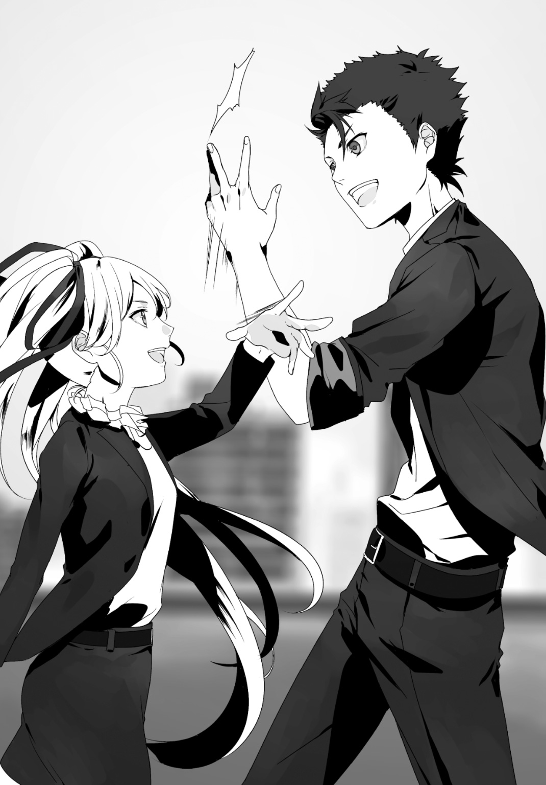
「大丈夫ですよ風雅さん。だって先輩ですから」
「そうだな」
「はい!? あ......貴方たち」
「風雅。私はな、あの場で維刀が『自分一人でどうにか出来る状況だ』と過信しているようには思っていなかった。私を戦力としてちゃんとカウントしていたんだよ、コイツはな。私も同様、先の戦闘でそれを理解していた。相棒というのはそういうモノだろ」
「そ、そんな......！」
風雅さんの呆れ顔は、もはや諦め顔に近いものになっていた。
まぁ、仕方がないか。傍から見れば俺と先輩の指した一手は、薄氷の上に成り立っていたと映るだろう。だが俺はたとえ自分の銃撃が通用しなくとも、先輩という「確定的な追撃」が存在していると信じていた。そして、それが機能すると疑わなかった。
先輩と組んで一年以上だが、確かに俺と彼女にしか不可能な戦術だったかもしれない。
「......凄いコンビですね。お二人は」
「は？」
「私は臥人さんと一ヶ月間、上手くやってきたという自負がありました。それこそイリナさんよりも。でも、今の貴方とイリナさんのコンビネーションには、言葉すら必要としていなかった。打ち合わせも無しであんな事が出来るだなんて......」
「め、珍しくしおらしいじゃないか。悪い物でも食べたか？」
「負けですね。私の完敗です。......ふふっ」
剝き出しの長い脚を伸ばして、ゆっくりと立ち上がりながら。
風雅さんはそう宣言し、俺と先輩へと諦観が含まれる笑みを披露する。
俺は......予期せぬ鼓動の高鳴りを覚えてしまった。
その表情がひどく晴れやかに見えたからだ。これまでの彼女が湛えていた「何か含みのある邪悪な笑み」とは別種である、爽快感すら感じ取れるほど屈託のない笑みに。
今まで俺は彼女に対して「なんかエロい人だな」という印象を持っていた。
今では風雅さんの印象は「かわいい人なんだな」というイメージに書き換えられている。
......な、何だ。この感情は。
どうにも風雅さんの無邪気さに心が惑ってしまう。これ以上ヘンな感情に支配されるワケにはいかない。俺は首を振り、先輩に「事後処理」の提案をする事にした。
「先輩、生島はどうします？」
「んん？ とりあえずは放置して外に向かおうか。しばらく目を覚まさないだろ？」
「だ、大丈夫ですかね......」
「じゃあ私だけがビルの外に出て応援を呼んで来ようか。私が居ないからって風雅にヘンな真似をするなよー。したらお前にも手錠が掛かるぞー」
「しませんよ！」
「冗談だ。生島からミルドレッドだけは離しておけよ」
ちっとも面白くもない冗談を放ち、先輩は屋上の昇降口へと一人向かった。
残された俺と風雅さんは互いに顔を見合わせ、苦笑いを交わす。
そして足元のミルドレッドを移動しようかと見下ろしていると、先輩が階下に向けて姿を消すか消さないか、というタイミングになった。
その時だ。
「いやぁー面白い！ こんな無茶苦茶な戦術、よく通用したね！」
「ッ！」
突然響いたその声に弾かれるように。
俺は懐から銃を抜き、身体の向きを反転させた。
声が聞こえたのがその方向だったからだ。――だが、声の発生源に人影は無かった。
幻聴を疑い隣の風雅さんへと目をやると、彼女も謎の声を耳にしたらしい。この屋上の周囲をキョロキョロと窺っていた。
「あははっ、どこ見てんの！ ココだって！」
――ゾッとした。
身体が硬直している、そんな錯覚さえ抱いた。
俺の背後に聞こえた声が方向転換した今、またしても俺の背後から響いてきたのだから。
信じがたい現象に意識を乱しつつ、俺はゆっくりと振り返った。
「や。元気してたかい？」
立っていたのは男。
飄々とした雰囲気を纏い、その中性的な面持ちでこちらを嘲笑っている。
俺はこの男に見覚えがあった。
『Ｊ』――今回の事件が始まる直前、夜の秋葉原で遭遇したあの男だ。
彼は薄ら寒い微笑を崩さず、軽やかにその口を開く。
「お久しぶり、『Ｊ』です。好きな死神は吉良イヅルです」
「......お久しぶり、維刀臥人です。好きな死神は更木剣八です」
「え、えーっと......初めまして？ 迅早下風雅です。好きな死神は......誰だろ。砕蜂？」
「何を言っているんだ？ 維刀も風雅も。吉良？ 赤穂浪士の話か......？」
ノリで言ってる風雅さん、遠くでようやくこちらに気付いた先輩。どちらも突然の闖入者を警戒しつつも彼の雰囲気に呑まれ、俺に続いて場違いな突っ込みを展開している。
だが、こんな状況でも、俺の意識は完全に別の所に在った。
――後ろを取られた。いとも簡単に。
――そして再度、背後に回られた。
この俺が、都合二度もその姿を捉えられなかった事になる。
追加のマガジンに換装しつつ、俺は『Ｊ』に銃口を向け続ける。
「......風雅さん。この男がいつの間に屋上に現れたのか、気付きましたか」
「い、いいえ。まるで分らなかったです。声を追っても姿が見えなかったので......」
先輩へ視線だけを送ると――頷いた。風雅さんと同様という事だろう。
一体どんな手を使ったのだろうか。しかし、今はそんな事に構っている状況ではない。
何故なら。この男は今、右手に特殊消音ピストルのＶＰ９を握っているのだから。
それがいつ向けられるのかと警戒を緩められなかった。その銃を持っている理由は何なのか。
一つだけ分かるのは......「間違いなくこの男は俺たちと敵対する気だ」という事だけだ。
「何の、用だ」
ようやく絞り出した俺の声に、相手は一層妖しい笑顔を作った。
「......いやさぁ。実は序盤からキミの戦闘を見ていたんだけどさ。残念で」
「残念？」
「うん。――ねぇ、それで本気なの？」
小馬鹿にするような口調だった。だが怒りは沸かない。焦燥のみが湧き上がってくる。
「僕はさ、キミ一人でどうあの難局を打開するのか、って期待してたんだ。してたんだけどさ......ガッカリだ。ガッカリだよ。まさか女子の手を借りてあの筋肉ダルマを倒すなんてさぁ。酷いモンだよホント。頭を撃ち抜けば済む話なのに」
「殺す訳にはいかないだろ」
「殺せばいいじゃない」
「ふざけるな。そんなつもりは元より無いんだよ、こっちにはな」
「うーん。じゃあどうすれば敵を殺そうとするのかなぁ、......あ、いい事思いついた！」
どこかズレたやり取りの末。突然『Ｊ』の取った行動に、俺は反応が遅れた。
余りにも異常で異様で、突飛でありつつも極めて自然な動作だったから。
『Ｊ』は、――自身の背後にいる先輩へと銃口を向けた。
「お仲間を殺せば本気になるよね？」
「な」
「仕方がないよ。だってそこまでやらなきゃ駄目なんでしょキミ？」
「お、おい」
「うんそうだ！ それがいい、そうしよう！」
ムカつく笑顔のまま、『Ｊ』は固まった先輩へと照準を合わせている。
瞬時に確信した。この男は――本気で先輩を殺すつもりだ。
「ま......待て！」
気付けば俺は引き金を引いていた。
照準は奴の肩口に合わせていた。が、俺の弾丸は虚空を貫くだけに留まる。撃った場所から『Ｊ』が消え失せていたのだから。
揺らめく硝煙の向こう。先輩が無傷である姿を確認し、後ろを振り向くと。
「残念。ホントの狙いは『こっち』なんだよね」
カシュ、ッ。
その特殊な銃身が後退する金属音だけが鳴った。『Ｊ』がＶＰ９を撃ったのだ。彼はその円筒形を、床に対し垂直に向けていた。
熱すら感じられないその銃口の先に在るのは――生島の頭部。
倒れたままだった生島は小さく痙攣した。そして頭部に穿たれた銃創からささやかに血液を噴き出し、その動作の一切を......否、生命活動の一切を停止した。
殺したのだ。『Ｊ』が、無抵抗の生島を。
殺した。殺してしまった。
俺が油断したせいで。
「――ッ！」
言いようのない怒りに任せ、俺は『Ｊ』に銃撃と共に飛び掛かった。
至近距離だ、外すなど考えられない。だがこの男はまるで俺の思考が読み取れるかのように銃口の先から逃れ、俺の弾丸その全てを回避した。
追撃。俺は銃撃を停止、代わりに蹴りを放つ。
ガッ、と手ごたえを得た。――が、それは間違いだった事にすぐ気付く。
『Ｊ』はそのまま俺の脚を絡め捕り、右手の銃を叩き落とし、首元にもう片方の手を置き、その長い脚を俺の足元に引っかけ、浮遊感を得て――。
結果。俺はコンクリートの床に叩き付けられた。
「かは、ッ！」
「臥人さんっ！」
「維刀！」
二人の悲鳴が上に聞こえる。俺は仰向けに倒されていた。
視界を覆うのは暗幕のような夜空ではない。底の見えない『Ｊ』の笑顔だ。
いうなれば今の俺は「壁ドン」ならぬ「床ドン」状態でこの男に組み敷かれている。
中性的な妖しい容貌が、得体の知れぬ笑みに彩られていた。
「あのさ。ひとつ質問してもいいかい？ ......君、僕をナメてんの？」
答えられない。
「冗談でしょ？ こんなレベルの雑魚だなんて。話と違うよ」
答えられない。
「今僕がこの銃を撃てば、君は死ぬんだよ？ ちゃんと分かってるのかな？」
答えられない。思考が正常に稼働していない。が、そんな状況でも確かな事実があった。
この男は俺など優に超える実力を持っている。そしてまだその一端しか披露していない事も。
信じることが出来なかった。この状況が。
俺を赤子のように扱い、底の見えぬ戦闘力を持つ者がいたという事実が。
「......ハァ。期待って裏切られると失望に変わっちゃうんだね。ここ最近で一番ガッカリし、......――うぉ、っと」
突然の銃声。
それと共に突然言葉を切り、俺から身を離す『Ｊ』。原因は何だ、と視線だけを銃声の元に向けると、先輩がファーレンハイト９９９９を構えていた。
「維刀から......離れろっ！」
「おおっ！ この状況でよく動けたね、奏手イリナ捜査官？ 見上げた根性だ」
「銃を捨てて床に伏せろ！ 手は後ろに！」
「そういきり立たないでよー。......その度胸に免じてイイ事を教えてあげるから。『妹さんは元気だよ』」
「......え？」
口を開いたまま、突然硬直してしまった先輩。
『Ｊ』は彼女から視線を外し、床に倒れ込んでいる俺を見下している。
「ま、とにかく頑張ってね、維刀くん。僕はずーっとキミを視てるから。この世界がどうしてこうなったか知りたいでしょ？ でも今のキミにはその資格が無い。早く僕に追いついてこないと駄目だよ。......じゃないと」
ぼそり、と一言呟かれた。
途端眼前に掌がかざされた。視界が真っ暗になり、その暗黒から解放されると。
――『Ｊ』の姿は消えていた。
「い、今の男......何者ですか、臥人さん？ 貴方を知っていましたけど......」
風雅さんの疑問には答えず、ゆっくりと床から身を起こす。
次いで周囲を見回して確認する。......この屋上に残されたのは俺、風雅さん、先輩。たった今もの言わぬ屍と成り果てた生島。そして、主を喪失したミルドレッドだけ。
落胆、混乱、憤怒。様々な感情を抑えつつ、俺は立ち上がった。
「......先輩。無事ですか」
「あ、ああ。うん。怪我は無い。気にするな。心配ないよ。大丈夫だ」
全然大丈夫ではない。目が据わっている。先輩の精神も混乱の只中に在るようだ。
――一体、あの男の目的は何だったのか。
生島の命だけが狙いだったのだろうか。
俺に対しての怒りはどういう背景があったのか。
何をどう考えても答えには至らない。考えても無駄だろう。
そう理解しているのに......頭から『Ｊ』という男の貌が消えない。
奴が「じゃないと」に続けて言い残していった言葉。それが俺の頭の中で何度も何度も反響し続けていたのだ。
「本当にキミ、僕に殺されちゃうよ？」と。
終．ホンキートンク・ガールズ
～Honkytonk Girls～
自分の日常を構成する、『場』。
それは人によって様々だと思う。
社会人ならば会社だろうし、スポーツ選手ならグラウンドや競技場なのだろうか。
そして......学生ならば勿論、学校だ。焚書課に勤務している身とはいえ、それは俺も例外ではない。この歳で警視庁が日常なんてのは勘弁してほしいし。
だが、そんな日常を作り出す「場」も、訪れる目的ひとつでこうも印象が違うのだろうか。いつもとはまるで気分が異なっていた。
「この時間はどちらにいらっしゃるのでしょうか」
俺の隣。早足で歩きながら黒服の美少女・風雅さんは問うた。
今、俺たちは廊下を歩いているのだが、風雅さんは上履きやスリッパに履き替えることもなかった。いつもの電撃制圧機能が搭載された靴のままだ。
ここは、俺と棗さんが通っている学校。
「二階の職員室でしょう。今は放課後、まだ帰っていないと思います」
「好都合です。どうせなら前もって拘束すべきでしたね」
「......何も、俺や風雅さんがわざわざ出張る必要は無いのに」
「そうはいきません。この事件は私たちの手でケリをつけなければ。――っと、ここですね」
足を止めた風雅さんにならう。
頭上には『職員室』と書かれた札が掛かっており、この部屋の用途が何なのかを声高に主張していた。
一切の躊躇いなく、風雅さんは職員室の扉を開け放った。
職員室内に残っている教師は十名程度。目的の人は......いた。
「突然失礼いたします！ 警視庁焚書課です！」
ザワッ、と室内が一瞬騒がしくなった。視線が俺たち二人に集中する。
だがやはり風雅さんは気にも留めていない。大股でありながら優雅さすら感じさせる足運びで室内中央をズンズンと歩いてゆく。事前に顔を知っているので、目的の人物がどこにいるのか既に見定めているのだろう。
カツン、カツン。学校には不釣り合いなヒール音が高らかと鳴る。
やがて――「カツン」。一際高く床を打ち鳴らして、風雅さんの歩行が停止した。
彼女の険しく鋭い視線は一人の教師に注がれている。
「な、......何だ？」
椅子を回してこちらを向いて。彼、――奥村由太は首を捻った。
「奥村先生ですね。警視庁文化保全部焚書課強襲特務室中級予備巡査、迅早下風雅です」
「同じく下級予備巡査、維刀臥人です」
「あ、いや。維刀の事はよく知っているが。何かあったのか？」
「奥村さん、貴方を逮捕します」
「は？」
「貴方には黙秘権があります。供述は法廷で貴方に不利な証拠として、......」
ミランダ警告。日本では別に義務化されてもいないソレを無意味に綴りながら、風雅さんは奥村へと敵対の視線を崩さずにいた。
「......維刀。一体これぁどういう事だァ？ ははは、何の冗談なんだよ！」
当の奥村は風雅さんを無視し、俺へと馴れ馴れしい態度で接してくる。
「先生を逃がさない為にまだ情報公開されていませんが、斗蛾山組は麻薬で摘発されました」
「っ！」
「奥村先生、もうネタはバレてます。正直に話してください」
「ネ、ネタ？ 何の？」
「先生が麻薬の売人だったんですよね」
周囲のざわめきが一際大きくなった。俺の後を引き継ぐように風雅さんが続ける。
「麻薬入りフィギュアには発信器が付けられていたのは無論ご存じですよね。......でも、これは知らなかったでしょう？ 斗蛾山組が発信器の追跡情報のログを保存していた事」
「っ!?」
「やはり知らないんですね。斗蛾山組って意外とマメみたいですよ。発信器の情報は『すべてこの学校で途切れていました』。貴方がフィギュアを持ち帰った末、解体したこの学校で」
奥村は突然大人しくなってしまった。
「構造上、発信器はフィギュアを解体しなくては取り出せません。取得したその場で機能停止させるなんて不可能ですからね。そしてこの学校で、警察からの証拠サンプル譲渡を担当している教員はただ一人......貴方です」
「......」
「あとは証拠として弱いんですが、名前。――『ヨシダ』。連中は売人をそう呼んでいたらしいですね。貴方の名前、何でしたっけ？」
「奥村、由太」
「名前の読みを変えたんですね。少しは捻ったらどうです。バレバレですよ？」
カツン、とカカトを軽く鳴らす風雅さん。いつ飛び掛かってきても大丈夫、という意識の表れなのだろう。
風雅さんの開陳が完了した今も、奥村は反論も同意もしない。
「生徒の間に麻薬を蔓延させるつもりでしたか？ 心底人間の屑ですね。こうして止める事が出来て本当に良かったです。若者に薬物が拡散される前で。――何か言い訳は？」
「......くくくっ」
含み笑い。余裕ぶっているようだが小物くささがどうにも隠せていない。
「意地でも認めないって感じですね」
「認めないな。言い逃れなどいくらでも出来る」
風雅さんは、奥村よりも数倍いやらしい笑みをその顔に浮かべた。
「ああそうですか。じゃあ嫌でも認めさせてあげます。......『それ』貸してください」
「！」
弾かれるような反応を見せる奥村。
風雅さんが指さしたのは、机の脇に置かれた段ボール。その中には肌色の物体が見え隠れしていた。中に入っているのはフィギュアで間違いないだろう。薬物入りの。
「こうやって学校を通じて麻薬入りフィギュアを受け取り、中身を取り出した後に販売していたんですねぇ。オタグッズがあっても不自然ではない場所、それは職員室。......よくもまぁ考えたモンです」
「ち、違う！」
「違う？ じゃあ早くそれ渡してくださいよ。壊しますから、今からここで全部」
「そ、それは」
「どうしたんです？ 渡せないんですか？ 違うんでしょう？」
「......分かったよ。ちょっと待ってくれ」
観念したようにそう言うと、奥村は「何故か」デスクの引出しに手を掛けた。
次いで、それを勢いよく引き開け、中へと手を伸ばし。
――ズダァンッ！ 騒がしい衝撃音が響いた。
風雅さんが、引出しの中へと及んだ奥村の手を踏みつけたのだ。
「が、......がっ！」
「この期に及んで抵抗しますか。もうこちらの目を盗んで何か出来るとか思わないでください。私、ナメられるの嫌いなんで」
「あ、が、が、が！」
ギリリ、ギリリ。風雅さんは靴の底にある奥村の手へと、一層の力を込めて踏みつけた。引出しの中に見えたのは黒い金属体......拳銃だ。
「それを私たちに向けて逃げるつもりでした？ 本当ナメてますね」
皮肉にも奥村は自分の首を絞めてしまった事になる。もうこれで言い逃れは一切出来ない。
風雅さんは「ドン」とひと蹴り。奥村を壁際へと追いやった。
そしてすぐに自身の美脚を振り上げて、壁を背にした奥村の胸部へと靴底をあてた。
「ぐアっ！」
「......一応、ご希望を聞いておきます。気絶して運ばれるのと、その口を閉じて連行される方。どちらをお望みですか？ 出来るならば『降伏してください』」
「し、知るか！」
「あっそうさようなら」
バジィイイイイイインッ！
一際強く奥村の胸部を踏みつけて、風雅さんはスタン・ヒールを起動。
機能発動時に生じた余剰電力が舞い躍る中、風雅さんはフットスタンプの姿勢で奥村へと出力過剰な電撃を叩き付けた。
奥村はもう口汚く罵る事もなかった。意識を失ってその場に崩れ落ちる。
「オタク文化を利用するなんて許しませんから。私の目の黒いうちは」
――終わりだ。これで。
今回の事件はこの男・奥村を捕まえてこそ終焉を迎えられる。正直、俺自身としても彼を許せそうになかったから気分が良い。規制社会の欠陥を利用して人の心に付け入るなんて、いちいち腹が立つヤツだ。
もう留まる理由は無い。俺は振り返り、職員室を出ていこうとした。
「......あれ、臥人さん？ どこに行くんですか？」
が。風雅さんの声に呼び止められる。
「どこ、って。署に戻ろうかと。何かありました？」
「え？ いや『何かありました』じゃなくて。この男を運んでくださいよ」
「お、俺が!?」
「もちろん。なに恰好つけてここから出て行こうとしてるんです？」
「......これでも俺、病み上がりなんですけど」
「男の子でしょ、それくらい我慢してください！ そこのフィギュアは私が持っていってあげますからっ！」
憮然と俺は身体の向きを変えた。そして「うんしょ」と段ボールを持ち上げる風雅さんを尻目に、壁際でくたばっている奥村の後ろ襟をむんずと摑んだ。もう面倒くさい。このまま引きずって連行してやる。
俺のやる気ゼロな態度を笑いつつ、風雅さんは抱えていた段ボールを脇に置いた。
「これで今回の事件は終了。ですね♪」
「はい。色々ありましたけど、みんなが無事でよかったです」
「......貴方には感謝してます臥人さん。臥人さんがいなければ私は今こうして生きていません。助けて頂いた事に感謝します」
「本来はもっとスマートにキメられる予定だったんですけどね。......手錠かけられたせいでボロボロになっちゃったから。『誰かさんのせいで』」
「はい？」
「何でもないですよ。さっさと署に戻りましょう」
誤魔化して、俺は奥村を引きずりながら風雅さんの脇を通過しようとする。
が――その進行が止められた。すれ違いざま、風雅さんが俺の腹部に「ドン」と軽く膝蹴りを入れてきたからだ。
「な、何すんですか風雅さん!?」
行為の意図が読めずに戸惑う俺。蹴りのせいで若干前屈みとなっていると、風雅さんは......その顔を接近させてきた。
「お礼が、――まだでしたよね？」
首筋から優しい芳香が漂う。パサリとその髪が揺れる。
そして次の瞬間、彼女は。
その唇で俺の頰へと触れた。
「――ありがとうございました。助けてくれて」
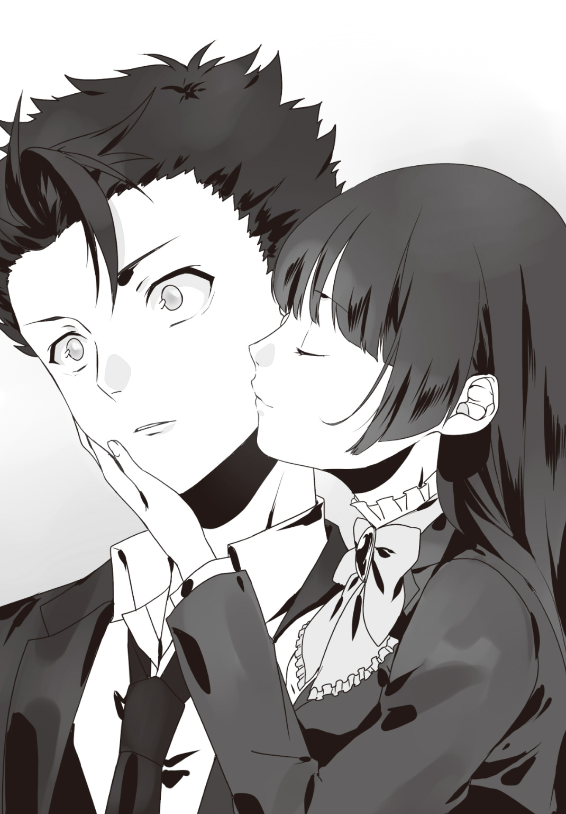
......。
ドサッ。何の音だろう。俺が手元の奥村を離してしまった音だろうか。
風雅さんは「ふふふっ」と爽やかに微笑。やがて俺に背を向けて、タタタッと小走りにこの職員室を出て行った。硬直している俺を置き去りにして。
少しして――俺はようやくフリーズ状態から回復した。
「......どうなんだろ。よりによって職員室でほっぺにチュー、とか......」
呟いて、ぐるりと周囲を確認する。この職員室に居た教諭は総じてこちらへと視線を向けていた。ある教師はニタニタニタニタ粘着質に笑い、ある教師は「ひゅーひゅー！」と囃し立てている。近くにいた教師に至っては俺を肘でド突いてきた。ノリいい人達だなぁ。
......つーかさ。アンタら、そんなんだから麻薬売買してる同僚を見過ごしたんじゃねーの？
しょーもない苦悩に身を任せ。俺は足元の犯罪者の襟首を再度、引っ摑んだ。
組んでいた手を、解放する。
次いで瞳を解放した。
視界に飛び込んでくるのは白色の長方形。――洋式の墓石だ。
今は正午すぎ。私は都内の墓所へと足を運んでいた。
ジーッ、ジーッと、周囲は止むことを知らぬひぐらしの喧噪。真昼の日差しはしつこく鬱陶しく、上方から遍くすべての生物に降り注いでいた。
洋式のため線香を捧げる事もない。目につくのは左右対称に供えられた献花程度だ。そのひとつに蜂が潜り込んでは、蜜の不在を理解して飛び立ってゆく。
その蜂が飛び去った先を目で追うと......よく見た顔を視界に捉えた。
「イリナさん」
「......風雅か」
ゆっくりと。奏手イリナさんはこちらへ――否、この墓石へと歩み寄ってきた。
私は彼女から視線を自分の前へ戻す。洋式のため、墓碑銘はアルファベットで刻まれていた。
「Millia Kanade」と。
「......時々、妹の墓に花を供えてくれていたのはお前だったんだな。風雅」
「やめてください。『ごん、おまえだったのか。いつも栗をくれたのは』みたいな言い方」
私はミリアさんの墓を見続けながら言葉を続ける。
「彼女とは仲が良かったですから。......自分の妹のように、思っていました」
――奏手ミリア。イリナさんの妹。
私は幼少の頃、ミリアちゃんと交友があった。同じバレエの教室に通っていた為だ。イリナさんが海外の講演で留守の際などは、私がよく彼女の面倒を見た。
そう。彼女にとってはもちろん、私にとってもミリアちゃんは妹だった。
だからこそ、ミリアちゃんを守れなかった本当の姉が許せなかったのだ。......昨日までは。
今もこうしているだけで、すぐに思い浮かぶ。あの屈託のない笑顔。丘の風のように駆け抜ける姿。咲き誇る花すら霞む舞踏――。
「......私が焚書課に入った理由なんですが」
「私に勝つため、だろう？」
「それは一つ目。もう一つはミリアちゃんの死の原因を探るためです」
そう告げた瞬間、イリナさんの表情が険しさを増した。
「あの『金曜の模倣者事件』は今も多くの点が明らかにされていません。......私は、彼女がどうして殺されなければならなかったのか、それが知りたかったんですよ。警察組織に入り込めば何か分かるんじゃないか。そう思って」
「言うまでも無いだろう。原因はオタクの快楽殺人だよ」
「本当にそう信じているんですか、イリナさんは」
彼女は黙したまま私を見据える。その眼差しには息苦しさがあった。
気付いているのだろう。あの事件のおかしさに。
犯人は十七歳。どうあがいても死刑にならない年齢だ。故に彼はこれからも生き続けるのだろう。――だが、事件から三年もの月日が経った今でも、彼は何一つとして要領を得た証言をしていないのだ。いくら猟奇殺人者とはいえ「発言ひとつ参考にならない」なんて状況が有り得るのだろうか？
加えて手に掛けられた少女たち。彼女たちの生命を十三人も失う間、なぜ誰もそれを止められなかった？ 普通ならば十三人も殺す前にどこかで尻尾を摑めていたハズだろう。いくら何でも十三人という人数は納得が出来ない。
つまり。私も、そして恐らくイリナさんも疑っているのだ。「あの事件には何らかの作為があったのではないか」と。「彼女たちには何か共通点があったのではないか」と。だからこそ私は焚書課に入った。この年齢で警察組織に潜り込めるのは焚書課の若年捜査官だけだから。
そして......あの廃墟ビル屋上で遭遇した男の言葉もある。
『妹さんは元気だよ』。
あの言葉が真実ならば、ミリアちゃんは――。
......いや、止そう。「有り得ない」。イリナさんだってそう理解しているハズだ。
それに下手な希望は持たないほうがいい。少なくとも、今は。
「でも、私の一つ目の目標......今回もダメでしたね」
「私に勝つと大見得切った件か？ ――ああ、全然ダメだ。オマエは生島に捕えられ、あろう事か人質にされてしまったんだからな。ヘタをすれば焚書課存続の危機だった」
「この件が公表されていないのがせめてもの救いですね」
「随分と殊勝じゃないか。どうせまた私に挑んでくるつもりのクセに」
「いいえ。もう終わりです。イリナさんに勝つとか負けるとか、止めにします」
「何？」
言い捨てて、私はイリナさんとは逆方向へと前進を開始した。
「お、おい風雅！ 止めにするって......どういう事だ！ 焚書課を辞めるって事か!?」
答えない。もう心は決まっていた。
そう......強いて答えるのならば、こうだ。
「――私、新しい目標が出来ましたので！」
この時、私はどんな笑顔をしていたのだろうか。
今はそんなどうしようもない事が気になってしまう程、晴れやかな気分だった。
「祝！ 私と維刀のコンビ再結成にっ！ 乾杯いいいいいイイイィィッ！」
「......」「......」「......」
しーん。
俺も藍も偶然来店していた棗さんも。誰一人として先輩の音頭に同調しない。
だが彼女は歯牙にも掛けず、呆然とドリンクを持つ俺達へ次々と自身のグラスを当ててゆく。もはや一人乾杯のように。余りに力が強すぎて俺のグラスにはヒビが入った。
「いやぁー維刀！ めでたいよな！ そう思うだろう!?」
「は、はぁ......」
「これで晴れて私とお前は正式なコンビだな！ モトサヤというヤツだ！ もう風雅に邪魔される事も無い！ 嬉しいな維刀！ 嬉しいよな!? な！ な！ なっ！」
う、ウッゼえ......！ 初めてだ！ 先輩をここまで「ウゼえ」と思ってしまったのは！
棗さんは苦笑ひとつ、俺たちを愉快そうに眺めながらレモネードを口に運んだ。そんな彼女の正面ではメイド服の店員さんが酷く荒ぶっている。
「だぁー、かぁー、らァあああああアアア！ 何でコイツがウチの店に来るんだよ！」
「藍。また店を破壊されるんじゃないかー、とか思ってる？」
「当たり前だろうが！ テメェも後輩なら何か対策考えろよ！ リング造るのは却下だぞ！」
「トマティーナでも開催すれば？ 店も壊れないし負傷者も出ない。いいこと尽くめだ」
「ほーん。後片付けはテメェがやるんだろうな？」
メイドさんは無表情で指を立てた。右手と左手、両方の中指を。
嫌になった俺は後ろを眺める。――客は居る、大勢。居るのだが誰も彼もどこか所在なさげにビクビクしてこちらを窺っていた。先輩のせいだ。
いつものように彼女の姿を確認したオタ連中は、一斉に店を出ようとした。だが「今日は私の奢りだ！ 全員付き合え！」という先輩の半ば強引なお誘いに逆らえず、この店で旨くもないタダ酒を嗜んでいたのだった。その結果、「この店で楽しそうなのは先輩ただ一人」という異様な状況が生まれていた。
このテンションは何なんだ。そんなに風雅さんを取り除けたのが嬉しいのだろうか......？
「あ、そういえば維刀くん。斗蛾山組はどうなったの？」
私服姿の棗さんの問い。意識がカウンター側へと引き戻される。
「奴らは焚書課の管轄を離れました。組織犯罪対策部と厚生労働省の合同捜査になってます」
「そっか。確か麻薬取締って厚生労働省の管轄だったわね」
「フィギュアを使った麻薬ルートはほぼ壊滅に近い状態です。押収した薬物は末端価格で約五億にもなったとか。『おそらく斗蛾山組は解散するだろう』というのが大方の見解ですね」
「全ては在るべき形に、か。......それにしても凄いわ。あなたたちが暴力団ひとつを潰したようなものよ」
「凄いだろう!? 私と維刀の功績だ！ 失敗も全てこれで帳消しなんだぞ！」
「え、ええ。そうなのね」
「そうだ！ これも二人のコンビが......あっ店員、甘味を持ってきてくれ！ 山ほどな！」
「おぉいいぞーチビ。砂糖１ｋｇでいいか？」
「砂糖単体１キロか！ 面白いヤツだなぁお前は！ あはははははっ！」
豪快に笑い続ける先輩を余所に、俺の意識は沈んでいた。
原因は諸々ある。だが、最大の原因は「今回の事件には裏がある」という点だ。
そうだ。『先輩は証拠を壊す』という事、それに『復帰する』という情報。この二つは内部の人間でなければ知り得ない情報だった。
恐らく......警察に内通者がいる。そしてそれは、未だ明らかにされていない。
――加えて『Ｊ』。あいつの目的は一体何なのか。俺に何の役割を与えたいのか。
そして。何故、生島を殺したのか。
ヤツは確かに人の命を奪って生きてきた。今回の事件にしても倉庫の管理人を殺害している。だが、完全に無抵抗だった生島を殺す必要なんて無かったハズだ。
「......生島の事を気にしているのか」
先刻までの超絶ハイテンションはどこへやら。つとめて冷静な落ち着いた声で、先輩が俺の心中を察したように問うた。
「維刀。あの男は殺戮者だ」
「分かってますよ。でも人殺しだからってあんな最期、アリですか？」
「あっていいワケがない。だが『殺せば殺される』のは生島も理解していただろうさ」
「しかし......！」
「ならば放っておいていいと？ ヤツを野放しにすれば確実に犠牲者が増えていた。私たちはそれを止めたんだ。誇るべきではないのか」
言って、先輩は少しも面白くなさそうに自嘲した。
「分かってるよ。でもそう思わなければ......やっていられない」
ズズズ、と。彼女がメロンフロートを啜る音が鳴る。先輩とて納得していないのだ。
釈然としない思いだった。奴が死んだ事で闇へと消えた事実も多く存在するのだから。だが、こうしてグチグチと反芻したところで何の解決にもならない事も分かっている。
もう考えるのはやめよう。少なくとも、今日だけは。
「......そうですね、先輩。とにかく今日は先輩とのコンビ再結成を喜ぶべきですよね」
「お、おおっ！ そうだぞ維刀！ 今しがた店員に甘味を注文したんだからな、お前も一緒にどうだ!?」
「ん......たまにはいいかも知れませんね。頂きますよ」
「珍しい！ いやいいぞいいぞ、甘い物を食べればお前も私のように早く出世できるかもな！ あはははははははははは！」
「なーにを浮かれているんですか、イリナさぁァん」
「は......？」
先輩の笑い声が停止した。
その原因は明らかだ。店の入り口側から聞こえた声のせい。俺も先輩も棗さんも、奥で嫌々スイーツをこしらえていた藍ですら。その声の方向を一瞬にして振り返っていた。
立っていたのは予想どおりの人物。――迅早下風雅さん。
「どもー♪ ......あらら、今日は結構お客さんが入ってますねー！」
カツカツカツ、と無遠慮な歩行のまま風雅さんはこちらへと進んでくる。そして俺の隣に座る棗さんを「強引」にどけると俺に挨拶ひとつ、すぐにスツールへと腰かけた。
晴れて、またしても俺は先輩と風雅さんに挟まれる形となった。
「......何の用だ、風雅」
「んー？ 私が来たらいけませんかぁ？」
「い、いや......だってお前さ、『もうイリナさんに勝ったとか負けたとか止めますぅ』とか言ってなかったか？」
「それはそれ、これはこれ」
「ほう。......じゃあ喧嘩を売りにきたのか？ ん？」
「違います。『イリナさんに勝つ』以外に新たな目標が出来ましたので、そのご報告に」
ドン！ と風雅さんは意味も無くカウンターテーブルを拳で叩いた。
「――『臥人さんと組む』。それが私の、新たな目標です！」
はた迷惑で挑戦的な宣言。
先輩はしばし彼女を睨むと嘆息し――「くくくっ」。低く笑った。
あぁ。まーた喧嘩が始まる......。俺は諦め気味に髪をかきあげる。しかしながら予想に反し、先輩は風雅さんに笑みを向けるだけに留まっていた。
「ふん。......風雅、別にいいんだぞぉ？ 今日だけは何を言っても。何せコンビを再結成した記念すべき一日なんだからなぁ」
「珍しい。腹が立つくらい余裕ですねぇ。いつまでもその余裕が続けばいいですけど？」
「続くさ。えーっとコンビ強奪が目標だったか？ これからも頑張れよぉ？」
......何か、気持ち悪い。風雅さんの口調が先輩に伝染っている。
棗さんはそんな彼女たちを引き気味に眺めていた。
「仲がいいのね、二人とも」
「棗さんには良いように見えるんですか。同僚としてはマジで心底迷惑してるんですけど」
「ま、まぁあなたは確かにね。藍さんはもっとでしょうけど」
「全くですよ椰子さんっ！ ......おいガット！ いつからここは焚書課のアフターファイブを提供する小粋なバーに新装開店したんだ？ アタシは許可した覚えねーぞコラ！」
「知らないよ。つーか俺に言うなよ......」
俺は焚書課女子二名の冷戦を、苺ミルクを口に含みつつ眺める他ない。
「というか、私の間違いだったんですよぉ。勝ちとか負けとか、年下相手に大人げないなぁ、って反省しきりでぇ！」
「ほう、今まで全く気付かなかったのか？ 心底幸せな人生だったんだなぁ」
「まったくです。......まぁ、貴女に負け続けた人生でしたが、一番重要な局面では勝つことが出来ましたし？ 私としては納得ずくなんですよねぇ」
「ん？ 何かで私に勝てたと？ 夢か？ 妄想か？ 寝言か？ 幻覚か？」
「紛う事なき現実ですよ。......――これを見てください」
そう言うと風雅さんは自身のスマートフォンを取り出し、指で操作。画面を先輩に見せつける。途端――先輩の表情が凍りついた。
「こ、......これ」
「はい♪ 臥人さんにチューしちゃいましたぁ！」
「あががががガガガガガガガッ!?」
瞬きすら忘れ、気付けば俺は先輩が手にしているスマートフォンを奪い取っていた。
表示されているのは俺の顔、そしてその頰に唇を合わせる風雅さんの顔。どうやらあの瞬間、彼女は片方の手で隠し撮りしていたらしい。
......やられた。これが目的だったのだ！ 先輩へ一矢報いるのが！
俺はツインテールの夜叉に襟首を摑まれブンブンと前後に揺すられていた。
「噓だろ!? 噓だよなぁ維刀っ!?」
「は、はい！」
「噓なんだな!?」
「はい！」
「噓だよな!?」
「はい！」
「......噓ついてるだろ？」
「......はい。しかし『そこに俺の自由意思は存在しなかった』、それだけは確かです」
「む、無理やり!? 無理やりだと!? ......ふ、風雅！ きっさまああああああッ！」
絶叫し、銃を懐から引き抜く先輩。
「何ですッッ！」
カカトを叩き付け、電撃機能を起動する風雅さん。
嗚呼......また始まる。戦争が。
――と思ったが、突然丸太のように太い腕が降り注いだ。むんずと首の後ろを摑まれる二人の少女。騒ぎを聞きつけ、店の奥から藍の親父さんであるマスターが出てきたのだ。
「外でやれ。お嬢さん方」
先輩と風雅さんは顔を見合わせて――頷いた。
そしてマスターの拘束から解放されると店の出口に身体を向け、そちらへと駆け出した。いつも通り出口からはいやらしい音が「くぱぁ」......とは鳴らなかった。二人ともヒョイとスィング・ドアを飛び越えて、外の通りへと出て行ったからだ。
......いいな、アレ。この店を出る際に義務化すればいいのに。
やがて二人は、秋葉原の中央通り方面へと姿を消した。藍がニタニタ笑っている。
「知ってるガット？ 『不倫された旦那は妻を責めるが、不倫された妻は相手の女を責める』らしいって」
「ふーん。今の場合、どっちが妻でどっちが不倫相手なんだろうね」
席ひとつ空けて隣では棗さんが他人事のように、
「追わなくていいの？」
と問うてくる。いや実際他人事だけど。
「追えよガット。オマエ以外に誰があのアホンダラどもを止めるんだよ」
藍が他人事のように命じてくる。いやもう店にいないから実際他人事だけど。
「臥人。『裏のお前』の役目は、秋葉原の平和を守ることじゃないのか」
マスターまで他人事だよ。
「あぁもう......分かりました！ 分かりましたよっ！」
考える事、それ自体がもう面倒くさくなってしまった。俺はスツールから乱暴に立ち上がり、笑って手を振る棗さんに苦笑して店を出ようとした。
「あ、そうだ藍。言い忘れたことがあったんだ」
俺の言葉に「ん？」と反応する藍。
「何だよ」
「いや、今回無事に帰ってきたからさ。帰還の言葉をな。――『ただいま』」
藍はしばし呆然。やがて気恥ずかしそうな表情を作って、ぷいと背を向けてしまった。
「――『おかえり』」
その返答へと手を振って応え、俺は出口へと向かった。
そして先刻の二人のようにスィング・ドアを飛び越える。やはりムカつく音は響かなかった。これからシリアスなシーンを演出する際はこうしたい所だが......そもそも「扉をジャンプして出ていく」事自体が調子こいてる感じで好きじゃないんだよなぁ。
外の道に降り立つ俺。右手には先輩と風雅さんが今にも戦闘を開始しようといった風情で対立しているのが目に入った。
「さて......どうやって止めますかね」
スカした台詞を吐いてそちらへと向かう。
周囲に被害が出ないように――。唯々、それだけを願いながら。
Ｅｘ．ジ・エンハンサー
～The Enhancer～
「維刀くんさぁ、全然ダメだよ。アレじゃ」
第一声がそれ。彼は心底残念そうに、私へと「報告」した。
たった一言で彼を否定してしまうとは。この報告は私を落胆させるには十分すぎた。
「物足りない、そういう事ですか」
「それ以前の問題。あんなヤクザ一人を単独で攻略できないなんて。挙句女の子の手を借りたんだよ彼？ しかも敵の命を奪おうとしないし？」
「彼はそういう概念に甘いですから」
「だからこそ僕が生島の口を封じておいたんだよ。依頼と並行して教育も兼ねて、さ」
ここは私の自宅、その一室に設えられた応接室。
無駄に広大な室内の中央には机が置かれ、それを四方から囲むように椅子が並んでいた。その一つに私、向かいに彼。私はともかくとして、中性的で人の目を引く彼がこの部屋に存在するという事実が殺風景な室内に華やかさを添えているように感じてしまう。
彼、『Ｊ』は足を組んだまま、底の知れぬ笑顔をその整った顔に張り付けていた。
「というか、あのヤクザも大したこと無かったよね」
「彼は兄のように戦略的頭脳で秀でているワケでもなければ、些々神のように機転が利く男でもありません。......まぁ、所詮は『戻り弾』。放たれた弾丸に思考など出来ませんから」
「酷い評価だねぇ。まるで生島が使い捨ての鉄砲玉だったみたいな言い様だよ、ソレ」
「ええ、その通りですよ？ 彼は捨て駒です」
「......やれやれ」
外国人らしく両手を広げて『Ｊ』は呆れの感情を表現した。
生島には悪いが、彼はただの「障害」でしかなかった。これからのシナリオにしゃしゃり出て来られたら困るのだ。だからご退場願ったに他ならない。それに結果として麻薬密売のルートが壊滅したのだから、良しとすべきだろう。
「それで？ わざわざ僕を呼んでどうしたの？」
「維刀臥人の評価をあなたの口から直接伺いたかったのです」
「それはもう報告したじゃない。『全然ダメだ』って」
「紋切型は止してください。......しかしながら、彼の弾丸を扱う技術に関しては並々ならぬものを感じませんでしたか？ 跳弾させて我が手の如く操るだなんて」
「アレは怖いかもねー。でもねぇ椰子ちゃん。あんな技、僕ならちょっと訓練すれば完コピできるよ？ まぁやらないけどね。僕、維刀くんと違って曲芸師じゃないしさ」
「随分と余裕ですね。ジェームズ・ボンドさん」
「あ、それ僕がテムズハウスに居た時の名前だ。かなりウケたんだよ？」
「あまりに彼を過小評価しすぎなのではないですか？ ジム・フェルプスさん」
「それは『ブレンド・ウッズの遺産』を回収した頃かな。ＩＭＦだけにとんちが利いてるでしょ。アンジーのお父さんも素敵だけどグレーブスの方が好きだな、僕は」
「ジェイソン・ボーンさん、質問に答えてください」
「その名前はアメリカの時か。かなりの人数を殺したね。その名前の人と同じように」
「またはぐらかすんですか。ジャック・ライアンさん」
「戦略アナリストだった頃。一番退屈な仕事だった」
「答える気ないでしょう？ ジャッカルさん？」
「フランスね。暗殺仕事で罠に掛けられて誤解解くのに苦労したよ」
「......はぁあ」
マトモに返ってこない問答に疲れ、長く嘆息する私。むしろ私自身がこの流れを楽しんでいるような錯覚に陥ってしまう。
『Ｊ』は今まで「フィクション作品のスパイの名前を使って各機関で活動してきた」という経歴があるのだ。余りに幼稚で馬鹿みたいなお遊戯――。だが「職務を確実に遂げるエージェント」にのみ許される『お遊び』みたいな物なのだろうと思う。
紛う事なき世界最強の個人戦力。それが彼『Ｊ』なのだから。
尚、一連の偽名の話は彼自身の口から伝えられたものだ。どれが本当の名前なのか。そもそも今の羅列に答えがあるのかすら、私は知らない。
「そして今回は『Ｊ』。次は何です？ 宇宙人でも監視するつもりですか？」
「ははっ、イイねソレ！ じゃあ君『エージェントＹ』として手伝ってよ！」
「......あの。お願いですから少しは会話する努力をしてくれませんか？」
「仕方ないよ。誰も彼も、僕にとっては見下さざるを得ない存在なんだから。嫌ならキミも少しは路傍の石から抜け出す努力をすべきじゃない？」
「そちらこそ少しは協力してください。......彼を実戦で鍛える方針を打ち出すとか」
「――まぁ、でも確かにね」
フッ、と。その表情から一瞬にして能面の如き笑顔が失せた。
私の背筋を針金が通ってゆくような鋭い感覚を得る。
「今のままじゃ彼は間違いなく、この僕に殺される。まぁキミが彼を相手に選んだのは分かるんだ。表は捜査官、その本性は規制を叩き潰そうとする反徒なんだから」
「......」
「でも、肝心な部分が抜け落ちているよ。彼の戦闘力じゃ僕と釣り合わない。キミの提案どおり『鍛えてあげる』べきかもね。多くのモノを失わせながら、奪いながらさ。......――ま、伸びしろに期待かな」
言い返す言葉が見つからない。すべて事実だから。
維刀臥人が『Ｊ』に敵わないのは動かしがたい現実だ。
彼の戦闘力、分析力、統率力、......その全てで彼は『Ｊ』に劣っている。後れを取っている。彼の予告はこの上ない「未来における真実」であろう。
維刀臥人は『Ｊ』に殺される。今のままでは。
策を練る必要がある。彼を今以上に育てる、何かが。
考え込む私を見て何を思ったか、『Ｊ』はいつもの笑顔を私に見せていた。
「頼んだよ。しっかり彼を育ててあげてねー？」
神妙な意識と共に私は頷く。それ以外に何が出来よう。
やおら席を立つ私。思考を整理するため、お茶でも淹れようと思ったのだ。
......が。ふと後方の彼の席を振り向くと、そこにはもう誰もいなかった。
「本当、神出鬼没な人ですね」
この部屋にはもう私以外に誰もいない。故に私の言葉は自然独り言となってしまうのだった。
あ と が き
４ヶ月ぶりのご無沙汰です。朝倉です。
どうにか二巻を出す事が出来ました。この度も本作をお手に取って頂きまして感謝の限りです。一巻以上にお楽しみ頂けましたのならば何よりの幸いであります。
今回は「キャラ重視な一時間の刑事ドラマ」といった雰囲気に仕上げました。
前巻は「世界観重視な二時間のアクション映画」のようなノリでしょうか。
一巻のあとがきにて「次巻の準備してます」とか書きましたが......実は、あの当時の内容とは完全な別物になっております。一巻よりも派手な展開と設定で進行していたのですが、原稿を半分以上書いてから「二巻の内容っぽくない」という事で晴れて全ボツ。新規の原稿をイチから書くことに相成りました。ひいいいいいいいいいいいいいいッ！
という訳で世界観重視は抑えて軽い感じに書き上げています。難しいですね、二巻って。
......さて。最近、一つ気になることがあります。
他の作家先生方は、担当さんとの打ち合わせで登場人物をどう呼称しているのでしょう？ 普通に名前を口にしつつ「ここは○○が出てきて～」といった感じなのでしょうか。
私はそういうのが妙に気恥ずかしくて、本作のタイトルどころか自分のペンネームすら容易には言えない人間だったりします。キャラの名前を口にするなどはもっての他。臥人を「主人公」、イリナを「ヒロイン」、椰子を「赤い人」、藍を「幼なじみ」と呼称し、あまつさえ風雅に至っては「新しい方のヒロイン」と呼んでいるのですが、そのせいで打ち合わせがかなりアレな会話になってしまうのです。
ペーペー朝倉「ここで新しい方のヒロインがやってきて......」
イケメン編集「新しい方？ 風雅？」
ペーペー朝倉「ええそっちです。その新しい方のヒロインがヒロインと主人公を挟んで、横には赤い人と幼なじみが......あ、メガネ１とメガネ２どうします？」
イケメン編集「......」
まずはペンネームを普通に言えるところから徐々に慣れていきたい、そう思います。
あと「勲」の字を書く時に「あれ、どういう字だっけ......？」と悩まないようにも。
以下に謝辞を。
イラストの一色先生。前巻に引き続き美麗なイラストを描いて頂きました。頭が上がりません。今回もラフが送られてくるのがとても楽しみでした。
Ｏ沢たかおさん似の大銀河超絶イケメンやり手編集Ｔさん。あなたが私に言わないだけで、かなり多くの面倒をお任せてしまっている事実を大変心苦しく思います。......で・も！ アニメとかで忙しいのは分かるんだけどさぁ、たまには構ってくれないとダメなんだぞ♪ 「ウサギは寂しいと死んじゃう」ってノリピーが言ってたんだよ？ だよ？
他にも編集部の皆さま、校正・販売・営業さまのお力添えにより、本作は刊行へと至ることが出来ました。月並みではありますが、心よりお礼申し上げます。
そして最後は勿論、この本をお読み頂いたあなたへ最大の謝意を。
「読んでくれる人がいる」という事に対し、何ものにも代え難い感謝の思いを抱きつつあとがきとさせて頂きます。
二〇一五年 三月末日 朝倉 勲
著者紹介
朝倉 勲 あさくら いさお
皆様のおかげで二巻が出せました。ありがとうございます。ここ北海道もようやく暖かくなってきましたが、私が自転車を出した日に限って雪が降るのは何故でしょうか。
illustration
一色 箱 いちいろ はこ
大阪府出身、在住。書籍の挿画を中心に活動。今回女の子の描写を、担当様と相談しながら色々挑戦しております。
朝倉先生の書かれる女の子はみんな可愛いですが、私は素直になった時の藍ちゃんが特に好きです。
ダッシュエックス文庫DIGITAL
ファーレンハイト９９９９②
著者 朝倉 勲
(C) ISAO ASAKURA 2015
２０１５年５月31日発行
この電子書籍は、ダッシュエックス文庫「ファーレンハイト９９９９②」
２０１５年４月29日発行の第１刷を底本としています。
発行者 鈴木晴彦
発行所 株式会社 集英社
〒１０１－８０５０
東京都千代田区一ツ橋２丁目５番10号
０３－３２３０－６０８０（読者係）
制作所 株式会社デジタルディレクターズ
本作品の全部また一部を無断で複製、転載、改竄、インターネット上に掲載すること、および有償無償に関わらず、本データを第三者に譲渡することを禁じます。なお個人利用の目的であっても、コピーガードを解除しての複製は、法律で禁じられています。